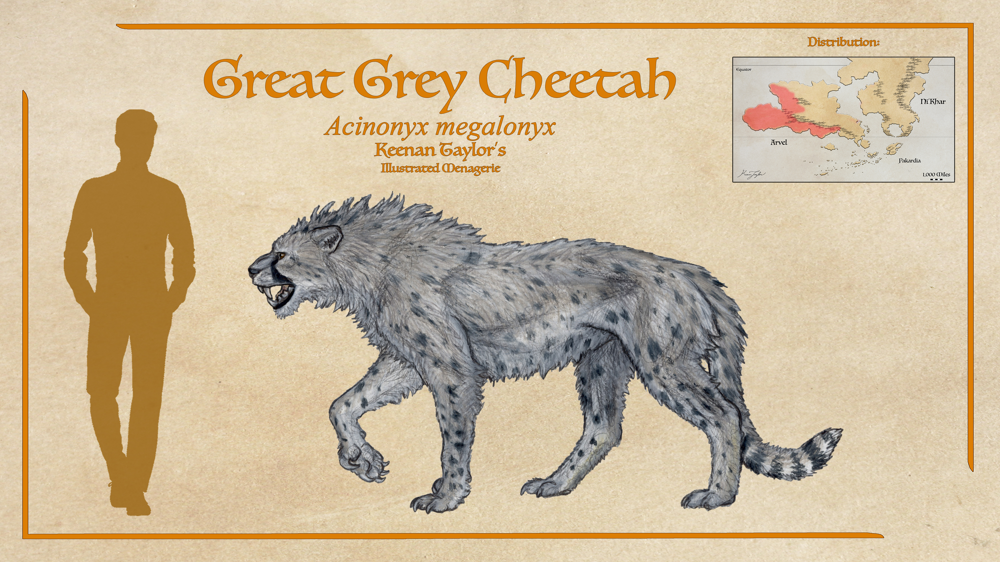
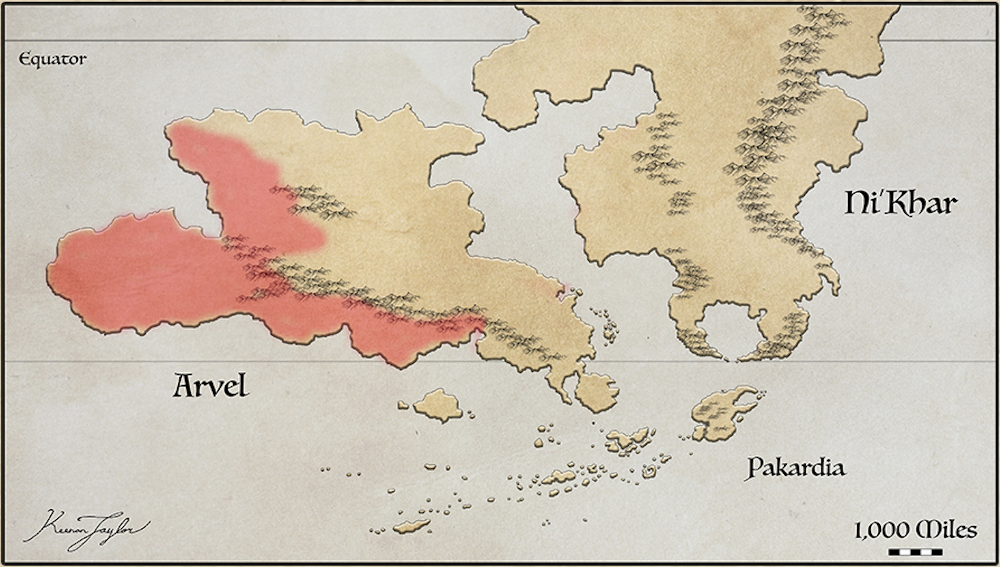
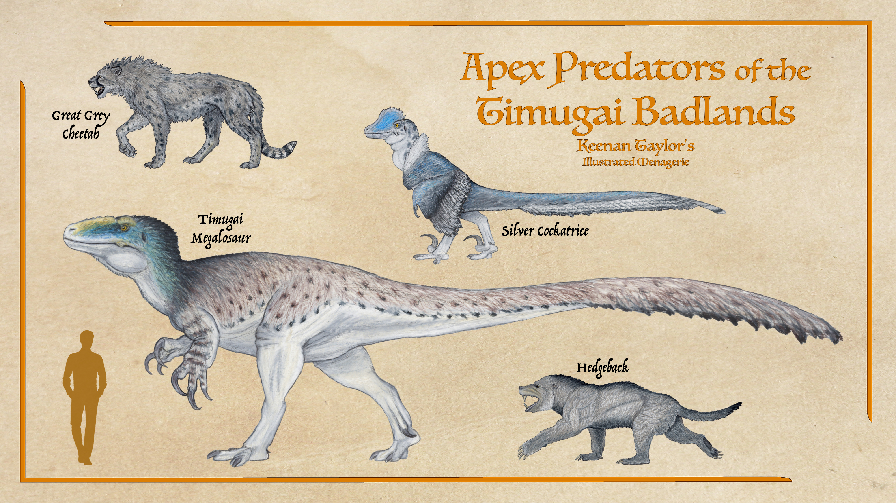
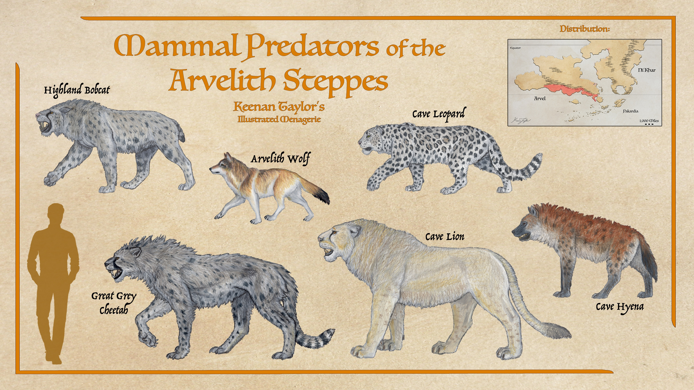

01 · MORPHOLOGY
Description
The great grey cheetah (Acinonyx megalonyx), also known as the Timugai cheetah, is an exceptionally large felid endemic to western and southern Arvel. It represents one of the most unusual evolutionary developments within Felinae, retaining the fundamental cursorial adaptations of the cheetah lineage while possessing a substantially more robust body, enlarged cranial musculature, powerful forelimbs, and disproportionately developed grasping claws. With the largest males attaining body masses of approximately 250 kilograms, the species is the heaviest known member of Felinae on either Earth or Kaimere. Its extraordinary size places it among the most imposing mammalian predators of the Known World, although its proportions differ considerably from those of the larger pantherines. Rather than achieving its size through the heavily reinforced, relatively short-limbed construction characteristic of many large terrestrial felids, A. megalonyx retains an elongated, athletic silhouette, combining an enlarged torso with long limbs and a flexible vertebral column. The resulting animal is neither a conventional cheetah enlarged to extreme proportions nor a typical powerfully built big cat, but a specialized cursorial predator in which speed, grappling strength, and the ability to subdue comparatively large prey have evolved together.
In overall appearance, the great grey cheetah retains the recognizable outline of a large Acinonyx, but its proportions are considerably more imposing. The trunk is elongated yet deep, with a broad thorax, substantial abdominal musculature, and a powerful pelvic region supporting exceptionally developed hindlimbs. Its body is not as lightly constructed as that of smaller cheetahs, and the musculature of the shoulders and forequarters is especially pronounced. The resulting silhouette is less gracile than that of the great white cheetah or modern African cheetah, producing an animal whose build approaches that of a large terrestrial grappling predator while retaining the fundamental locomotor characteristics of a cursorial felid. Its mass is distributed across a strongly muscled axial skeleton, and its limbs are sufficiently elongated to preserve considerable stride length despite the additional weight. This combination allows the species to accelerate rapidly across open terrain, although its greater body mass and reinforced forequarters necessarily impose limitations on maximum speed, maneuverability, and endurance when compared with its smaller relatives.
The distinction between the great grey cheetah and other large felids is particularly evident in the relationship between its locomotor apparatus and its prey-capture anatomy. Cheetahs on Earth rely heavily upon acceleration, rapid directional changes, and the use of their forelimbs to destabilize fleeing prey. The Timugai cheetah retains these basic characteristics but places greater emphasis on physical restraint. Its forelimbs are more robust and flexible, allowing the animal to redirect its momentum, seize struggling prey, and maintain control during close contact. The shoulder girdle supports powerful musculature, while the forearm and manus provide the leverage required to grapple with animals substantially heavier than the usual prey of smaller cheetahs. These modifications are not without costs. The additional muscular development and skeletal reinforcement increase the mass that must be accelerated during a sprint, while the greater emphasis on grappling reduces the degree to which the limbs are optimized exclusively for high-speed running. Nevertheless, the species remains the fastest large predator in western Arvel, retaining sufficient cursorial ability to overtake the numerous camelids, horses, and elasmarians inhabiting its principal hunting grounds.
02 · DISTRIBUTION
Habitat Range and Distribution

The great grey cheetah is endemic to western and southern Arvel, where it occupies a geographically extensive but historically contracted distribution encompassing subtropical deserts, semi-arid steppes, open prairies, mountainous uplands, and seasonally humid monsoon forests. Its present range is concentrated in the western portion of the continent, particularly within the Timugai Badlands and the surrounding desert and highland systems bordering the Sun-Eater Ocean. Although the species is conventionally classified as an inhabitant of open country, its ecological distribution is considerably more complex than this designation implies. Great grey cheetahs exploit a heterogeneous assemblage of environments whose suitability depends upon the availability of terrestrial prey, the distribution of dependable water sources, the configuration of local terrain, and the presence of competing large predators. Their habitat preferences are therefore best understood in relation to the broader climatic and ecological structure of western Arvel, where pronounced seasonal fluctuations in precipitation produce substantial changes in vegetation, surface water, and prey distribution.

Western Arvel constitutes one of the most distinctive climatic regions of Kaimere. The immense Arvelith Highlands separate its predominantly arid western territories from the considerably more humid environments of eastern Arvel, creating a substantial rain shadow across the continental interior. Moisture-bearing air originating over the Trakaiam Sea releases much of its precipitation along the eastern slopes of the mountain chain, sustaining the Titan Gardens and Beastfolk Jungle. As these air masses cross the highlands and descend toward the west, they lose much of their moisture and warm through adiabatic compression. The resulting atmospheric conditions favor extensive deserts and semi-arid landscapes, despite the region's relatively low latitude and proximity to warm tropical waters. For much of the year, prevailing winds transport hot, dry continental air toward the Sun-Eater Ocean, reinforcing the aridity of the western interior and limiting the development of continuous forest cover. These conditions establish the principal environmental framework within which the great grey cheetah persists, particularly in the extensive open landscapes where visibility, terrain accessibility, and the distribution of herbivorous animals favor cursorial predation.
The deserts of western Arvel represent the species' principal habitat. These aridlands are not uniform expanses of loose sand, but complex geomorphological systems comprising gravel plains, rocky plateaus, wind-carved badlands, stabilized dune fields, dry river channels, and isolated uplands. Vegetation is generally sparse, consisting of drought-tolerant shrubs, scattered trees, seasonal herbs, and grasses concentrated in locations where soil moisture is temporarily available. During prolonged dry periods, much of the landscape becomes comparatively barren, with biological activity concentrated around permanent springs, groundwater-fed depressions, and the limited number of rivers descending from the Arvelith Highlands. The apparent scarcity of life across the intervening terrain nevertheless conceals a productive network of ecological refugia capable of supporting substantial herbivore populations.
These desert environments are particularly suitable for the great grey cheetah because they combine extensive hunting grounds with terrain that permits rapid acceleration and relatively unobstructed movement. Sparse vegetation allows individuals to detect potential prey over considerable distances, while rocky outcrops, shallow ravines, and irregular ground provide opportunities for concealment during the final approach. The species does not depend upon the uninterrupted, level grasslands conventionally associated with smaller cheetahs. Instead, its robust body and comparatively flexible forelimbs allow it to exploit broken terrain while retaining sufficient cursorial ability to pursue swift herbivores. Although its maximum speed and endurance are reduced relative to those of more gracile cheetahs, it remains exceptionally fast for a predator of its size. Consequently, the western deserts provide an effective combination of open ground for pursuit and localized structural complexity for ambush and prey interception.
The distribution of prey within these deserts is strongly influenced by the availability of water. Permanent oases and springs attract camelids, horses, elasmarians, and other terrestrial herbivores, particularly during the latter stages of the dry season, when scattered sources of surface water become increasingly important. These concentrations create predictable hunting opportunities for large predators, including the great grey cheetah. Male coalitions are frequently observed in the vicinity of major water sources, where they can exploit the movements of prey populations and potentially benefit from repeated access to productive hunting grounds. Although the species obtains a substantial proportion of its water from the animals it consumes, its unusually large body may impose greater absolute water requirements than those of smaller cheetahs. Whether this physiological consideration directly determines its association with oases remains uncertain, since these sites simultaneously provide access to prey, travel corridors, and locations where individuals can encounter potential coalition partners.
The hydrological structure of western Arvel further increases the importance of these localities. The Arvelith Highlands function as the principal watershed of the region, storing precipitation in high-elevation snowfields and seasonal ice before releasing meltwater into rivers that descend across the western slopes. Many waterways become intermittent or contract substantially during the dry season, but certain spring-fed channels and groundwater-supported systems retain surface water throughout much of the year. Along these corridors, relatively persistent vegetation supports herbivores that would otherwise be unable to remain in the surrounding desert. Gallery forests, riparian scrub, and isolated patches of woodland consequently form narrow bands of biological productivity extending into otherwise arid landscapes. Great grey cheetahs may exploit these corridors as hunting grounds and movement routes, although dense vegetation immediately surrounding some water sources can limit the effectiveness of high-speed pursuit. The most favorable locations are therefore likely to be those where productive riparian environments adjoin open ground, allowing the cats to approach prey under cover before pursuing it across unobstructed terrain.
Seasonal changes in atmospheric circulation introduce an additional dimension to the ecology of western Arvel. For most of the year, descending dry air and persistent offshore winds maintain conditions unfavorable to sustained vegetation growth. The arrival of the summer monsoon, however, produces a substantial reversal in the regional climatic regime. As the land becomes warmer than the adjacent waters of the Bay of Timugai, the atmospheric pressure gradient shifts and draws moisture-laden maritime air inland. Tropical cyclones and monsoonal storms deliver concentrated rainfall to the coastal lowlands, while orographic uplift along the western foothills of the Arvelith Highlands further enhances precipitation. Rivers swell, temporary wetlands appear, and dormant vegetation responds rapidly to the renewed availability of moisture. The resulting increase in primary productivity supports a temporary expansion of herbivore populations and alters the distribution of prey across the surrounding deserts.
The monsoon does not transform all of western Arvel equally. The forests immediately surrounding the Bay of Timugai receive the greatest benefit from the seasonal influx of maritime moisture, whereas the neighboring deserts may experience little more than scattered thunderstorms and brief episodes of surface runoff. Nevertheless, even limited rainfall can produce rapid ecological responses across the aridlands, encouraging the germination of annual plants and attracting herbivores to newly productive feeding grounds. For the great grey cheetah, these seasonal changes are likely to redistribute hunting opportunities rather than eliminate the importance of permanent water sources. During wetter intervals, prey may disperse across a wider area, reducing its immediate concentration around oases. As the landscape dries, herbivores increasingly congregate near dependable water, potentially improving hunting opportunities for individuals capable of locating and exploiting these concentrations. The species consequently inhabits a landscape in which the spatial distribution of prey changes substantially over the course of the year.
The monsoon forests constitute a contrasting but ecologically significant component of the great grey cheetah's range. Situated around the Bay of Timugai, this environment develops under a highly seasonal rainfall regime that produces alternating periods of relative dryness and intense biological productivity. During the prolonged dry season, deciduous trees shed much of their foliage, understory vegetation becomes sparse, and numerous streams contract into isolated pools. The forest consequently assumes the appearance of open woodland or wooded savanna in many localities, with broad clearings and exposed ground interspersed among denser vegetation. Following the arrival of the monsoon, rainfall replenishes the soil, rivers overflow, and vegetation rapidly regenerates. The canopy becomes denser, floodplains expand, and previously open areas may become difficult to traverse. These contrasting seasonal conditions create a habitat whose suitability for large terrestrial predators varies substantially throughout the year.
Great grey cheetahs occur within the monsoon forest but are considerably less common there than in the surrounding deserts and mountains. The forest's dense vegetation and irregular terrain reduce the advantages of high-speed pursuit, particularly during the wet season when ground cover becomes extensive and flooding may restrict movement. Nevertheless, the species can exploit woodland margins, riverine clearings, seasonally open forest, and transitional scrub where vegetation provides concealment without entirely obstructing pursuit. These environments may also support prey unavailable in the more exposed desert interior, particularly where herbivores congregate along waterways or exploit the brief abundance of seasonal vegetation. The monsoon forest therefore appears to function as a supplementary habitat rather than the principal ecological center of the species. Its relative scarcity within this environment may reflect both the limitations imposed by vegetation structure and the presence of competing predators better adapted to hunting within dense cover.
The predator community of western Arvel further influences the distribution of the great grey cheetah. Silver cockatrices, large and socially flexible dromaeosaur predators, are among the most widespread terrestrial carnivores in the region. Their adaptability allows them to hunt across deserts, steppes, mountains, and forest margins, while their ability to operate independently or in groups provides access to prey of varying sizes. They are particularly important competitors in open habitats, where their mobility and behavioral flexibility permit them to exploit many of the same herbivore populations as the great grey cheetah. The Timugai megalosaur, an enormous member of the regional megaraptoran fauna, occupies a more specialized position as a dominant predator of the badlands. Although its enormous size and comparatively less cursorial build distinguish its hunting ecology from that of the cheetah, its presence contributes to the structure of the regional predator community and may influence the distribution and behavior of smaller carnivores.
The great grey cheetah's predominantly nocturnal activity is especially significant in this context. Silver cockatrices are generally more effective during daylight, when their visual systems function most effectively. By hunting after sunset, great grey cheetahs can reduce the frequency of direct encounters with these competitors while exploiting prey that remain active during the cooler hours. Nocturnal hunting is also advantageous during periods of intense daytime heat, particularly in the exposed deserts where shade is limited. However, this temporal specialization is less favorable in the southern Arvelith steppes, where cave hyenas become particularly dominant after dark. Their clan-based social organization and tendency to scavenge or appropriate the kills of other predators create a substantial challenge for a large solitary hunter that requires considerable quantities of food. Cave lions also pose a potential threat to feeding success, particularly where their ranges overlap with those of the cheetahs. The species' distribution is consequently shaped not simply by the availability of suitable terrain and prey, but also by the extent to which local predator communities permit it to hunt and feed without excessive interference.
The Arvelith Highlands represent another important component of the great grey cheetah's habitat. Although the mountain chain has traditionally been regarded as the eastern boundary of the species' range, confirmed sightings suggest that this interpretation may be overly restrictive. The highlands encompass a broad range of environments, including exposed slopes, rocky plateaus, sheltered valleys, upland grasslands, and forested drainage systems. Elevation produces considerable local variation in temperature and precipitation, while the mountains' extensive watersheds sustain rivers that remain productive after rainfall has ceased elsewhere. These conditions support diverse herbivore populations and create numerous corridors connecting the western deserts with the more humid interior.
The great grey cheetah's robust build and relatively flexible forelimbs may be advantageous in these rugged environments, allowing it to negotiate uneven terrain and grapple with prey at close quarters. Although its locomotor specializations remain those of a cursorial predator, the species is not restricted to flat ground. Slopes, rocky terraces, and valley margins can provide suitable hunting opportunities where prey movements are predictable and vegetation remains sufficiently open. Its presence in the highlands is nevertheless poorly documented. The animal's nocturnal habits, its resemblance to certain grey-furred forms of Homotherium, and its body proportions, which can suggest a cave lion when observed at a distance, complicate identification. These factors may have contributed to an underestimation of its distribution across the mountainous interior and the transitional landscapes east of the principal desert systems.
Historically, the great grey cheetah occupied a substantially broader range across southern Arvel. Its former distribution extended through the southern steppes and onto the Qajarith Peninsula, where extensive open habitats supported populations of terrestrial herbivores and provided conditions favorable to a large cursorial predator. The peninsula appears to have functioned as an important refuge as the species declined elsewhere, although the precise chronology and causes of its regional contraction remain uncertain. Approximately ten thousand years ago, the arrival of the First Children initiated a period of intensive human alteration of the peninsula's megafaunal communities. Their deliberate culling of large animals to reduce the dangers associated with settlement substantially altered the regional predator — prey system. The resulting reduction in prey availability, combined with the direct pressures imposed upon large carnivores, ultimately eliminated the peninsula's remaining great grey cheetahs. Western Arvel consequently became the species' final major stronghold.
The modern distribution of A. megalonyx should therefore be understood as the product of both habitat suitability and historical range contraction. Its principal populations persist in the western deserts and mountainous regions, where open terrain, seasonally concentrated prey, and relatively predictable water sources support its distinctive combination of cursorial and grappling adaptations. Smaller and less frequently observed populations occupy the monsoon forests and the transitional environments of the southern steppes, while historical evidence indicates that the species once extended considerably farther across the continent. Reports from east of the Arvelith Highlands suggest that its actual distribution may exceed conventional estimates, particularly where open uplands and valleys provide continuous habitat between the mountains and the interior steppes. Whether these occurrences represent a connected population or a series of isolated remnants remains unresolved. What is clear is that the great grey cheetah is not merely a desert specialist, but a large and ecologically flexible felid whose present distribution reflects the interaction of western Arvel's extreme climatic seasonality, complex topography, diverse prey communities, and an increasingly restrictive historical range.
03 · NOMENCLATURE
Etymology
The great grey cheetah, is also known as the Timugai cheetah, a regional name derived from its principal association with the deserts, highlands, and other arid environments of western Arvel. The common name great grey cheetah refers to the species' exceptionally large body size and characteristic grey pelage, which distinguishes it from the smaller cheetahs inhabiting other regions of Kaimere. Among the largest known representatives of Felinae, the species possesses a substantially more robust constitution than its more gracile relatives, with enlarged forequarters, powerful jaws, and unusually developed foreclaws. The alternative designation, Timugai cheetah, associates the animal with the Timugai region and its distinctive assemblage of large predators, including the enormous Timugai megalosaur. Both common names are used interchangeably, although the former emphasizes its external appearance and exceptional dimensions, whereas the latter reflects its geographical and ecological identity.
The generic name Acinonyx is derived from the Ancient Greek akínētos (ἀκίνητος), meaning "motionless" or "immobile," and ónyx (ὄνυξ), meaning "claw." The name refers to the distinctive claw morphology characteristic of cheetahs, whose claws are considerably less retractile than those of most other felids. This condition provides improved traction during rapid terrestrial locomotion, allowing the animal to maintain its footing while accelerating and changing direction. Although the great grey cheetah is substantially heavier and more powerfully constructed than the smaller members of its genus, it retains this fundamental anatomical characteristic. Its claws remain adapted to cursorial movement, while its exceptionally enlarged forelimb dew claws additionally assist in gripping, destabilizing, and restraining relatively large prey. The genus name therefore remains applicable to the species despite its departure from the lightweight body plan commonly associated with cheetahs.
The specific epithet megalonyx is derived from the Ancient Greek mégas (μέγας), meaning "great" or "large," and ónyx (ὄνυξ), meaning "claw." The combined name may consequently be interpreted as "great-clawed" or "large-clawed." This designation refers principally to the species' disproportionately developed dew claws, which are among the largest found in any cheetah, both in absolute dimensions and relative to body size. Unlike the more modestly developed dew claws of smaller cheetahs, those of A. megalonyx are sufficiently enlarged that they are commonly held in a forward-oriented position rather than pointing predominantly backward. Their morphology reflects the species' increased reliance on forelimb grappling during the capture of large-bodied prey. Although the animal retains the capacity for rapid pursuit, its greater mass and more robust forequarters distinguish it from the highly gracile cheetahs upon which the genus is conventionally based. The epithet thus identifies one of the most conspicuous anatomical specializations of the species rather than referring exclusively to its overall size.
The name Timugai cheetah remains particularly useful in regional zoological literature because the species occupies an ecological setting characterized by unusually large and diverse predators. Western Arvel supports several major carnivorous lineages, including the Timugai megalosaur, silver cockatrices, hedgebacks, and multiple large felids. Within this assemblage, the great grey cheetah is distinguished by its combination of considerable body mass, high terrestrial speed, and a predominantly nocturnal activity pattern. Its association with desert water sources and mountainous terrain has also contributed to its recognition as a characteristic predator of the western Arvelith region. The regional name therefore functions as more than a geographical label, distinguishing this particular cheetah from other large-bodied members of the genus occurring elsewhere on Kaimere.
04 · ANATOMY AND PHYSIOLOGY
Adaptations
The great grey cheetah represents an extreme specialization within the cheetah lineage toward large-bodied cursorial predation. Descended from the Eurasian giant cheetah (Acinonyx pardinensis), it retains the elongated limbs, flexible vertebral column, and running-adapted extremities characteristic of its ancestors, but combines these features with a substantially more robust skeleton, enlarged cranial apparatus, powerful forelimbs, and exceptionally developed dew claws. At a maximum recorded mass of approximately 250 kilograms in large males, it is the largest known member of Felinae on either Earth or Kaimere.
Its morphology reflects the demands of pursuing and subduing relatively large prey across the arid badlands, deserts, and open steppes of western Arvel. Unlike smaller cheetahs, which rely heavily on acceleration and extreme sprint speed to capture comparatively light prey, the great grey cheetah possesses a more balanced combination of cursorial ability, grappling strength, and killing power. Its body is sufficiently elongated and athletic to sustain high-speed pursuit, while its heavier trunk, powerful shoulders, and enlarged forequarters provide the mechanical strength necessary to destabilize and restrain larger animals.
The species inhabits a geographically and climatically varied region, encompassing dry desert basins, rocky highlands, open grasslands, and monsoon forests. Its morphology is particularly suited to the open, relatively dry landscapes where it is most abundant, although its adaptations do not prevent it from operating in wooded or mountainous terrain. Its predominantly nocturnal activity further distinguishes it from smaller, primarily diurnal cheetahs and reduces its exposure to the silver cockatrice, an important competitor in western Arvel.
Skull
The skull of the great grey cheetah exhibits a robust cranial architecture that distinguishes it from the more gracile skulls of smaller cheetahs and other cursorial felids. Although it retains the fundamental anatomical organization characteristic of Felidae, its proportions reflect the mechanical demands imposed by its exceptional body mass, powerful forelimbs, and capacity to subdue comparatively large prey. The cranium is broad, the facial skeleton deep, and the mandibular apparatus substantially developed. These characteristics provide the structural foundation for powerful jaw closure and sustained gripping, allowing the animal to restrain prey through a combination of biting, pulling, and forceful movements of the head and neck. Rather than representing a simple enlargement of the typical cheetah skull, the cranial anatomy of A. megalonyx reflects a shift in functional emphasis from minimizing head mass for high-speed pursuit toward balancing locomotor efficiency with the demands of grappling and controlling large-bodied animals.
The overall cranium is comparatively massive in relation to that of the great white cheetah. Its greatest breadth occurs across the posterior facial region and the zygomatic arches, while the rostrum remains relatively compact and deep. The resulting skull is neither as narrow nor as lightly constructed as that of the smaller, more gracile members of the genus. This increased breadth provides additional space for the muscles responsible for jaw closure and permits a more substantial arrangement of the bones surrounding the tooth-bearing portions of the face. The relatively shortened facial region also improves the mechanical efficiency of the bite by reducing the distance between the principal biting teeth and the jaw joint. Because the jaw functions as a lever, a shorter effective out-lever can increase the force delivered at the teeth for a given muscular input, although the actual advantage depends upon the positions of the muscle attachments, the dimensions of the mandible, and the location at which the teeth contact the prey.
The premaxillae form the anterior extremity of the upper jaw and support the upper incisors. In the great grey cheetah, these bones contribute to a broad, substantial muzzle rather than the particularly narrow anterior profile associated with highly gracile cheetahs. Their alveolar margins must accommodate the incisors while maintaining the integrity of the anterior facial skeleton during feeding and prey restraint. The incisors are relatively minor components of the killing apparatus compared with the canines and carnassials, but they remain important in gripping tissue, stripping flesh, and manipulating food. During prey capture, the anterior teeth may help secure a hold on loose skin or other accessible tissue while the canines establish a deeper grip. The premaxillae therefore participate in the transfer of localized forces through the front of the skull, where asymmetrical loading can occur if the animal bites into moving prey at an oblique angle.
Immediately behind the premaxillae, the maxillae form much of the upper facial skeleton and support the upper canine teeth, premolars, and other cheek teeth. These bones are particularly important to the great grey cheetah because the canines may be subjected to considerable bending forces when embedded in the neck, muzzle, or other substantial tissues of a struggling animal. A canine does not experience only direct compression during such an encounter: movement by the prey can produce lateral loading and torsion, particularly if the predator maintains its grip while pulling or repositioning its head. The depth and reinforcement of the maxillae help distribute these forces around the canine alveoli and into the surrounding facial skeleton. The upper jaw must remain sufficiently rigid to prevent excessive deformation of the tooth-bearing region, since displacement of the canines relative to the lower teeth could compromise the effectiveness of the bite or increase the risk of dental injury.
The maxillae also contribute to the substantial proportions of the muzzle. Their increased depth accommodates the roots of the teeth and provides a reinforced framework around the oral cavity, while the broad facial region helps distribute stresses between the rostrum and the more posterior portions of the cranium. This arrangement is especially relevant when the great grey cheetah attempts to maintain a grip on prey that substantially exceeds the mass of smaller ungulates normally taken by more lightly built cheetahs. The skull must withstand not only the initial impact of the bite but also the repeated loading associated with a prey animal twisting, struggling, or attempting to dislodge the predator. Nevertheless, the maxillae are not merely passive supports for the teeth; their shape also reflects the spatial requirements of the nasal passages and the need to preserve adequate respiratory function in a large, active predator.
The nasal bones extend along the dorsal surface of the rostrum, forming the upper boundary of the nasal cavity. Their proportions contribute to the deep profile of the muzzle, while the underlying nasal passages accommodate airflow during ordinary activity and strenuous locomotion. Although the great grey cheetah is more robustly constructed than the great white cheetah, it remains a cursorial predator and cannot sacrifice respiratory efficiency without consequence. Its nasal region must therefore accommodate the requirements of ventilation alongside the structural demands of a broader facial skeleton. The relationship between skull proportions and respiratory capacity should not, however, be interpreted as a direct measure of running performance: airflow is also influenced by the soft tissues, nasal turbinates, pharynx, and other components of the respiratory tract. The skull provides the enclosing framework for these structures rather than determining respiratory efficiency on its own.
The lacrimal bones form part of the anterior margins of the orbits and contribute to the separation between the orbital cavities and the nasal region. The orbits are directed forward, preserving the binocular visual field characteristic of felids. This orientation allows the great grey cheetah to estimate distances and track the movements of prey with considerable precision, particularly during the approach and final stages of an attack. Its hunting strategy places substantial demands on visual judgment, even where capture depends less upon an uninterrupted high-speed chase than it does in smaller cheetahs. A large prey animal may change direction abruptly, turn toward the predator, or attempt to strike with its head or limbs. Accurate visual assessment is consequently important not only for interception but also for choosing an approach angle that minimizes the risk of injury. The orbital margins must protect the eyes while retaining sufficient space for the visual apparatus, and the surrounding cranial bones provide a stable framework for the muscles that move and orient the head.
The frontal bones form the dorsal roof of the anterior braincase and contribute to the upper margins of the orbits. In the great grey cheetah, their relationship to the broader facial region produces a substantial transition between the rostrum and neurocranium. The frontals provide a protective covering over the anterior portion of the braincase while also forming part of the structural framework that resists forces transmitted through the face during biting. Their surfaces and adjoining sutures distribute stress across the cranial roof rather than concentrating it at a single point. This is particularly important in a predator whose prey may exert considerable leverage against the head during restraint. The frontal bones must also accommodate the orbital region without excessive weakening of the surrounding structure, preserving the balance between cranial protection and the spatial requirements of the eyes.
Posterior to the frontals, the parietal bones form much of the dorsal surface of the neurocranium. The parietal region provides attachment for the temporal musculature and contributes to the strength of the cranial vault. In a large, powerfully built felid, the temporal muscles are expected to be substantially developed because they supply much of the force required to elevate the mandible and close the jaws. Their attachment areas are therefore an important component of cranial architecture. The sagittal crest, where developed, increases the surface available for attachment of the temporalis muscles along the dorsal midline. Its prominence may vary with age, sex, individual size, and the degree of muscular development. It would be inappropriate to assume that every adult possesses an equally pronounced crest, but the substantial jaw musculature expected in A. megalonyx would favor adequate attachment surfaces across the parietal region. The resulting structure helps accommodate muscular power without requiring the entire skull to become proportionately deeper or heavier.
The temporal fossae, located on the lateral surfaces of the cranium, provide space for the temporalis muscles. These muscles arise from the temporal region and insert upon the coronoid processes of the mandible, generating an important component of the force that closes the jaws. In the great grey cheetah, the relationship between the temporal fossae, parietal region, and zygomatic arches is expected to be more substantial than in smaller, more lightly built cheetahs. Increased space for the temporal musculature can support greater muscle volume, although the size of the fossae alone does not determine bite force. Muscle architecture, fiber orientation, physiological cross-sectional area, and the mechanical leverage of the mandible all contribute to the final result. The temporal region should therefore be understood as one element of an integrated feeding apparatus rather than an isolated indicator of cranial strength.
The zygomatic arches are among the most important structural features distinguishing the broad cranium of the great grey cheetah. Each arch is formed principally by the jugal and the zygomatic process of the temporal bone, with its anterior region connected to the maxilla. The arches extend laterally from the face and help define the width of the skull behind the orbits. They also provide attachment for the masseter muscles, which contribute to jaw closure and stabilization. Their breadth increases the available space for these muscles and helps accommodate the substantial muscular apparatus expected in a predator of this size. At the same time, the arches must resist bending and torsional stresses generated when the animal bites unevenly or maintains contact with moving prey. A broad arch does not automatically guarantee exceptional strength, since its mechanical performance depends upon its cross-sectional shape, cortical thickness, internal structure, and points of attachment. Nevertheless, the more robust construction of the great grey cheetah is consistent with the need to transmit greater forces through the lateral cranium than would normally be expected in a much smaller cheetah.
The squamosal region of the temporal bone forms the principal cranial component of the jaw articulation. Its mandibular fossa receives the condylar process of the mandible, creating the joint through which the lower jaw opens and closes. As in other felids, this articulation primarily permits a hinge-like movement suited to rapid closure and the maintenance of a secure bite. Extensive side-to-side movement is unnecessary for the principal killing action and would compromise the precise alignment of the canines and carnassial teeth if it were permitted without constraint. The joint must instead allow sufficient opening for the canines to engage the prey while remaining stable under loading. In A. megalonyx, this stability is particularly important because the animal's substantial head and powerful neck can generate significant forces while it pulls backward or repositions its grip. The mandibular articulation must withstand these movements without allowing excessive displacement of the condyle.
The palate, formed principally by the palatine processes of the maxillae and the palatine bones, creates a rigid partition between the oral and nasal cavities. It also forms a structural platform through which some of the forces generated during biting can be distributed across the facial skeleton. Posteriorly, the pterygoid region provides attachment for the medial pterygoid muscles, which assist jaw closure and contribute to stabilization of the mandible. These muscles work in concert with the temporalis and masseter rather than acting independently. Their combined action produces the controlled, sustained closure required to retain a grip on struggling prey. The broad facial construction of the great grey cheetah provides space for this muscular arrangement while maintaining the integrity of the palate and surrounding bones. The result is a feeding apparatus better suited to prolonged restraint than one optimized exclusively for the rapid closure and release associated with smaller prey.
The posterior cranium is formed by the occipital complex, including the supraoccipital, exoccipital, and basioccipital regions. These bones surround the foramen magnum, through which the spinal cord enters the cranial cavity, and provide attachment surfaces for muscles and ligaments controlling the head and neck. In the great grey cheetah, these attachments are particularly significant because prey restraint involves more than the isolated action of the jaw muscles. The animal must stabilize its head while the neck muscles oppose the movements of the prey, and its forelimbs may simultaneously pull, hold, or reposition the target. The occipital region consequently forms part of a broader mechanical system linking the skull to the cervical vertebrae and shoulder girdle. A robust cranial attachment for the neck musculature helps control head movement during forceful biting, while the surrounding bones protect the junction between the braincase and vertebral column.
The occipital condyles articulate with the atlas, the first cervical vertebra, and permit movement of the head relative to the neck. Their form must balance mobility with stability. The great grey cheetah requires sufficient movement to track prey, adjust the position of its jaws, and respond to sudden changes in the direction of a struggle. At the same time, the head must remain securely aligned with the cervical column when the animal applies force through its teeth. The neck musculature and supporting ligaments help control these movements, reducing the likelihood that the skull will be displaced excessively during restraint. This integration of cranial and cervical anatomy is especially important in a felid that combines substantial body mass with a hunting technique involving close physical contact with large animals.
The mandible follows the robust pattern evident throughout the skull. Each dentary forms the principal tooth-bearing bone of the lower jaw, extending from the anterior symphyseal region to the ascending ramus. Compared with the relatively slender mandible expected in smaller, highly gracile cheetahs, that of A. megalonyx is deeper and more substantial, providing a stronger longitudinal structure between the biting teeth and the jaw joint. Its depth helps resist bending when the canines are embedded in prey and forces act against the lower jaw. The mandibular symphysis, where the left and right dentaries meet at the front of the jaw, must also withstand stresses produced when the animal bites asymmetrically. Although the two sides of the mandible remain separate bones, their union at the symphysis helps stabilize the anterior jaw and limits excessive independent movement under load.
The ascending ramus rises behind the tooth-bearing body of the mandible and supports the major jaw-closing muscles. Its coronoid process provides the principal insertion for the temporalis muscle, while the masseter attaches along the lateral surface and the angular region. The relative size and orientation of these processes influence the leverage available to the jaw muscles. A well-developed coronoid process can accommodate a substantial temporalis insertion, while the angular region contributes attachment for the masseter and medial pterygoid. The mandibular condyle articulates with the temporal bone, completing the lever system through which muscular force is transmitted to the teeth. The great grey cheetah's robust mandible and substantial muscle attachments are consistent with powerful biting, but the amount of force produced in any particular bite will depend on the animal's posture, the degree of jaw opening, the location of tooth contact, and the muscles recruited during the action.
The skull's functional significance is most evident during the capture of large prey. A great grey cheetah may need to establish a grip on the neck or muzzle of a camelid, withstand vigorous movements of the head and body, and maintain contact while its forelimbs help control the animal. The canines provide penetration and secure engagement, while the cheek teeth and carnassials are adapted for cutting and processing flesh. The jaw musculature maintains closure, and the reinforced facial skeleton distributes the resulting loads toward the cranium. No single bone or muscle performs this task alone. Successful restraint depends upon coordinated action across the maxillae, zygomatic arches, temporal region, mandible, and cervical musculature. The skull's robustness is therefore not simply a consequence of the animal's large size; it reflects the mechanical demands of a hunting strategy that exposes the head to substantial forces at close quarters.
On the basis of its exceptional body mass, comparatively broad cranium, deep facial skeleton, and substantial jaw musculature, the great grey cheetah would be expected to possess a considerably stronger bite than smaller cheetahs. A provisional estimate for an adult A. megalonyx is approximately 900 — 1,200 PSI at the principal canine contact surfaces, with exceptionally large, fully mature individuals potentially reaching around 1,300 — 1,500 PSI during a maximal bite. These figures are speculative biomechanical estimates for the species, not measured values, and should be treated as working estimates pending a more detailed model of its skull dimensions and jaw-muscle anatomy. PSI describes pressure at the point of contact rather than total bite force: the pressure generated by the teeth depends upon the force applied and the area over which that force is distributed. Bite performance will also vary with the position of the bite, since a bite delivered near the canines generally differs mechanically from one delivered farther back along the tooth row. These estimates should therefore not be interpreted as a single fixed value applicable to every bite or individual. The estimated bite pressure is consistent with the great grey cheetah's role as a massive felid capable of restraining prey larger and more dangerous than those typically pursued by smaller members of Acinonyx. It does not imply that the species possesses the specialized crushing apparatus of the most robust pantherines, nor that bite pressure alone determines its ability to kill large prey.
Dentition
The dentition of the great grey cheetah represents a robustly developed version of the specialized carnivoran dental apparatus characteristic of Felidae. Although its teeth retain the fundamental arrangement found in other living felids, their proportions and mechanical relationship with the skull reflect the species' exceptional body mass and its capacity to subdue comparatively large prey. The enlarged canines, substantial tooth-bearing portions of the jaws, and powerful carnassial apparatus form an integrated feeding system adapted for penetrating tissue, maintaining a secure grip, and processing large quantities of flesh. These features distinguish the great grey cheetah from the more gracile great white cheetah and smaller members of Acinonyx, whose dentition is associated with a lighter cranial structure and a greater emphasis on capturing relatively small, agile prey.
The dental anatomy of A. megalonyx must be understood in conjunction with the remainder of its predatory apparatus. Its teeth do not independently account for the animal's ability to subdue large camels, horses, or elasmarians. Rather, the dentition establishes and maintains contact with the prey, while the reinforced skull, powerful neck, muscular forequarters, and enlarged claws contribute to restraint. During an attack, the canines penetrate and secure tissue, and the jaw musculature maintains the bite while the forelimbs are used to grip, pull, or destabilize the victim. Once the prey has been subdued, the incisors, premolars, and carnassials perform different but complementary roles in manipulating and cutting the carcass. The resulting dental system is therefore specialized not merely for killing, but for the entire sequence of feeding, from initial contact with prey to the removal and ingestion of flesh.
Like other felids, the great grey cheetah is a heterodont mammal, possessing teeth differentiated into incisors, canines, premolars, and molars. It is also diphyodont, developing an initial deciduous dentition that is subsequently replaced by permanent teeth. The deciduous teeth serve during early growth, when juveniles begin transitioning from maternal milk toward the consumption of animal tissue. The permanent dentition provides the mature animal with teeth capable of withstanding the greater mechanical demands associated with capturing live prey and processing substantial carcasses. As in other felids, the dental arcade is organized around a limited number of highly specialized teeth rather than broad grinding surfaces. This arrangement reflects an obligately carnivorous feeding strategy in which the reduction of flesh into manageable portions is more important than the prolonged grinding of plant material.
The permanent dental formula of the great grey cheetah follows the standard felid arrangement: I 3/3, C 1/1, P 3/2, M 1/1 = 30 permanent teeth. The formula therefore corresponds to six upper and six lower incisors, two upper and two lower canines, six upper and four lower premolars, and two upper and two lower molars. The total is thirty permanent teeth. The deciduous dentition contains twenty-six teeth, following the juvenile formula I 3/3, C 1/1, P 3/2, M 0/0. The absence of deciduous molars is characteristic of the felid dental pattern. The permanent molars emerge as part of the adult dentition rather than replacing deciduous molars, while the deciduous canines and premolars are eventually replaced by their permanent successors.
The dental arcades are relatively broad and substantial in keeping with the proportions of the skull. The upper arcade is supported by the maxillae, while the lower arcade is formed by the dentaries. Their arrangement maintains the close alignment required for the canines to penetrate tissue and for the carnassials to shear against one another during jaw closure. As in other felids, the mandible primarily moves through a hinge-like action rather than the extensive lateral excursions characteristic of mammals that grind plant material. This restricts unnecessary sideways displacement of the teeth and maintains effective alignment between the upper and lower cutting surfaces. The great grey cheetah's enlarged jaw apparatus allows these established felid mechanics to operate at a greater scale, accommodating the forces generated during the restraint and feeding of large-bodied prey.
The incisors form a compact row at the anterior extremity of the jaws. The six upper incisors are supported by the premaxillae, while the six lower incisors are situated along the anterior portions of the dentaries. Although small in comparison with the canines, the incisors perform several important functions. Their relatively narrow crowns and cutting margins permit precise manipulation of skin and soft tissue, allowing the animal to seize small pieces of flesh, remove tissue from exposed surfaces, and strip material from portions of a carcass. During feeding, the incisors can also help secure loose tissue while the head and neck pull against it. Their function is therefore primarily one of close-range handling rather than the delivery of the principal killing bite. The incisors also participate in grooming. Like other felids, the great grey cheetah uses its anterior teeth to manipulate the pelage and remove foreign material that accumulates during movement through its environment. Dust, dried blood, fragments of vegetation, and other debris can become caught in the coat, particularly after a hunt or while feeding on a carcass. The incisors provide a means of cleaning and separating hairs in areas that cannot be reached as effectively with the paws or tongue alone. Although their relatively small size limits their capacity to cut through thick tissue, their closely arranged crowns make them effective tools for repeated, controlled movements. Their significance lies in this precision rather than in the production of large forces.
The four permanent canines are the most conspicuous elements of the great grey cheetah's anterior dentition. The upper pair is implanted deeply within the maxillae, immediately behind the incisors, while the lower pair rises from the anterior regions of the mandible. These teeth are enlarged relative to those of smaller cheetahs, reflecting the greater demands placed upon them during prey restraint. Their crowns are elongated and pointed, providing the penetration necessary to establish a secure grip in the neck, muzzle, or other accessible regions of a prey animal. They are conical rather than developed into the extreme, blade-like forms associated with specialized saber-toothed predators. This configuration favors penetration and resistance to the varied loading experienced during a struggle rather than the delivery of a single, exceptionally deep cutting wound. The geometry of the canines is mechanically important. During a bite, the teeth may encounter forces directed along their long axes, but they are also exposed to bending and torsion as prey twist, kick, or attempt to pull away. A canine embedded in the tissues of a large camelid or elasm arian may be subjected to considerable lateral loading if the prey turns its head while the predator maintains its grip. The teeth must therefore resist more than simple compression. Their crown and root geometry, the properties of the underlying dentine, and the supporting periodontal tissues all contribute to their ability to withstand these forces. The enlarged canines of A. megalonyx are suited to penetrating substantial tissue and retaining contact during a prolonged struggle, while the surrounding bones distribute the resulting stresses through the skull. The roots of the canines extend into the maxillary and mandibular alveoli, anchoring the teeth within the jaws. Deep implantation is important because the functional value of a canine depends not only upon its ability to enter tissue, but also upon its ability to remain securely supported once the prey begins to resist. The periodontal ligament and associated tissues provide a limited degree of compliance around each root, helping distribute forces between the tooth and the alveolar bone. The surrounding bone must resist localized pressure and bending without excessive deformation. This relationship between crown, root, periodontal tissues, and jaw is particularly important in a large predator whose prey may be capable of inflicting serious injuries if it escapes or dislodges the bite. The great grey cheetah's canines therefore function as penetrating anchors within a larger restraint system, rather than as isolated weapons. The canines also contribute to prey dispatch. When the animal secures a bite around the throat or muzzle, the teeth maintain contact while the jaw muscles and neck musculature apply sustained pressure. The exact location of the bite varies according to prey size, posture, and the circumstances of the attack. Smaller prey may be subdued relatively quickly, whereas larger animals require more extensive restraint and coordinated use of the forelimbs. In such cases, the canines provide the initial hold, but the outcome depends upon the predator's ability to maintain that hold and prevent the prey from using its mass or limbs effectively. The great grey cheetah's enlarged canines are consequently associated with a more demanding prey-subduing role than that of smaller, more gracile cheetahs, without requiring the specialized cranial and dental architecture of a machairodont.
Immediately behind the canines lie the premolars, which form a transitional series between the anterior gripping teeth and the carnassial apparatus. The upper jaw possesses three permanent premolars on each side, while the lower jaw possesses two. These teeth generally have pointed cusps and cutting margins rather than broad, flattened surfaces for grinding. Their functions include gripping tissue, puncturing resistant material, and tearing flesh during feeding. The more posterior premolars are particularly important because they lie closer to the principal shearing teeth and contribute to the processing of thick muscle and connective tissue. Their crowns and roots must tolerate the forces generated when the animal pulls at a carcass or separates portions of tissue that remain attached by tough connective structures. The premolars also assist in retaining food within the mouth during feeding. When the great grey cheetah removes a portion of muscle from a carcass, the teeth engage the tissue while the head and neck draw backward. The premolars help stabilize the portion being removed and guide it toward the posterior cutting teeth. Their pointed crowns are suited to puncturing and holding rather than crushing, and their relatively narrow surfaces limit the extent to which they function as grinding structures. This arrangement is consistent with the feeding habits of an obligate carnivore that processes muscle and other animal tissues rather than mechanically reducing large quantities of fibrous vegetation. The principal shearing structures are the carnassials: the upper fourth premolar, designated P⁴, and the lower first molar, designated M₁. These teeth form the functional center of the felid dentition. Their elongated, blade-like crowns pass closely against one another during jaw closure, producing a scissor-like action that cuts muscle, fascia, and connective tissue. The carnassials are not broad grinding teeth. Their effectiveness depends upon the alignment of their cutting surfaces and the controlled movement of the mandible, which allows the opposing blades to shear through tissue with relatively little unnecessary lateral movement.
In the great grey cheetah, the carnassials operate within a larger and more robust dental apparatus than that of smaller cheetahs. Their size and supporting structures are consistent with the need to process substantial portions of flesh from large carcasses. Following a successful hunt, the animal must separate muscle and connective tissues into pieces that can be swallowed. The carnassials provide the primary cutting action, while the canines and premolars secure the tissue and the incisors assist with finer manipulation. These functions are closely integrated, allowing the animal to move between gripping, pulling, and cutting without relying on a specialized grinding phase. The upper carnassial, P⁴, is situated in the maxilla and forms a prominent component of the upper cheek-tooth row. Its principal shearing blade is elongated along the tooth row, with the arrangement of its cusps producing a cutting edge that engages the lower carnassial during closure. The tooth is supported by the maxillary bone, which must resist the forces transmitted through the crown as it cuts through dense tissue. The lower carnassial, M₁, is located in the mandible and possesses a prominent anterior cutting region known as the trigonid. This region forms the principal shearing component of the tooth, while the posterior portion is comparatively reduced. Together, the upper and lower carnassials provide the main mechanism for dividing flesh into manageable pieces. Although the carnassials are capable of cutting through tough tissues, the great grey cheetah's dentition is not specialized for systematically crushing large bones. The blade-like crowns of the carnassials are adapted primarily for shearing, while the pointed canines and premolars serve penetration, gripping, and tearing functions. Dense bone presents a different mechanical challenge from muscle or connective tissue, requiring resistance to high localized loads that may damage cutting edges or fracture teeth. The great grey cheetah may consume soft skeletal material or small bone fragments incidentally while feeding, but its dental organization is fundamentally that of a flesh-processing predator rather than a dedicated bone-crusher. Its large body and powerful jaws should not be taken as evidence that every part of the carcass is exploited with equal efficiency. The remaining molars are comparatively reduced in relation to the carnassials. The single upper molar on each side contributes less to the principal shearing action than P⁴, while the lower first molar forms the lower component of the carnassial pair. Broad grinding surfaces are limited because prolonged mastication is of little importance in a diet dominated by animal tissue. This reduction is characteristic of felids and reflects the evolutionary specialization of the carnivoran cheek-tooth row. In A. megalonyx, the increased dimensions of the dentition do not alter this basic arrangement: the teeth remain organized around penetration, gripping, and shearing rather than extensive crushing or grinding.
The dental tissues are subject to different mechanical demands according to tooth function. Enamel forms the hard outer covering of the crowns and protects the underlying dentine from wear. The canines must withstand penetration and repeated bending loads, while the carnassials must preserve their cutting edges during repeated contact with tough tissues and opposing teeth. Dentine supports the enamel and contributes to the structural integrity of each crown, while the roots anchor the teeth within the jaws. The interaction of these tissues with the periodontal ligament and alveolar bone is essential to dental performance. A strong crown would be of limited value if its root were inadequately supported, just as a securely implanted tooth would be ineffective if its cutting edge could not retain its shape.
Dental wear accumulates throughout the animal's life. The incisors become polished through repeated contact with tissue and during grooming, while the canines gradually lose some of their sharpest points as they penetrate hide and other resistant materials. The premolars experience wear associated with gripping and tearing, and the carnassials develop wear surfaces through their repeated shearing action. Wear is influenced by diet, age, feeding behavior, and incidental contact with grit or hard material. As the animal ages, the progressive modification of the crowns may reduce their original sharpness, although the teeth remain functional as long as their cutting surfaces and supporting structures retain sufficient integrity. The condition of the dentition can consequently provide information about age, feeding history, and the cumulative mechanical demands experienced by an individual.
The development of the dentition is closely associated with the animal's transition from dependence upon its mother to independent feeding. Great grey cheetah cubs are born without erupted teeth. Deciduous teeth emerge during early development, allowing juveniles to begin manipulating and consuming increasingly substantial portions of animal tissue as they mature. The deciduous canines and premolars provide the initial means of gripping and tearing food, but they are eventually replaced by the permanent dentition. As the permanent canines, premolars, and carnassials develop, the juvenile acquires a dental apparatus capable of tolerating the greater forces associated with capturing and processing prey. The transition to the adult dentition is therefore an important part of its development as a large terrestrial predator.
Cervical Section
The cervical apparatus of the great grey cheetah forms a powerful, highly integrated mechanical connection between the skull, trunk, and forequarters. Although the species retains the characteristic seven cervical vertebrae of mammals, the proportions of its neck, the development of its supporting musculature, and the configuration of its articulations reflect the demands imposed by its exceptional body mass and predatory behavior. Unlike the more gracile cervical apparatus of smaller cheetahs, which emphasizes low mass and efficient head stabilization during rapid pursuit, the neck of A. megalonyx must also withstand substantial forces generated during close-contact prey capture. Its enlarged skull and robust jaws place considerable demands upon the cervical column, while the movements of large prey impose additional bending, torsional, and compressive loads. The resulting structure combines controlled mobility with substantial muscular reinforcement, allowing the animal to orient its head precisely while retaining the strength necessary to maintain a grip on struggling prey.
The neck is relatively broad and heavily muscled, forming a continuous transition between the head and the deep musculature of the shoulders. Its apparent thickness reflects both the substantial cervical musculature and the dense pelage covering the dorsal and lateral surfaces. The underlying skeletal structure provides the foundation for this muscular development, supporting the head while distributing forces between the cranium and thorax. The cervical column is not a rigid extension of the trunk, nor is it simply a flexible support for the skull. Instead, it functions as a controlled series of articulations in which individual vertebrae permit movement while collectively resisting excessive displacement. This arrangement allows the great grey cheetah to lower its head during an approach, track prey as it changes direction, and reposition its jaws during a takedown without compromising the stability required for forceful biting.
The cervical skeleton comprises seven vertebrae, designated C1 through C7, each possessing a centrum, neural arch, neural spine, transverse processes, and paired zygapophyses. Their proportions vary along the length of the neck according to the mechanical demands placed upon each region. The vertebrae closest to the skull accommodate movement and stabilization of the head, while those nearer the thorax increasingly participate in the transmission of forces between the neck, shoulders, and trunk. The cervical centra support compressive loads transmitted through the head and neck, while the neural arches protect the spinal cord. The zygapophyseal joints between adjacent vertebrae regulate the direction of movement and help prevent excessive displacement during sudden turns or forceful prey restraint. Together, these structures create a cervical column capable of controlled flexion, extension, and rotation without permitting unrestricted movement that would compromise stability.
The vertebral centra form the principal weight-bearing components of the cervical column. Their articular surfaces connect adjacent vertebrae through intervertebral discs, distributing compressive forces while permitting limited movement between segments. In the great grey cheetah, the cervical centra must support a relatively heavy head and resist the additional loads generated when the animal accelerates, decelerates, or pulls against a struggling victim. Their structural importance becomes particularly apparent during prey capture, when forces applied through the jaws are transmitted backward through the skull and cervical column. The vertebrae must resist these forces without allowing excessive deformation or instability. The intervertebral discs provide a degree of cushioning between adjacent centra, while the surrounding ligaments and muscles limit movement to a range that remains mechanically controlled.
The atlas, or first cervical vertebra (C1), forms the articulation between the skull and the remainder of the neck. Unlike the other cervical vertebrae, the atlas lacks a conventional vertebral centrum, having instead a ring-like configuration formed by its dorsal and ventral arches and expanded lateral masses. Its articular surfaces receive the occipital condyles of the skull, supporting the head while permitting controlled nodding movements. In the great grey cheetah, this articulation is particularly important because the skull is substantial and must remain accurately positioned during both locomotion and prey restraint. The atlas distributes the weight of the head across its paired articulations rather than concentrating it at a single point. Its lateral masses and associated processes also provide attachment for muscles that control the position of the skull relative to the neck. The atlanto-occipital joint permits the animal to raise and lower its head and to adjust its angle during feeding and locomotion. This movement is essential during hunting, when the great grey cheetah must continuously adjust its line of sight as it approaches prey. During a takedown, the same articulation allows the head to be lowered or repositioned while the jaws remain engaged. However, mobility must be balanced against stability. The atlas cannot permit unrestricted movement when the canines are embedded in the tissues of a large animal, since excessive displacement could disrupt the bite or place damaging stresses upon the joints. The surrounding suboccipital muscles and ligaments therefore play an important role in maintaining the position of the head while permitting rapid, controlled adjustments when necessary.
Immediately behind the atlas lies the axis, or second cervical vertebra (C2), which provides the principal pivot for rotation of the head. Its defining feature is the odontoid process, or dens, which projects anteriorly and articulates with the atlas. This arrangement allows the atlas and skull to rotate relative to the axis, enabling the animal to turn its head without requiring equivalent rotation throughout the entire cervical column. The axis is particularly important in a large predator because the head must remain capable of precise repositioning despite its mass. When the great grey cheetah tracks an animal moving laterally or adjusts its grip during a struggle, rotation at the atlanto-axial joint allows much of the movement to occur close to the skull. The axis also provides substantial attachment for the muscles and ligaments responsible for controlling rotation and stabilizing the upper cervical region. Its neural spine and associated processes support the musculature that controls head movement, while the dens is held in position by ligaments that prevent excessive displacement. These structures are important during prey capture, when an animal's attempt to twist free can impose rotational forces upon the predator's head. The atlanto-axial joint must permit sufficient movement for normal behavior while resisting the abrupt torsion associated with a struggling victim. The strength of this articulation is therefore essential to the function of the cervical apparatus as a whole.
The third, fourth, and fifth cervical vertebrae form the central portion of the cervical column and contribute substantially to its flexibility. These vertebrae permit controlled bending and extension while supporting the muscular system responsible for maintaining the head's position. Their neural arches enclose and protect the spinal cord, while their zygapophyseal facets guide movement between adjacent segments. The orientation of these facets restricts excessive displacement while allowing the neck to change curvature during locomotion. This arrangement is especially important when the great grey cheetah moves through uneven terrain, negotiates changes in elevation, or tracks prey moving at an angle to its direction of travel. The middle cervical vertebrae also provide attachment for muscles that stabilize the neck and control the position of individual segments. These include the deep cervical musculature associated with the vertebral column, as well as muscles extending toward the skull and shoulder region. During pursuit, these muscles prevent the head from moving uncontrollably in response to acceleration and changes in direction. During prey restraint, their function becomes more forceful: they stabilize the cervical column while the jaw muscles maintain the bite and the forelimbs resist the prey's movements. The middle cervical region must therefore remain sufficiently mobile to allow rapid adjustments without becoming so flexible that the head loses stability under load.
The sixth and seventh cervical vertebrae form the transition between the mobile neck and the thoracic region. Their position at the base of the neck places them within the pathway through which forces are transmitted toward the shoulder girdle and trunk. The seventh cervical vertebra, in particular, has a transitional morphology: unlike the more anterior cervical vertebrae, it lacks a typical cervical transverse foramen and bears a relatively prominent neural spine approaching the condition of the first thoracic vertebra. The neural spines of the lower cervical vertebrae provide attachment for muscles and ligaments extending between the neck and upper back. These structures help stabilize the base of the neck when the head is lowered, raised, or pulled against external resistance.
The lower cervical vertebrae are particularly important during the final stages of a hunt. When the great grey cheetah grips a large prey animal, forces acting upon the head are transmitted through the cervical column toward the shoulders and thorax. The lower vertebrae help distribute these forces rather than allowing them to remain concentrated around the upper neck. The connection between the cervical and thoracic regions is therefore essential to the animal's ability to use its body mass during restraint. The neck functions as part of a continuous mechanical system linking the teeth to the trunk, with the lower cervical vertebrae contributing to the transfer of loads generated by the jaws, head, and forequarters.
The zygapophyseal joints are central to the stability of this system. Each vertebra bears paired articular processes that contact those of adjacent vertebrae, guiding the direction of movement and resisting excessive displacement. The arrangement of these joints allows the neck to bend and extend while limiting uncontrolled rotation between individual vertebrae. This is important because the great grey cheetah must frequently change the orientation of its head without allowing the cervical column to twist excessively. During a struggle, the prey may pull in one direction while the predator's body and forelimbs resist in another. The zygapophyseal joints, together with the intervertebral discs, ligaments, and surrounding musculature, help preserve alignment under these uneven loads.
The cervical musculature provides the active component of this stabilization. The dorsal muscles, including the splenius, semispinalis, longissimus, spinalis, and multifidus groups, extend along the back of the neck and contribute to head elevation, extension, and stabilization. Their coordinated activity allows the animal to resist the downward pull of the head and maintain its orientation during movement. These muscles are particularly important in a species with a substantial skull, since the head creates a forward and downward moment around the base of the neck when carried in front of the shoulders. Sustained muscular activity counteracts this moment, while coordinated contraction and relaxation allow the head to move without losing control. The ventral cervical musculature provides the opposing system required for balanced movement. The longus colli and longus capitis contribute to flexion and stabilization of the cervical column and head, while other muscles of the ventral and lateral neck assist in positioning the skull and controlling movement. These muscles work in coordination with the dorsal groups rather than operating independently. During locomotion, their activity helps prevent excessive extension or flexion as the trunk accelerates and decelerates. During a takedown, they help maintain the angle of the head and support the bite as the prey struggles. The substantial development of these muscle groups is consistent with the need to control a large head while applying force through the jaws.
The relationship between the neck and forequarters is especially important in A. megalonyx. Muscles such as the brachiocephalicus, omotransversarius, trapezius, and rhomboideus connect the head or cervical region with the shoulder girdle and forelimbs, contributing to the coordinated movement of the neck and shoulders. Other muscles stabilize the scapulae against the thorax, providing a firm base for forelimb action. This arrangement permits forces to be transferred between the head and forequarters during prey capture. When the great grey cheetah bites into a large animal, its forelimbs can brace against the ground or grip the prey while the neck stabilizes the head. The resulting restraint is not produced by the jaws alone, but by the coordinated engagement of the skull, cervical column, shoulders, and forelimbs.
The nuchal ligament and other supporting connective tissues provide passive assistance in maintaining the position of the head. The nuchal ligament extends from the occipital region toward the dorsal cervical and cranial thoracic region, where it helps support the head against gravity. By bearing part of the sustained load, it reduces the amount of continuous muscular effort required to hold the head in a particular position. Its contribution is particularly valuable during prolonged standing, walking, and vigilance. However, passive support cannot replace active muscular stabilization during a struggle. The ligament helps maintain the ordinary posture of the head, while the cervical muscles provide the rapid, controlled responses required when the animal changes direction or resists external forces.
The cervical apparatus also supports the great grey cheetah's distinctive balance between pursuit and physical restraint. Its neck must remain sufficiently mobile for the animal to track fast-moving prey, but it must also withstand the forces associated with close contact with animals much larger than those normally subdued by smaller cheetahs. The cervical column therefore complements the reinforced skull and enlarged dentition. The teeth establish the grip, the jaw muscles maintain closure, and the cervical muscles stabilize and reposition the head. The forelimbs then help control the prey's body, while the trunk and lower neck provide a stable foundation for the resulting forces. This integration allows the animal to exploit its greater mass without depending entirely upon bite strength.
Locomotion
Describe the structures and mechanics involved in movement.
Locomotion
Describe the structures and mechanics involved in movement.
Locomotion
Describe the structures and mechanics involved in movement.
Locomotion
Describe the structures and mechanics involved in movement.
Locomotion
Describe the structures and mechanics involved in movement.
Locomotion
Describe the structures and mechanics involved in movement.
Locomotion
Describe the structures and mechanics involved in movement.
Locomotion
Describe the structures and mechanics involved in movement.
Locomotion
Describe the structures and mechanics involved in movement.
Locomotion
Describe the structures and mechanics involved in movement.
Locomotion
Describe the structures and mechanics involved in movement.
Locomotion
Describe the structures and mechanics involved in movement.
Locomotion
Describe the structures and mechanics involved in movement.
05 · LIFE HISTORY
Reproduction and Growth
Describe mating behavior, breeding season, gestation, litter size, parental care, juvenile development, growth rate, and lifespan.
Mating and Breeding
Describe mating systems and breeding behavior.
Development
Describe juvenile growth and maturation.
06 · NATURAL HISTORY
Behavior
Describe daily activity, social organization, territoriality, communication, and migration.
Hunting and Defense
Describe hunting techniques and defensive behavior.
07 · FEEDING ECOLOGY
Diet
The great grey cheetah is a large-bodied, obligate hypercarnivore whose dietary ecology differs substantially from that of its more gracile relatives. With mature males occasionally reaching 250 kilograms, it possesses the mass, jaw musculature, enlarged dentition, and exceptionally developed dewclaws necessary to subdue prey considerably larger than those ordinarily taken by smaller cheetahs. Nevertheless, its feeding strategy remains based primarily on active predation rather than prolonged pursuit, endurance hunting, or habitual scavenging. Its relatively flexible forelimbs and powerful grasping apparatus enable it to restrain struggling prey, while its high running speed allows it to close the distance before a target can escape.
Animal tissue is estimated to provide approximately 97 — 99% of the great grey cheetah's assimilated dietary energy. Plant material contributes negligibly, generally less than 1% of total intake, while the remainder consists of incidental substances and minor non-prey material. Freshly killed vertebrates constitute the principal food source, although carrion is consumed opportunistically when it can be obtained without excessive competition or risk. The species is not a specialized scavenger: its anatomy and hunting behavior indicate a strong dependence on fresh prey, particularly in environments where carcasses are rapidly appropriated by cave hyenas, silver cockatrice, and other large carnivores.
Unlike smaller cheetahs, the great grey cheetah cannot necessarily compensate for a lost kill through a succession of small meals. Its substantial body mass creates correspondingly high energetic demands, while its comparatively robust build and grappling adaptations limit its capacity for repeated, prolonged pursuits. A successful hunt must therefore provide enough food to justify the expenditure of energy and the risk of injury. This relationship helps explain why individuals usually target small and medium-sized herbivores when hunting alone, but form temporary or more persistent coalitions around major water sources where larger prey congregate.
A provisional reconstruction of annual consumed prey biomass suggests that small prey contributes approximately 5 — 15%, medium-sized prey 45 — 60%, and large prey 25 — 40% of the total in populations inhabiting productive desert and highland territories. These proportions vary considerably with habitat, season, social grouping, and the availability of large herbivores. They represent estimated biomass consumed rather than the proportion of individual kills: numerous small animals may be taken without contributing as much food as a single large camel or elasmarian.
Primary Dietary Components
Among the most important components of the great grey cheetah's diet are the smaller camelids of western Arvel. These animals are abundant in the desert margins, dry woodland, and open country surrounding seasonal water sources, where their capacity to exploit sparse vegetation makes them among the more dependable sources of prey. Smaller camelids are especially suitable targets because they combine sufficient body mass to justify a pursuit with a size that a single adult cheetah can plausibly overpower. Their long limbs and ability to travel efficiently across arid terrain make them challenging quarry, but the cheetah's acceleration and high running speed allow it to capitalize on short distances, unfavorable footing, or moments when a camel becomes separated from its companions. The species' more robust construction is particularly advantageous during the final stages of an attack, when a successful capture depends less on maintaining maximum speed and more on controlling the prey's movements.
Jessie's camel represents a substantially more formidable potential prey animal. These large, long-legged camelids travel extensively between oasis forests, spring-fed streams, and temporary sources of water, sometimes covering forty to fifty miles in a day. Their keen sense of smell and capacity to endure prolonged periods without drinking make them difficult for predators to intercept consistently. Nevertheless, young individuals, debilitated animals, and animals separated from a group may be vulnerable to a great grey cheetah or a coalition. The camel's size makes a successful attack by a solitary cheetah considerably more demanding than the capture of a smaller camelid, and healthy adults should not be regarded as routine prey. Cooperative hunting can reduce the difficulty, particularly when several cheetahs can approach from different directions and force the animal to expend energy evading repeated attacks. Even then, a successful kill is likely to depend on the condition of the target and the terrain in which the encounter occurs.
The relationship between great grey cheetahs and the desert's mobile herbivores is shaped by the distribution of water and forage. Oases are not simply drinking sites; they are temporary centers of ecological productivity where vegetation, herbivores, and smaller animals converge. Jessie's camels and other large herbivores may visit these sites to feed, while smaller species exploit the resulting vegetation and the resources concentrated around it. Great grey cheetahs frequently establish territories or coalition activity centers near such locations, allowing them to encounter prey without undertaking prolonged searches across otherwise unproductive terrain. Although the species can obtain a considerable proportion of its water from prey, its association with oases may reflect the predictable concentration of quarry rather than an unusually high physiological demand for direct drinking. The distinction remains difficult to establish because the species' elusive behavior and the temporary nature of many desert water sources make long-term observations challenging.
Horses form another important component of the great grey cheetah's diet, particularly in the western steppes and open woodland of southern Arvel. Wild sinmar horses are powerful, swift animals that live in large social groups, often comprising dozens of adult mares and their offspring. Their tendency to aggregate into larger, sometimes temporary herds provides substantial protection against predators, making healthy adults difficult targets. Nevertheless, young horses, animals weakened by drought, and individuals isolated during group movements may be vulnerable. The sinmar's considerable strength and speed make a successful attack more dependent on positioning and surprise than on a prolonged chase. A great grey cheetah is capable of outrunning many individual horses over a short distance, but its greater mass and reduced endurance relative to more gracile cheetahs make a lengthy pursuit energetically unfavorable. It is consequently more likely to benefit from an encounter in which the target can be isolated and brought down quickly. The sinjara, or Arvelith wild ass is another potential equid prey species. Sinjaras are smaller than the sinmar and occur in relatively small herds, generally consisting of a limited number of mares guarded by a single stallion. Their aggressive disposition and tendency to defend themselves make them dangerous quarry despite their smaller size. An adult wild ass can inflict serious injuries with its hooves, particularly if cornered or approached without sufficient caution. The great grey cheetah's enlarged forelimbs and claws are likely advantageous when controlling such prey, allowing it to restrain the animal while avoiding the prolonged grappling that could expose it to repeated kicks. Nevertheless, sinjaras should not be considered uniformly easy prey: their aggression may make some encounters more dangerous than those involving larger but less combative herbivores.
Elasmarians are particularly significant among the great grey cheetah's potential prey because their diversity and abundance provide a wide range of body sizes and defensive capabilities. Small elasmarians can be captured individually, while medium-sized forms offer substantial quantities of meat without necessarily requiring cooperative hunting. The larger runnendrakes, however, represent a much more difficult category of quarry. Trekosaurids retain exceptional cursorial specialization at large body sizes, combining elongated distal limbs with powerful caudofemoral musculature and highly developed acceleration. Their capacity for rapid movement makes them challenging to pursue, while their robust forelimbs and enormous recurved claws provide formidable defensive weapons. Adult runnendrakes are therefore not ordinary prey for a great grey cheetah. A healthy adult can be dangerous even to a coalition, particularly when it can turn to confront its attackers or use its forelimbs to strike at close range. The western helmeted runnendrake is especially hazardous. This large elasmarian is highly aggressive, and its thickened skin across the face, neck, and chest provides substantial protection during confrontations. Its speed and narrow body make it difficult to intercept, while its claws and jaws can inflict severe injuries at close quarters. The species is known for defending itself vigorously, and even large predators generally avoid unnecessary encounters with healthy adults. Great grey cheetahs are therefore more likely to target juveniles, weakened individuals, or animals compromised by injury or environmental stress than to attack a healthy adult runnendrake. Coalition hunting may increase the probability of success, but it does not eliminate the considerable danger involved. The southern runnendrake, which forms larger herds and possesses a particularly powerful build, would present comparable difficulties. Its habit of living among related females and young, accompanied by a few bulls, further reduces the availability of isolated targets. Adults are generally considered effectively immune to ordinary predation, and the young benefit from remaining close to the defensive herd. The great grey cheetah's reliance on elasmarians is not limited to the largest species. Smaller forms, including species that inhabit forest margins, fern meadows, and more open woodland, provide more accessible prey and are likely to be important where they occur at sufficient densities. The blue bagpipe drake and western bagpipe drake, for example, are much smaller elasmarians whose diets include fruits, seeds, foliage, and insects. At approximately fifteen kilograms or less, the blue bagpipe drake is small enough to be captured without the difficulty associated with large herbivores, while the western bagpipe drake, commonly weighing thirty to forty kilograms, provides a larger potential meal. Their habitats and behavior, however, complicate their availability. The blue species occupies steep, densely vegetated cloud forests, where agility and concealment are valuable, while the western species occurs in mangroves, forest edges, and fern meadows. Such environments can limit a cheetah's ability to exploit its speed, and neither species should be assumed to constitute a major dietary component merely because it falls within a manageable size range. Their significance is likely to vary substantially with local abundance and the frequency with which great grey cheetahs forage in these habitats.
Other medium-sized and small herbivores also contribute to the diet. Hares and rabbits are likely to be among the more regularly captured small mammals, particularly in open country where their movements are visible and their escape routes can be constrained. The western common rabbit and greater western rabbit, whose formal species name has not been established in the available description, occupy scrublands, open forests, agricultural fields, dry foothills, cooler uplands, and productive river valleys of western Arvel. Their relatively small size makes them less rewarding than camelids or medium-sized ungulates, but they are easier to subdue and may provide valuable supplementary food when larger prey are scarce. The Arvelith pika found in the high elevations of the Arvelith highlands and the Qajar Peninsula, may likewise be taken where the ranges of predator and prey overlap. Its preference for cold, rocky alpine environments makes it less important to the cheetah's overall diet than the rabbits and other small mammals of lower elevations. The Arvelith black rat is another potential small prey animal, although its exceptional size, climbing ability, and aggressive behavior distinguish it from more typical rats. These rodents are capable of defending themselves against predators and competitors with powerful claws and are known to kill smaller animals. Their habit of exploiting a wide range of environments, including settlements and woodland, may bring them into contact with great grey cheetahs, but they are unlikely to provide the bulk of the diet. Small vertebrates more generally are best understood as opportunistic prey: they can be captured when encountered, but their contribution to total energy intake is likely to remain lower than that of medium-sized herbivores. The cheetah's substantial energy requirements make it inefficient to rely heavily on prey that yield little meat per successful capture, particularly when larger animals are available.
Although the species is primarily associated with dry, open environments, its diet changes with habitat. In the deserts and western steppes, camelids, horses, and elasmarians are likely to account for most of the substantial prey biomass obtained. Small mammals provide supplementary food, especially when larger herbivores are dispersed or difficult to approach. In the mountains and highlands, the potential prey community broadens to include animals adapted to cooler conditions and uneven terrain. The woolly kangaroo, one of the largest hopping mammals known from Earth or Kaimere, is abundant across the Arvelith highlands, southern coast, and western deserts. Its exceptional endurance, elevated field of vision, and formidable size make healthy adults challenging quarry, especially because they can often detect an approaching predator and escape. Nevertheless, young, injured, or otherwise vulnerable individuals may be taken. The cave lion is described as the only predator that regularly preys upon woolly kangaroos, so the extent to which great grey cheetahs exploit this species remains uncertain.
Other highland herbivores, including the Kaimeran mammoth or bosuga, the woolly rhinoceros, and the giant bison, are generally too large and dangerous to constitute routine prey for solitary great grey cheetahs. Their calves and juveniles, however, may become vulnerable under suitable circumstances. Mammoth calves are exposed to a wide range of predators, although the species' matriarchal herds and extensive infrasonic communication network provide strong collective defenses. Adult mammoths are much more formidable, and even a large bull can be vulnerable to a zentaur, but that does not imply that a cheetah could routinely kill one. Similarly, adult woolly rhinoceroses and giant bison possess the mass and defensive capabilities to make attacks exceptionally risky. Any contribution these species make to the cheetah's diet is therefore likely to derive primarily from young, compromised, or unusually isolated individuals rather than healthy adults.
The Arvelith moose and red stag are further potential prey in forested valleys, woodland, and the edges of open country. Both are substantial herbivores, and the moose in particular can attain a mass approaching or exceeding a metric ton in large individuals. Healthy adults would be dangerous targets, but calves and juveniles may be more accessible. Arvelith fallow deer and southern trident deer are more manageable in size, although their abundance and distribution relative to the cheetah's preferred hunting grounds will determine their dietary importance. The rose elk, a highly cursorial grass specialist, may be available in open terrain, but its long-distance endurance and large antlers in mature males make it a challenging target. These cervids should be considered supplementary prey in areas where the cheetah overlaps with their populations, rather than evidence that it regularly hunts all large herbivores within its geographic range.
The more heavily built prey of western Arvel require particular consideration because the great grey cheetah is unusually well equipped to restrain struggling animals. Its powerful jaws and enlarged teeth permit it to maintain a secure grip, while its forelimbs and exceptionally large dewclaws assist in hooking, grappling, and destabilizing prey. These adaptations distinguish it from more gracile cheetahs, whose anatomy is optimized more strongly for high-speed pursuit. The great grey cheetah nevertheless remains a cursorial predator, and its forelimb specialization should not be interpreted as making it a dedicated wrestling predator capable of safely overpowering any animal within its mass range. A large prey animal can injure the cheetah through kicks, horn strikes, claws, or sheer body weight. The advantages of its anatomy are most pronounced during the brief period in which it brings prey off balance and secures a killing hold; they do not remove the risks associated with a prolonged struggle.
Cooperative hunting broadens the range of prey that the species can exploit. Great grey cheetahs are ordinarily solitary, but males are known to form coalitions near oases and other major water sources. In some circumstances, these groups include females, particularly when larger prey become more concentrated toward the end of the dry season. Cooperation allows hunters to divide the demands of pursuit and control, approach prey from multiple directions, and reduce the likelihood that a large target can escape through a single defensive maneuver. Such behavior may make it possible to kill giant camels, large runnendrake elasmarians, and juvenile titanosaurs, all of which have been reported among the species' more exceptional prey. These events should not be taken as evidence that the cheetah routinely specializes in megafauna. Rather, they demonstrate that the species can exploit unusually favorable opportunities when the potential nutritional return justifies the risks.
The occasional predation of a young hugoldun, the western Arvel acrathere, is an especially striking example of this capacity. Adult hugoldun are immense high browsers, with mares commonly weighing two to three tons and stallions generally much larger. Their height allows them to exploit foliage inaccessible to smaller herbivores, while their powerful forelimbs and claws make them dangerous animals to confront at close range. A healthy adult would be an exceptionally difficult target for a great grey cheetah, and even a coalition would face considerable risk. A young individual separated from its mother, however, could present a different opportunity. The documented occurrence of a young hugoldun among reported cheetah kills suggests that such attacks are possible, but the rarity and unusual nature of the event make it inappropriate to treat young acratheres as a regular dietary component.
The blue titan, a titanosaur reaching approximately fifteen tons, is similarly beyond the normal prey range of a great grey cheetah. Its capacity to travel between forests and desert oases, keen sense of smell, and ability to endure prolonged periods without drinking make it an established component of western Arvel's megaherbivore community. Juveniles may be more vulnerable than adults, but their size and the potential defensive behavior of larger animals make such predation a specialized opportunity rather than a dependable food source. In general, the great grey cheetah's relationship with titanosaurs is likely to resemble its relationship with other giant herbivores: young or compromised individuals may be killed under favorable conditions, but healthy adults are too large to be considered ordinary prey.
Great grey cheetahs appear to be uncommon in these eastern habitats, despite their capacity to hunt the large herbivores found there. Their nocturnal preference places them in direct competition with cave hyenas, which are well equipped to dominate the night. Although a cheetah can outrun both hyenas and cave lions, escape does not guarantee that it will retain a kill. Its greater body mass also increases its daily energetic requirements relative to those of smaller, more gracile cheetahs, making the loss of a substantial meal particularly costly. A solitary individual may be forced to abandon a carcass before consuming enough to meet its needs, while a coalition may have greater success defending a kill but must divide the available meat among several animals. Daytime hunting offers an alternative, but increases the likelihood of encountering cave lions, Homotherium, and other active competitors. This combination of energetic demand, carcass loss, and temporal competition probably helps explain why the species is less common east of the central mountains than in the western deserts and badlands.
Across its range, the great grey cheetah's dietary flexibility is therefore expressed less through omnivory than through the ability to select among animal prey of markedly different sizes. Small mammals and small-bodied elasmarians provide accessible supplementary food; camelids, horses, and medium-sized herbivores supply the bulk of its more regular meals; and cooperative hunting permits occasional attacks on large juveniles or unusually vulnerable megafauna. Its robust anatomy expands the range of animals it can subdue, but does not eliminate the constraints imposed by prey defenses, competition, and the need to feed efficiently. The species remains fundamentally a cursorial hypercarnivore whose success depends on selecting vulnerable targets, exploiting favorable terrain, and minimizing the time between capture and consumption. In the deserts and open steppes of western Arvel, this strategy allows the great grey cheetah to function as a major predator despite the presence of larger and more numerous competitors.
Fluid Intake
The great grey cheetah inhabits environments characterized by pronounced differences in freshwater availability, ranging from arid deserts and isolated oases to mountainous regions, steppes, and monsoon forests. Its hydration requirements are influenced by body mass, ambient temperature, activity, reproductive condition, and the moisture content of its prey. Given the species' large size, it is plausible that its absolute daily water requirement exceeds that of smaller cheetahs, even if its water requirements per kilogram of body mass remain broadly comparable to those of other large felids.
Like other felids, the great grey cheetah obtains a substantial proportion of its water from the tissues of captured animals. Blood, muscle, viscera, and other soft tissues provide moisture alongside their nutritional value. Under favorable conditions, prey-derived water may account for approximately 60 — 80% of total water intake, although this is a provisional ecological estimate rather than a measured physiological value for the species. The proportion is likely to increase when surface water is scarce and fresh prey remains abundant, and to decline when individuals occupy areas with frequent access to streams, springs, or seasonal pools.
Direct drinking remains important, particularly in the western Arvel deserts. Individuals are frequently observed near major oases and other permanent water sources, where herbivores congregate and become more predictable targets. These sites may also facilitate social contact among males and the formation or maintenance of hunting coalitions. The concentration of great grey cheetahs around water sources may therefore reflect both hydration requirements and the unusually high density of prey available at these locations. It does not, by itself, establish that the species possesses exceptional physiological dependence on freshwater.
Oases are nevertheless dangerous feeding and drinking sites. They attract camels, horses, elasmarians, and other herbivores, but also draw silver cockatrice and western megaraptorans. A cheetah approaching water must balance the benefits of drinking against the possibility of encountering a larger competitor. Individuals may favor concealed approaches, visit during periods of reduced predator activity, or drink after a successful hunt when prey-derived moisture has already reduced their immediate requirements.
The energetic cost of pursuit adds a further constraint. Although the great grey cheetah is not as cursorially specialized as smaller members of its lineage, it remains capable of rapid acceleration and short, high-intensity chases. Such activity generates substantial metabolic heat and increases respiratory water loss, particularly in hot desert environments. The species' preference for nocturnal hunting is therefore likely to reduce both the thermal costs of pursuit and the need to visit exposed water sources during the hottest part of the day.
Hydration requirements also change with reproductive condition. Lactating females must obtain additional water to support milk production, while growing juveniles require sufficient fluid to sustain tissue development and high metabolic activity. During prolonged droughts, individuals may increase their reliance on prey moisture and concentrate their movements around permanent springs and oases. Their ability to obtain water from prey provides a degree of resilience in arid habitats, but does not make them independent of freshwater indefinitely. Persistent prey scarcity and the loss of reliable water sources would likely impose severe constraints on local populations.
Ontogenetic Differences
Dietary development begins with maternal milk, which supplies virtually all nutrition during the earliest stage of life. As cubs grow, their transition to solid food depends upon their mother's hunting success and the availability of suitable prey. Females provision their offspring with meat from freshly killed animals, allowing the cubs to obtain the nutrients necessary for growth without initially having to capture prey themselves. Given the species' large adult size, prolonged growth and a gradual transition toward independent feeding are likely to be important components of its life history.
During early development, cubs would be expected to consume small portions of carcasses, particularly soft tissues that require limited processing. Muscle and viscera provide protein, fat, and other essential nutrients, while the relatively soft tissues of young prey are easier to consume than the hides and dense connective tissues of large adult herbivores. Maternal provisioning also allows cubs to become familiar with the odors and textures of different prey species before they are capable of participating effectively in hunts.
Following weaning, juveniles initially remain dependent on prey captured by their mother or other associated adults. Their participation in feeding at a carcass should not be confused with independent hunting ability. Although young cheetahs may begin practicing stalking, interception, and grappling behaviors well before dispersal, successful capture of a large herbivore requires strength, coordination, and experience that develop progressively. Early independent attempts would therefore be expected to focus on hares, small vertebrates, and young or otherwise vulnerable herbivores.
As juveniles increase in body mass, their dietary range expands. Their developing jaws and forelimbs allow them to restrain progressively larger prey, while improved coordination increases the probability of successful interception. Nevertheless, subadults are likely to remain disproportionately dependent on smaller prey because they lack the strength and experience required to subdue large camels or robust elasmarians safely. Their feeding ecology is consequently more similar to that of solitary adults than to that of established coalitions, even when they occupy territories with abundant large herbivores.
Mature solitary adults generally focus on prey that can be subdued without assistance. Small and medium-sized camels, horses, elasmarians, hares, and other accessible vertebrates are likely to form the majority of their diet. Large prey are not necessarily beyond the physical capabilities of a mature individual, but the risk of injury and the difficulty of maintaining restraint make such hunts less profitable. An injured great grey cheetah may be unable to pursue prey effectively, creating a potentially prolonged loss of feeding opportunities.
Coalition members can exploit a broader prey spectrum. Cooperative hunting increases the likelihood that a large herbivore can be intercepted and restrained before it escapes, allowing the group to benefit from a single kill that would be difficult for one individual to obtain. The energetic return may be substantial, but the food must also be shared among participants. Consequently, coalition hunting is most advantageous when the size of the prey provides a sufficient return to compensate for the energy expended by the group.
Adult females experience additional dietary pressures during pregnancy and lactation. The energetic cost of producing milk and provisioning cubs may increase the frequency of hunting or favor prey that can be captured with relatively high reliability. Females accompanied by young may avoid exceptionally dangerous prey, even when its potential energetic return is considerable, because injury would jeopardize both their own survival and the survival of their offspring. The availability of suitable medium-sized herbivores is therefore likely to be especially important for reproductive females.
Older individuals may gradually alter their prey selection as physical condition declines. Reduced acceleration, slower recovery after exertion, or diminished ability to restrain struggling prey would make large and dangerous herbivores less profitable. Such individuals may increasingly target smaller animals, vulnerable juveniles, or prey encountered in terrain that limits escape. However, because the great grey cheetah relies heavily on active predation, substantial reductions in locomotor performance are likely to have a direct effect on its ability to acquire food.
Mineral Supplementation and Incidental Intake
Mineral requirements are met primarily through the consumption of vertebrate prey. Muscle, blood, viscera, connective tissues, cartilage, and bone provide the calcium, phosphorus, sodium, potassium, iron, and trace elements required for normal physiological function. The relative contribution of these nutrients varies according to the species captured and the parts of the carcass consumed. Because great grey cheetahs often feed rapidly when competitors are nearby, their nutrient intake may depend on which tissues can be reached and consumed before the carcass must be abandoned.
The species' large jaws and robust dentition may allow it to process tissues that are less accessible to smaller cheetahs. Although its feeding strategy is not necessarily equivalent to that of specialized bone-crushing carnivores, it is likely capable of consuming small bones, cartilage, and portions of connective tissue. These materials supply additional minerals, particularly calcium and phosphorus, while also contributing protein and other nutrients. The extent of skeletal consumption probably varies with prey size, carcass condition, and the time available for feeding.
Blood and viscera may be particularly valuable when a cheetah must feed quickly. These tissues are nutrient-rich and relatively accessible, allowing an individual to obtain a concentrated meal without spending excessive time processing the carcass. However, prioritizing easily consumed tissues may reduce the amount of bone and connective tissue obtained during a feeding bout. This limitation is likely most consequential in territories where competitors regularly displace cheetahs before they can consume a substantial portion of their kills.
The species is not expected to require specialized mineral supplementation under ordinary conditions. Its strongly carnivorous diet provides most essential minerals through prey tissue, and there is no clear ecological reason to infer routine geophagy or deliberate consumption of mineral deposits. Occasional ingestion of soil, grit, or sediment may occur when individuals feed close to the ground, particularly in dusty desert environments, but such material is likely incidental rather than an important dietary component.
Plant matter likewise contributes little to the great grey cheetah's nutrition. Grass, leaves, seeds, and other vegetation may be swallowed accidentally while feeding, and partially digested plant material may be consumed with the stomach contents of herbivorous prey. These sources are unlikely to account for more than 1% of total dietary intake. Their presence in the digestive tract would not indicate meaningful omnivory, as the species remains physiologically and behaviorally specialized for the consumption of animal tissue.
The importance of mineral intake may increase indirectly during periods of nutritional stress. If prey is scarce, individuals may be forced to consume smaller portions of carcasses or rely on less profitable food sources. Such conditions could reduce the diversity of tissues obtained and compromise the regularity of nutrient intake. Nevertheless, the principal constraint on great grey cheetahs is likely to be access to sufficient prey biomass rather than a specialized requirement for mineral-rich supplementary foods.
Seasonal Dietary Dynamics
Seasonal changes in western Arvel influence the great grey cheetah through their effects on prey distribution, vegetation productivity, water availability, and competition among predators. The species' fundamental dietary pattern remains consistent throughout the year: small and medium-sized herbivores form the dependable foundation of its diet, while large prey provide substantial but less frequent energetic returns. However, the relative importance of these prey categories changes as animals migrate between seasonal grazing grounds, permanent water sources, and refuges offering suitable forage.
During the monsoon season, increased plant growth improves the availability of food for herbivores and may disperse prey across a wider area. In the monsoon forests, renewed foliage and seasonal fruiting support a diverse community of terrestrial and arboreal animals, while the surrounding grasslands and steppes become more productive. Great grey cheetahs may consequently encounter more widely distributed prey, reducing the predictability of hunting around individual water sources. Their ability to exploit forest margins, open clearings, and uneven highland terrain allows them to continue hunting across this changing landscape, although dense vegetation can restrict visibility and shorten the distance over which a pursuit can begin.
The wet season may also increase the availability of juvenile herbivores. Young camels, horses, and elasmarians are less experienced at avoiding predators and may become separated from adults during movement or feeding. These animals can provide valuable opportunities for solitary cheetahs and reproductive females, which benefit from prey that can be subdued without the risks associated with large adults. A provisional estimate suggests that vulnerable juveniles may contribute a greater proportion of prey biomass during periods of high reproductive activity among herbivores, although the magnitude of this effect will vary by prey species and locality.
As the dry season progresses, surface water becomes increasingly concentrated around permanent springs, oases, and other reliable sources. Herbivores may gather in greater numbers around these locations, creating predictable hunting opportunities for great grey cheetahs. The concentration of prey is particularly important for coalition hunting because it increases the likelihood that several cheetahs can encounter sufficiently large animals within the same territory. Toward the end of the dry season, when large prey become more concentrated and alternative feeding opportunities diminish, coalitions may shift toward larger camels and elasmarians. Under these conditions, large prey could approach 35 — 45% of consumed biomass in some coalition territories, although such a proportion should not be assumed for the species as a whole.
The benefits of dry-season prey concentration are offset by increased competition. Oases attract not only herbivores but also silver cockatrice, western megaraptorans, and other predators. In the desert, great grey cheetahs retain a substantial advantage through their nocturnal activity, which reduces temporal overlap with the predominantly diurnal silver cockatrice. Nevertheless, large megaraptorans may remain dangerous competitors, and a successful kill can attract attention from considerable distances. Great grey cheetahs therefore benefit most when they can subdue prey rapidly and consume a substantial portion of the carcass before another predator arrives.
Seasonal changes have different consequences in the southern steppes and Arvelith highlands. Here, the nocturnal activity of the great grey cheetah brings it into direct competition with cave hyenas, whose clans are capable of overwhelming solitary predators and appropriating carcasses. Cave lions may also scavenge kills, while highland bobcats and other carnivores add further pressure. Because great grey cheetahs require more food per individual than their smaller relatives, losing a large portion of a kill can have a disproportionately severe energetic cost. This helps explain why they are comparatively uncommon in the eastern portions of their former range despite being physically capable of hunting there.
In these more competitive environments, the species may shift toward smaller prey or alter its hunting schedule to reduce encounters with dominant scavengers. Daytime hunting is possible, but it exposes individuals to greater competition from cave lions, silver cockatrice where their ranges overlap, and other diurnal predators. The cheetah's superior speed allows it to escape many confrontations, but escape does not preserve the food already invested in a hunt. Consequently, the species' relative rarity east of the central mountains may reflect not an inability to capture prey, but the difficulty of obtaining and retaining enough food to meet its energetic requirements.
The former Qajarith population illustrates the importance of predator-community structure. Great grey cheetahs were once established throughout the peninsula, where open habitats and a different assemblage of large predators may have provided more favorable conditions than those found in the southern steppes. A large native megaraptoran may have indirectly benefited the cheetahs by discouraging other diurnal predators from occupying or approaching some hunting areas. Although the megaraptoran itself would have competed for prey and may have displaced cheetahs from kills, its presence could also have reduced pressure from subordinate carnivores. The absence of cave lions may have further improved carcass retention. These possibilities remain ecological interpretations rather than demonstrated causes, but they provide a plausible explanation for the historical success of great grey cheetahs in Qajar.
The disappearance of the Qajarith population approximately 11,000 years ago, following the First Children's megafaunal cull, eliminated an important regional population and left western Arvel as the species' principal remaining stronghold. Its modern dietary ecology is therefore shaped not only by prey availability and seasonal climate but also by the structure of the surviving predator community. In the western deserts, a combination of abundant camelids, concentrated water sources, and nocturnal hunting permits the great grey cheetah to function as a regional apex predator. In the eastern steppes, the same species faces greater competition for carcasses and must expend more effort to secure sufficient food.
08 · ECOLOGY
Niche
The great grey cheetah occupies the ecological niche of a large-bodied, predominantly nocturnal pursuit predator adapted to the arid and semi-arid landscapes of western Arvel. With exceptionally large males reaching approximately 250 kilograms, the species combines the cursorial adaptations of its cheetah ancestry with a more robust skull, enlarged dentition, powerful forelimbs, and an unusually developed dewclaw. These modifications permit it to subdue prey through a combination of rapid interception, grappling, and powerful close-range restraint. Although it is less specialized for extreme acceleration and sustained high-speed pursuit than its smaller relatives, it remains the fastest large predator in much of its range.
The Timugai cheetah is best characterized as a regional apex predator whose ecological dominance depends upon habitat and time of activity rather than universal superiority over competing carnivores. In the western deserts and highlands, its size and hunting capabilities allow it to occupy the upper levels of the terrestrial predator community. It can capture a broad range of herbivores, from hares and small vertebrates to camelids, horses, and elasmarians, while coalitions occasionally extend its effective prey range to substantially larger animals. Nevertheless, its ability to kill large prey does not translate into an equivalent ability to defend those kills. The western Arvel predator guild contains several formidable competitors, including social silver cockatrice, robust megaraptorans, and the enormous Timugai megalosaur. The great grey cheetah must therefore balance its considerable killing power against the risks of injury, carcass appropriation, and competition for productive hunting grounds.
Its niche is further distinguished by the relationship between nocturnal activity and the regional distribution of competing predators. In the western badlands, nocturnality reduces encounters with silver cockatrice, whose poor nighttime vision limits their effectiveness after dark. In the eastern steppes, however, the same behavioral preference places the cheetah in greater contact with cave hyenas, whose clans become particularly formidable at night. The resulting difference in competitive pressure helps explain why the species is most abundant in western deserts and mountainous country, while its distribution farther east remains uncertain. Its apparent rarity in some eastern habitats may reflect both genuine ecological limitations and difficulties distinguishing it from cave lions and certain forms of Homotherium.
The great grey cheetah consequently occupies neither a uniformly dominant nor a uniformly subordinate position throughout its range. Its ecological success emerges from the interaction of body size, prey availability, terrain, social organization, and temporal partitioning. It is powerful enough to exploit prey unavailable to most other felids, fast enough to escape many competitors, and behaviorally flexible enough to inhabit deserts, steppes, highlands, and monsoon forests. Yet these advantages are most effective where its preferred hunting hours and prey resources coincide with periods of reduced interference from larger or more numerous carnivores.
Trophic Position
The great grey cheetahoccupies a high trophic position within the terrestrial ecosystems of western Arvel, functioning primarily as a large-bodied carnivore that derives most of its energy from the consumption of herbivorous mammals, elasmarians, and other terrestrial vertebrates. As a predator capable of killing a broad range of prey, it participates in the transfer of energy from primary consumers to higher trophic levels and exerts direct pressure on populations of medium-sized and, under favorable circumstances, large herbivores. Its ecological role is shaped by the exceptional size and robustness it has attained relative to most other members of Acinonyx. Males may approach 250 kilograms, placing the species among the largest felids known, while its powerful forequarters, reinforced jaws, substantial dentition, and enlarged forward-oriented dewclaws allow it to subdue prey that would present considerable difficulties for more gracile felids. Nevertheless, its trophic position cannot be explained by body mass alone. The great grey cheetah remains a predator dependent on active prey capture, and its ability to acquire energy is determined by the interaction of locomotor performance, prey availability, hunting conditions, and its capacity to retain access to a carcass after a successful kill.
The species derives much of its regular food supply from small camelids, horses, and elasmarians inhabiting the western steppes, deserts, and badlands. These herbivores represent an important balance between energetic return and the costs of capture. They are sufficiently large to provide substantial quantities of food, yet generally do not require the cheetah to engage with the largest and most dangerous animals in its environment. The availability of these prey varies geographically and seasonally, reflecting differences in vegetation, water distribution, migration, and the concentration of herbivores around productive feeding grounds. In more arid landscapes, prey may become spatially concentrated around oases, seasonal watercourses, and remaining patches of forage, potentially creating temporary opportunities for predators able to exploit predictable movements. In more extensive steppe and prairie systems, by contrast, prey may be widely distributed, increasing the distance that an individual must travel between hunting opportunities. The great grey cheetah's trophic ecology is therefore closely linked to the spatial distribution of herbivore biomass rather than simply to the total abundance of prey within its range.
Hares and other small vertebrates supplement this diet, particularly when larger prey are scarce, dispersed, or difficult to approach. Although these animals offer comparatively low energetic returns, they provide an alternative source of food that may reduce dependence on successful attacks against larger quarry. This dietary flexibility is especially relevant to a predator of such substantial body mass. The maintenance of a large body requires considerable energy, while unsuccessful hunts impose costs in the form of wasted exertion and lost feeding opportunities. Reliance exclusively on large herbivores would consequently expose individuals to greater fluctuations in food availability and force them to undertake more frequent high-risk attacks. The incorporation of smaller prey into the diet broadens the range of circumstances under which the species can obtain food, although such prey are unlikely to replace the energetic contribution of medium-sized and large herbivores over extended periods.
The great grey cheetah's hunting strategy occupies an intermediate position between the extreme cursorial specialization of more lightly built cheetahs and the strength-dominated predatory strategies of heavily constructed felids. Its long limbs and substantial running ability permit rapid acceleration and pursuit, allowing it to overtake sufficiently vulnerable camelids and other fleet-footed prey. It is not, however, simply a scaled-up version of a gracile pursuit specialist. Its greater mass and robust construction are associated with a greater capacity to grapple with prey at close quarters, while its powerful jaws and enlarged teeth help secure and dispatch animals once contact has been established. The forelimbs and prominent dewclaws are particularly important during this terminal phase of the hunt, enabling the predator to seize its quarry, resist its attempts to escape, and maintain control while bringing it down. The result is a mixed predatory strategy in which speed facilitates interception, but physical strength and grappling ability contribute substantially to the successful completion of an attack. This combination expands the species' potential prey spectrum without removing the limitations imposed by its size, the terrain, or the defensive capabilities of its quarry.
Such adaptations permit the great grey cheetah to exploit prey larger than those typically associated with smaller, more lightly built members of its lineage. Nevertheless, the species does not routinely specialize on the largest herbivores available. Large prey are more difficult to isolate and subdue, and the consequences of a failed attack may include serious injury or the loss of an individual's ability to hunt effectively. Animals equipped with horns, powerful limbs, substantial body mass, or defensive social behavior may be particularly dangerous when confronted at close range. The energetic reward of a large carcass must therefore be weighed against the probability of successful capture, the duration of the struggle, and the likelihood that other carnivores will arrive before feeding is complete. For a predator whose survival depends on repeated successful hunts, prey selection is consequently expected to reflect not only the potential caloric return of an animal but also the costs and risks associated with acquiring it.
Coalition hunting extends the species' capacity to exploit larger prey. Male coalitions, which commonly form around important resource concentrations, can cooperate in attacks that would be difficult for a solitary cheetah to complete reliably. Mixed-sex coalitions may also occur, particularly during the late dry season, when prey become more concentrated and the advantages of cooperative hunting may increase. Such associations broaden the range of prey that can be approached and subdued, including giant camels, larger runnendrake elasmarians, and juvenile titanosaurs. A recorded kill of a young hugoldun chalicothere represents an even more exceptional instance of this capacity. These records demonstrate the upper limits of the species' predatory potential rather than the composition of its ordinary diet. The largest prey are likely to be taken opportunistically when circumstances favor a successful attack, rather than serving as a consistent dietary foundation. Their carcasses may provide a substantial return for several cooperating individuals, but the effort required to bring down such animals also increases the risks of injury and the probability of attracting competitors.
The trophic significance of coalition hunting extends beyond prey size. By increasing the number of individuals capable of participating in a kill, cooperative hunting may allow the species to exploit temporary concentrations of large herbivores that would otherwise be difficult to capture. This advantage is likely to be most pronounced where prey movement is constrained by terrain or where dry-season conditions concentrate animals near remaining forage and water. However, coalition formation does not necessarily confer a universal advantage over solitary hunting. Maintaining associations may involve competition among group members over access to a carcass, while the benefits of cooperation depend on the availability of suitable prey and the stability of the group. The frequency and composition of hunting coalitions are therefore likely to influence the distribution of food among individuals, as well as the size of prey that can be exploited successfully.
The great grey cheetah's position within the food web is further complicated by the abundance and diversity of competing carnivores in western Arvel. The region supports several large predators with different combinations of body size, social behavior, activity period, and hunting strategy. Silver cockatrices are widespread and adaptable, exploiting small prey as solitary hunters and larger animals through cooperative hunting. Their broad habitat tolerance and predominantly diurnal activity allow them to exploit many of the same herbivore populations as the cheetah, although their comparatively poor night vision creates a temporal distinction between their principal activity period and that of the more nocturnal felid. In the badlands and deserts, the enormous western carnosaur occupies a particularly prominent position among daytime predators. Its size and robust construction make it a formidable presence in these landscapes, while the great grey cheetah's greater emphasis on rapid pursuit and its nocturnal habits may permit it to exploit opportunities at different times of day. These differences do not eliminate overlap, but they suggest that the two predators may encounter one another under conditions that vary substantially with habitat and activity period.
The trophic relationships of the great grey cheetah also differ across the broader region. In the southern and eastern steppes, cave lions, cave hyenas, and other large carnivores impose a different competitive environment from that of the western deserts. Cave lions, particularly large males exceeding 500 kilograms, possess a considerable advantage in direct confrontations over carcasses, while cave hyenas operate in nocturnal clans capable of collectively intimidating or displacing smaller groups of predators. Under these conditions, a cheetah may be able to kill prey successfully but remain unable to feed undisturbed. Its running ability can reduce the immediate danger of confrontation by allowing it to retreat, but escape does not recover the energy already invested in a hunt. Repeated displacement from kills would be especially costly for an animal with high energetic requirements. This helps explain why the species is uncommon in these more competitive landscapes, although the relative contributions of direct competition, prey distribution, habitat structure, and other ecological pressures remain difficult to separate.
The distinction between killing prey and retaining access to it is central to understanding the great grey cheetah's trophic role. Its hunting adaptations allow it to capture animals that might otherwise escape, but they do not necessarily equip it to defend a carcass against a larger predator or a numerous social group. A successful kill may therefore represent only a temporary acquisition of energy. The arrival of silver cockatrices, cave hyenas, or a larger theropod can reduce the amount of food available to the cheetah, depending on the identity and number of competitors, the size of the carcass, and the circumstances of the encounter. Conversely, the cheetah may benefit from periods when competing predators are inactive, absent, or less able to locate a kill. Its predominantly nocturnal behavior in western Arvel is consistent with such temporal separation, particularly in landscapes where diurnal predators are abundant. No single competitor determines the cheetah's trophic position throughout its range; rather, the outcome of competition varies with the local carnivore community and the conditions under which prey are captured and consumed.
The great grey cheetah should consequently be regarded as an apex predator in a functional rather than an absolute sense. It occupies the upper trophic levels of western Arvel ecosystems and can exert direct predation on a broad spectrum of herbivores, including prey substantially larger than those normally associated with its more gracile relatives. Yet it does not consistently monopolize the largest prey, exclude all competing carnivores, or dominate every habitat in which it occurs. Its influence is greatest where prey are sufficiently abundant and accessible, its locomotor and grappling adaptations provide an advantage, and competition does not prevent it from feeding after a successful kill. In these circumstances, the species functions as a major consumer of herbivore biomass. Where larger or more numerous predators dominate access to carcasses, its ecological importance may instead depend on temporal separation, habitat-specific hunting opportunities, and the ability to exploit prey that are less profitable or less accessible to its competitors. The great grey cheetah's trophic position is therefore defined not merely by its exceptional size or its capacity to kill large animals, but by the balance between prey acquisition, energetic demand, and its ability to convert successful hunts into sustained survival and reproduction.
Habitat Partitioning and Spatial Role
The spatial ecology of the great grey cheetah is centered on the arid and semi-arid landscapes of western Arvel, particularly the region's deserts, open steppes, rocky uplands, and mountain margins. Within this geographic range, the species occupies a heterogeneous landscape in which broad expanses of open ground are interspersed with broken terrain, dry river channels, escarpments, and localized patches of woodland. Although the great grey cheetah is commonly characterized as an open-country predator, this description only partially accounts for its habitat requirements. Its distribution is not determined exclusively by the availability of uninterrupted ground for pursuit, but by the interaction of prey abundance, terrain, concealment, seasonal resource concentration, and the spatial distribution of competing carnivores. The species is consequently best understood as a large terrestrial predator adapted to exploit a range of environments in which suitable prey can be located, approached, and subdued.
The western deserts constitute the principal stronghold of A. megalonyx. Although comparatively sparse in vegetation, these environments support a diverse assemblage of large herbivores, including camels, horses, and elasmarians, alongside smaller mammals and other terrestrial vertebrates. Their extensive, relatively open surfaces permit the cheetah to exploit its considerable running speed, while the dispersed distribution of prey creates opportunities for a predator capable of covering substantial distances between encounters. Unlike the more gracile great white cheetah of northern regions, the great grey cheetah possesses a heavier, more muscular build, powerful jaws, and exceptionally developed forelimbs equipped with enlarged dewclaws. These features suggest that its hunting success depends less upon sustained high-speed pursuit alone than upon a combination of rapid approach, short-distance acceleration, and physical restraint once contact with prey has been established. Its spatial niche therefore encompasses both the open corridors necessary for pursuit and the irregular terrain that permits a concealed approach or provides a favorable position from which to initiate an attack.
Desert topography is important in this regard. Rocky outcrops, low escarpments, shallow ravines, and dry channels interrupt otherwise open landscapes, producing localized variations in visibility and accessibility. Such features may allow the great grey cheetah to reduce the distance separating it from wary prey before committing to a chase. They also provide routes through which prey animals move between grazing areas, sheltered ground, and seasonal water sources. The cheetah is not restricted to these features, nor is there sufficient evidence to establish that it consistently selects ambush sites over open pursuit grounds. Rather, the coexistence of open terrain and localized concealment expands the range of hunting opportunities available to a predator that combines cursorial ability with the strength required to overpower relatively large animals. Its robust morphology is particularly advantageous where successful predation depends upon maintaining physical contact with struggling prey rather than merely overtaking it.
The distribution of prey across the western deserts is strongly influenced by seasonal aridity. As surface water and productive forage become less evenly distributed during the dry season, herbivores may concentrate around dependable water sources, persistent vegetation, and routes connecting these resources. Major oases consequently occupy an important position within the spatial ecology of the great grey cheetah. Coalitions, particularly those composed of males, are frequently reported in the vicinity of these locations, where the probability of encountering suitable prey may be greater than across the surrounding arid terrain. The association should not be interpreted as evidence that the species is obligatorily dependent upon water points or possesses unusually high physiological water requirements. Although its large body could entail substantial absolute water demands, the concentration of prey provides a more direct explanation for the repeated occurrence of coalitions near oases. Such sites may also function as focal points for encounters between individuals, territorial signaling, and the maintenance of social associations across otherwise extensive and sparsely populated ranges.
The importance of these resource concentrations is likely to vary with season and local prey distribution. During periods when herbivores remain widely dispersed, the great grey cheetah may be required to range across large areas in search of suitable hunting opportunities. As drought intensifies and prey become concentrated around remaining sources of water and forage, its movements may become more spatially focused. The formation or aggregation of coalitions under these conditions may increase the capacity of individuals to exploit large prey, although the degree to which coalition formation is directly caused by seasonal resource concentration remains uncertain. The species' spatial organization is therefore likely to be flexible rather than uniformly territorial or permanently centered upon particular water sources. Its exceptionally large body and substantial energetic requirements would make access to productive hunting grounds important, but the precise dimensions of individual ranges and the degree of overlap between neighboring animals remain insufficiently established.
The Arvelith Highlands represent the second major component of the species' habitat. These highlands consist of extensive mountain country, elevated valleys, rocky slopes, and broken uplands that differ substantially from the broad desert plains to the west. Although steep terrain restricts the use of high-speed pursuit across some surfaces, it also creates topographic bottlenecks, sheltered approaches, and corridors along which terrestrial herbivores move between feeding grounds. Open valleys and relatively gentle mountain slopes may provide sufficient space for the cheetah to accelerate, while adjacent rock formations and uneven ground allow it to approach prey without remaining continuously exposed. The species' combination of speed, muscular forequarters, and powerful grappling structures may be especially useful in such environments, where prey can be intercepted along constrained routes and subdued over short distances. Its presence in the highlands thus does not necessarily contradict its association with open country; rather, it demonstrates that openness is a functional property of a hunting site and need not correspond to a treeless or geographically level landscape.
The extent of the great grey cheetah's distribution through the Arvelith Highlands remains uncertain. Conservative range assessments generally restrict its principal distribution to the western side of the central mountain system, but reports from farther east suggest that this boundary may not be absolute. Identification is complicated by the superficial resemblance between A. megalonyx and other large felids inhabiting the region, particularly cave lions and certain forms of Homotherium. The great grey cheetah's substantial body mass, robust proportions, and overall dimensions may cause individuals to be misidentified when observations are brief or made at a distance. Some records assigned to these better-known predators may therefore represent great grey cheetahs, potentially obscuring the species' distribution through the highlands and adjacent southern steppes. Nevertheless, resemblance alone cannot establish a broader range. Reliable identification, diagnostic remains, and repeated observations are necessary to distinguish an established population from occasional dispersal or misreported sightings.
The monsoon forests of western Arvel constitute a more complex and comparatively poorly understood component of the species' habitat. Although these forests are regionally extensive, the great grey cheetah appears to occur there at lower densities than in the surrounding deserts, steppes, and highlands. Dense vegetation reduces visibility, restricts the distance over which a large predator can accelerate, and increases the number of obstacles encountered during a pursuit. These conditions diminish the advantages of a predominantly cursorial hunting strategy, particularly when prey can disappear rapidly into thick understory or exploit terrain inaccessible to a heavy-bodied pursuer. However, the forest should not be regarded as categorically unsuitable. Monsoon forests contain a mosaic of clearings, open woodland, dry ridges, river margins, and relatively unobstructed corridors, each of which may provide viable hunting grounds. The great grey cheetah's occurrence within this mosaic is therefore likely to be spatially uneven, with its use of forested landscapes concentrated in locations where vegetation structure and prey movements permit effective hunting.
The relationship between forest structure and the species' activity cycle may further influence its distribution. Great grey cheetahs are primarily nocturnal in western Arvel, although individuals may also be active during daylight. Nocturnality is particularly significant in landscapes occupied by silver cockatrices, large, social predatory theropods that are among the most abundant and adaptable carnivores in the region. Silver cockatrices exploit a broad range of habitats and prey sizes, hunting smaller animals individually and larger animals cooperatively. Their comparatively poor night vision may reduce their effectiveness during darkness, creating a temporal difference in the conditions under which they and the great grey cheetah are most active. This difference could allow the cheetah to use hunting grounds that experience substantial daytime activity by cockatrices without facing equivalent levels of direct interference throughout the night. Such temporal separation does not eliminate competition, particularly where both predators depend upon the same prey populations, but it may reduce the frequency with which they encounter one another.
The apparent dominance of silver cockatrices across western Arvel must therefore be interpreted in relation to both their abundance and their activity pattern. Their visibility during daylight, broad habitat tolerance, and capacity for cooperative hunting make them conspicuous components of the regional predator community. However, their daytime prominence does not necessarily imply that they control all hunting opportunities or exclude other large predators from the same landscapes. The great grey cheetah's nocturnal activity allows it to exploit a different temporal component of the same spatial environment, while its speed may facilitate rapid withdrawal from encounters with more numerous or socially organized competitors. The degree of separation is unlikely to be uniform: prey availability, local terrain, seasonal conditions, and the presence of other large predators may all alter the extent to which the two species overlap. In the western landscape, the cheetah's spatial niche is consequently defined in part by when particular areas can be used effectively, rather than by an exclusive association with specific vegetation types.
The western carnosaur introduces a different form of spatial constraint. This enormous styraconychid megaraptoran is the dominant large predator of the western badlands and deserts, where its imposing size and largely diurnal activity make it a conspicuous presence. Unlike the great grey cheetah, which relies upon mobility and the rapid subjugation of prey, the megalosaur occupies the landscape as a massive terrestrial predator capable of exerting substantial competitive pressure through its presence alone. The two species may use the same broad habitat and exploit some of the same prey populations, yet their different body plans and hunting strategies mean that spatial overlap need not translate into identical ecological roles. The megaraptoran's influence may be greatest during daylight and in locations where its size allows it to dominate access to carcasses or preferred hunting areas. The extent to which it actively displaces great grey cheetahs, steals their kills, or restricts their movements has not been established, and should not be assumed from its status as the dominant predator. Nevertheless, its presence is likely to contribute to a landscape in which the cheetah's opportunities vary according to the distribution and activity of larger competitors.
The spatial niche of the great grey cheetah becomes more restricted farther east, across the southern steppes beyond the central mountain ranges. These landscapes support a different assemblage of large carnivores, among which temporal partitioning, body size, and social organization exert strong influences on the availability of hunting opportunities. Cave lions, whose largest males may exceed 500 kilograms, dominate many daytime encounters through their exceptional size and physical strength. Cave hyenas are particularly influential after dark, operating in large clans organized around matrilineal social groups and capable of displacing other carnivores from food resources. Homotherium, referred to regionally as the highland bobcat, also favors daylight and may hunt cooperatively, while wolves and cave leopards generally exploit daytime conditions and, in the latter species' case, structurally complex terrain. The result is a predator community in which the great grey cheetah may be physically capable of hunting but faces substantial constraints on the time and locations in which it can feed without interference.
These constraints are especially consequential for a predator of the great grey cheetah's size. Its ability to escape from a cave lion or hyena may reduce the risk of direct physical confrontation, but successful withdrawal does not guarantee that a kill can be retained or that the energy invested in hunting will be recovered. A large felid must acquire substantial quantities of food to meet its energetic requirements, and repeated displacement from carcasses could impose a considerable cost even when the animal avoids injury. The cave hyena's nocturnal activity is particularly relevant because it overlaps with the cheetah's principal period of activity in western Arvel. In the southern steppes, darkness therefore offers less protection from interference than it does in the west, while daylight exposes the cheetah to competition from cave lions and other diurnally active predators. The combined effects of these competitors may help explain why the great grey cheetah is uncommon in the southern steppes despite the availability of open terrain and potentially suitable prey.
The scarcity of the species in these eastern landscapes should not, however, be attributed solely to direct competition. Habitat structure, prey distribution, dispersal barriers, and historical changes in the regional predator community may also contribute to its limited occurrence. The central mountains may constrain movement between western and eastern populations, while the differing climates and prey assemblages on either side could alter the profitability of maintaining a resident population. In this context, the great grey cheetah's apparent western concentration may reflect the cumulative effect of several ecological pressures rather than a single competitive exclusion mechanism. Its present distribution is therefore better understood as the outcome of interactions among landscape structure, resource availability, and the organization of the broader carnivore community.
The historical occurrence of A. megalonyx on the Qajarith Peninsula provides an important qualification to this pattern. The species formerly occupied this region of the southern steppes, where open habitats supported a population despite the presence of cave hyenas. Unlike much of the eastern mainland, the peninsula lacked cave lions and supported a native giant megaraptoran. These differences may have altered the balance of competition in ways that favored the great grey cheetah. The absence of cave lions would have removed one of the most formidable potential sources of interference, while the presence of a dominant daytime theropod may have influenced the activity and distribution of other large carnivores. If the megaraptoran discouraged certain predators from occupying or using particular areas during daylight, it may indirectly have created opportunities for the cheetah to hunt and feed with less interference. This interpretation remains hypothetical: the megaraptoran's precise interactions with other carnivores are not established, and its dominance cannot be assumed to have benefited the cheetah under all circumstances.
The Qajarith example nevertheless illustrates an important principle of the species' spatial ecology: the distribution of a large predator may be shaped not only by the presence of suitable prey and terrain, but also by the particular combination of competitors within a landscape. A habitat that appears suitable when considered in isolation may fail to sustain a large felid if other carnivores consistently monopolize feeding opportunities. Conversely, a region containing a formidable dominant predator may still support the cheetah if that predator alters the behavior of competing species in ways that leave exploitable opportunities. The Qajarith population may therefore have persisted through a distinctive arrangement of ecological relationships rather than through the absence of competition altogether. Its eventual disappearance from the peninsula approximately 10,000 years ago, during the First Children's culling of large megafauna to make the region safer for settlement, demonstrates that its historical distribution was also vulnerable to changes imposed by Kaimeran activity.
Predator — Prey Dynamics
The relationship between the great grey cheetah and its prey is characterized by rapid interception, forceful physical restraint, and the selective exploitation of herbivores that can be subdued before a struggle becomes excessively prolonged. As the largest member of the genus Acinonyx and one of the most formidable felids to inhabit western Arvel, it occupies an unusual position among cursorial mammalian predators. Its ancestry is associated with the large Acinonyx pardinensis, but its evolutionary trajectory has produced a substantially more robust animal than the gracile cheetahs familiar from Earth. The great grey cheetah retains the elongated limbs and specialized locomotor apparatus characteristic of its lineage, yet combines these features with powerful forelimbs, enlarged canines, robust jaw musculature, and exceptionally developed dewclaws. Its predatory strategy is consequently neither that of a conventional pursuit specialist nor that of a heavily built ambush predator. Instead, it combines rapid acceleration and short-distance pursuit with the ability to overpower prey through direct physical contact.
The prey spectrum of A. megalonyx reflects the diversity of western Arvel's herbivore communities, which range from small, relatively inconspicuous mammals to several-ton cursorial elasmarians and large-bodied ungulates. Smaller camelids, horses, and elasmarians represent important hunting opportunities, particularly where these animals traverse open ground between patches of forage or water. Hares, rodents, and other small vertebrates provide additional prey, although their individual energetic value is considerably lower. The species is not restricted to a single herbivore lineage, and its capacity to exploit different prey likely varies with local abundance, season, and the physical structure of its habitat. Rather than specializing exclusively on the fastest available animals, the great grey cheetah appears to select quarry according to a combination of accessibility, vulnerability, body size, and the likelihood of completing a kill without sustaining serious injury.
Its robust construction is particularly significant when compared with that of the great white cheetah, its close relative farther north. The latter's more gracile proportions favor greater running efficiency and speed, whereas A. megalonyx sacrifices some of this specialization in exchange for greater strength during the terminal stages of an attack. This distinction does not mean that the great grey cheetah abandons pursuit in favor of wrestling prey to the ground. Its cursorial abilities remain essential to its hunting strategy, allowing it to intercept animals that would otherwise escape through sustained movement across open terrain. However, successful interception is only the first stage of the hunt. Once contact has been established, the great grey cheetah relies more heavily on its forelimbs, claws, and jaws than its lighter relatives are generally equipped to do.
The forelimbs are adapted to seize, destabilize, and restrain struggling prey. Their musculature allows the cat to maintain contact with an animal attempting to turn, kick, or accelerate away, while its enlarged dewclaws provide an additional point of purchase during the initial collision. These claws are particularly valuable when the prey possesses a relatively smooth body surface or powerful limbs that make a secure hold difficult to establish. The jaws and enlarged canines then assist in maintaining restraint and delivering the killing bite. The combination of these structures allows the great grey cheetah to subdue animals that might be disproportionately dangerous for a more lightly built pursuit predator. Nevertheless, these adaptations do not make it invulnerable to its prey. Large herbivores can inflict catastrophic injuries through kicking, trampling, or striking with horns and claws, and even a successful attack may carry substantial costs if the cat is unable to control the encounter quickly.
The distinction between routine prey and exceptional quarry is therefore central to understanding its trophic ecology. Although a solitary individual can kill substantial herbivores, it is likely to favor prey that can be brought down with a relatively brief struggle. Smaller camelids and moderately sized horses offer a more manageable balance between energetic return and capture risk than the largest inhabitants of the western steppes. Some elasmarians may likewise fall within its normal prey spectrum, particularly smaller-bodied forms or individuals compromised by age, injury, or inexperience. The term elasmarian, however, encompasses animals with markedly different body sizes and defensive capabilities. A small elasmarian and a mature, heavily built runnendrake should not be treated as equivalent hunting opportunities. The latter may be capable of inflicting severe injuries with its foreclaws, and the largest trekosaurs are formidable enough that even a predator of the great grey cheetah's size would have little incentive to engage a healthy adult.
Coalition hunting expands the range of prey that can be attacked successfully, although it does not eliminate the risks associated with large quarry. Male coalitions, which may assemble near oases and other concentrations of herbivores, can distribute the demands of a hunt among several individuals. One cat may initiate or maintain pursuit while others approach from different angles, increasing the likelihood that the target will be forced to change direction or lose its balance. During the physical struggle, multiple attackers can apply pressure from different sides, making it more difficult for the prey to defend itself against every approach simultaneously. Such coordination is particularly advantageous against large camelids and the heavier runnendrakes, whose strength and body mass may exceed what a solitary cheetah can safely overcome. Mixed-sex coalitions may provide similar advantages where individuals associate during periods of increased prey concentration, although the precise composition and stability of these hunting groups remain uncertain.
The occasional capture of juvenile titanosaurs illustrates the upper limits of this predatory strategy. Young sauropods may possess considerable body mass even before reaching adulthood, but their relative vulnerability depends on their size, mobility, and proximity to protective adults. A coalition could potentially exploit a juvenile that has become separated from its group or is otherwise unable to escape, but such an attack would be a high-risk undertaking rather than an ordinary extension of the cheetah's usual hunting behavior. The same principle applies to the recorded capture of a young hugoldun chalicothere. Although the hugoldun is a formidable browser, its size and defensive capabilities change considerably during growth. A young individual represents a fundamentally different proposition from a mature stallion weighing several tons, whose enormous foreclaws and capacity for violent resistance make a direct attack hazardous. Records of successful predation on such juveniles should therefore be understood as evidence of opportunistic capability, not proof that the species routinely hunts the largest herbivores in its environment.
The great grey cheetah's relationship with the southern runnendrake and western helmeted runnendrake is especially revealing of the limits imposed by prey defense. Trekosaurs are unusually cursorial for herbivores of their size, with elongated distal limbs, powerful caudofemoral musculature, and a body plan capable of generating considerable acceleration. Their mobility makes it difficult for a predator to exploit the conventional advantages associated with large-bodied prey, such as low escape speed or an inability to maneuver quickly. Their forelimbs also retain formidable claws, and their powerful arms are integrated into both defense and intraspecific combat. Mature southern runnendrakes live in substantial family herds, where young remain close to protective adults. The resulting combination of speed, mass, and collective defense makes healthy adults exceptionally unattractive targets. Western helmeted runnendrakes are similarly dangerous, and their aggressive temperament and heavily reinforced skin around the face, neck, and chest make them particularly difficult to subdue through a frontal attack. The great grey cheetah may be capable of killing a vulnerable individual under favorable circumstances, but its predatory opportunities are more likely to involve young animals, isolated individuals, or members of less heavily defended elasmarian species.
The same distinction between mobility and vulnerability applies to the equids of southern Arvel. Wild sinmar horses live in large, socially structured herds, often comprising numerous mares and their offspring, with a dominant stallion and, in some cases, a small group of tolerated subordinate males. Their tendency to aggregate with neighboring herds can produce temporary gatherings numbering hundreds of animals, especially when dry-season conditions increase pressure on available forage. Such concentrations offer a predator numerous potential targets, but they also increase the number of animals capable of detecting an approaching threat. Adult sinmar are powerful, fast over short distances, and capable of defending themselves vigorously. A cheetah's most favorable opportunities are consequently likely to involve isolated individuals, young horses, or animals caught away from the main group. The smaller and less abundant sinjara, or Arvelith wild ass, may also fall within its prey spectrum, but their aggressive temperament and close herd structure can make them dangerous quarry despite their smaller size.
The enormous woolly kangaroo presents a different set of constraints. Its elevated field of vision and preference for open country allow it to detect approaching predators at considerable distances, while its powerful hindlimbs provide both rapid escape and a formidable means of defense at close quarters. Woolly kangaroos can often outpace predators in endurance contests, and their size makes an unsuccessful attack potentially costly. The great grey cheetah's ability to accelerate rapidly may nevertheless allow it to intercept an individual before it can establish a sustained escape, especially where terrain restricts its line of movement or visibility is reduced. However, there is no reason to assume that the cheetah routinely overcomes healthy adults. As with horses, young animals, isolated individuals, and those compromised by injury are likely to offer more favorable opportunities than fully grown members of a vigilant group.
Other herbivores present different combinations of defensive traits and escape strategies. Caribou and rose elk are highly mobile grazers adapted to moving across extensive grasslands. Their long-distance travel and, in the case of caribou, tendency to form mixed herds with sinmar horses complicate approaches by terrestrial predators. The giant bison is an even more formidable target. Its immense herds can number in the thousands, and although their movements may create opportunities to isolate an individual, a healthy adult is capable of inflicting severe injuries through trampling or direct contact. The Arvelith aurochs is smaller but similarly dangerous at close quarters, particularly when a bull defends its herd. These species may be vulnerable under favorable circumstances, yet their presence in the landscape does not imply that they constitute preferred prey. For a predator with substantial energetic requirements, the potential caloric reward of a large herbivore must be weighed against the possibility of injury, prolonged exertion, or losing the kill altogether.
The great grey cheetah's interaction with the blue titan is likely more strongly constrained by age than by any lack of opportunity to encounter the species. Blue titans can weigh up to fifteen tons and travel between forests and isolated desert oases, where they feed on foliage that many other herbivores exploit less efficiently. A healthy adult is far beyond the practical prey range of even a large coalition of cheetahs. Juveniles, by contrast, are smaller and may be more vulnerable when separated from adults, although the degree to which the cheetah can exploit them depends on their mobility and the protection afforded by nearby titans. The same general principle applies to other large-bodied browsers and grazers, including mature drenduga and the largest trekosaurs: the great grey cheetah's ability to kill substantial animals should not be confused with an ability to prey routinely upon the largest herbivores in the ecosystem.
Smaller prey remain important within this broad trophic framework. Hares, rodents, and other small vertebrates can provide accessible food when larger prey are scarce or when the cost of pursuing a substantial herbivore is unusually high. Their energetic return is lower, particularly for a cat weighing well over one hundred kilograms and potentially approaching 250 kilograms in large males, but they may be captured with less risk and expenditure than a dangerous large-bodied animal. The importance of such prey is likely to vary geographically and seasonally. In habitats where small vertebrates are abundant, they may supplement the diet between major kills; in more barren desert environments, their scarcity may make the cheetah more dependent on larger herbivores and on the predictable concentrations of prey associated with water and forage. The relative contribution of small prey to the annual diet has not been established, and their presence in the prey spectrum should not be taken to indicate that they can consistently meet the energetic requirements of the largest individuals.
Seasonality further alters the balance between prey availability and capture risk. During the dry months, western Arvel's herbivores may concentrate around permanent springs, oasis forests, and remaining patches of productive vegetation. The great grey cheetah can exploit these predictable movements, encountering multiple prey species within relatively restricted areas and potentially identifying routes that are repeatedly used by migrating animals. Oases may be particularly important where Jessie's camels and other long-distance travelers arrive after crossing extensive stretches of desert. The camels' exceptional sense of smell and ability to travel for days without drinking make them successful desert inhabitants, but their movements can also concentrate other animals around the same limited resources. The arrival of large herbivores may therefore create temporary opportunities for the cheetah, particularly when smaller or younger individuals become separated from the main flow of animals.
These concentrations do not necessarily make hunting easier in every respect. A water source may bring together large, alert herbivores as well as several competing predators, increasing the likelihood that an approaching cheetah will be detected or challenged. Open terrain around an oasis can provide excellent visibility for prey, leaving little concealment for a stalking predator. Conversely, the vegetation surrounding springs and persistent oasis forests may offer cover, while narrow approach routes can make the movements of large herbivores more predictable. Whether an oasis represents a favorable hunting ground consequently depends on its structure, the distribution of cover, the number and behavior of resident herbivores, and the presence of other predators. The relationship between the cheetah and water is therefore primarily ecological rather than necessarily physiological: although its large body may impose substantial water requirements, it is not established that individuals congregate at oases chiefly to drink. Their association with these sites may instead reflect the concentration of prey and the opportunities that arise wherever herbivores converge.
The onset of the monsoon alters these relationships by redistributing forage and allowing many herbivores to disperse away from permanent water. As vegetation recovers, prey may become less predictable, and the concentrations that favor coalition hunting can diminish. At the same time, increased plant growth can improve the condition of herbivores and increase the availability of young animals born during productive periods. The net effect on cheetah hunting success is likely to differ between species and localities. A landscape that supports abundant prey may still be difficult to hunt if vegetation provides numerous escape routes or if herbivores are dispersed across a broad area. Conversely, a season of comparatively low overall productivity may concentrate animals so strongly that an experienced predator can locate prey more reliably despite reduced abundance.
Habitat structure also influences which prey can be captured. In open desert and steppe, the cheetah's speed and acceleration are essential for closing the distance to cursorial animals, but sparse cover can make the initial approach difficult. Rocky slopes, broken ground, and the margins of mountain valleys may offer opportunities to approach prey from concealed positions, although uneven terrain can also impede high-speed pursuit. In monsoon forests, the relationship changes again. Dense vegetation restricts visibility and can interrupt a chase, reducing the advantages of a long, uninterrupted sprint. Forest edges, clearings, dry streambeds, and routes between feeding areas may provide more favorable conditions because they combine some concealment with sufficient space to intercept prey. The cheetah's greater strength may be especially useful in such environments, where a successful attack is more likely to depend on a short burst of movement followed by immediate physical restraint than on an extended pursuit.
The species' tendency toward nocturnal activity adds another dimension to prey selection. Nighttime hunting can reduce exposure to some of western Arvel's dominant diurnal predators, particularly the silver cockatrice, whose poor night vision limits its effectiveness under low-light conditions. For the cheetah, however, reduced visibility affects both predator and prey. An approach may be less conspicuous, but the ability to track a moving target across uneven terrain is also diminished. The balance may favor attacks at close range, where the cat can rely on its senses and explosive acceleration to complete the interception before the prey escapes. Some herbivores may be more vulnerable while moving between feeding sites or gathering near water after dark, whereas others benefit from heightened nocturnal vigilance or the protection of large groups. The consequences of nocturnality should therefore be understood as a shift in the conditions under which prey are encountered, rather than a universal advantage over every potential quarry.
The great grey cheetah is also part of a predator community in which the same herbivore species may be exposed to several different modes of attack. Silver cockatrices are abundant, adaptable generalists capable of hunting small animals individually and coordinating against larger prey. Their use of ambush and pursuit across forests, mountains, deserts, and open grasslands creates considerable overlap with the cheetah's prey base. However, the cockatrice's broad ecological flexibility and primarily diurnal activity mean that overlap does not necessarily translate into direct competition during every hunt. A horse or camelid exposed to a cheetah at night may face a different set of risks from one encountered by cockatrices during daylight. Similarly, the cheetah's ability to restrain prey through powerful forelimbs and jaws may allow it to exploit individuals or circumstances that are less favorable for a predator relying on a different combination of speed, weaponry, and social coordination.
The Timugai megalosaur presents a different competitive context. This enormous megaraptoran dominates the western badlands and deserts, where its size, strength, and predatory capabilities make it a major presence among the region's large carnivores. Its generally slower, steadier daytime activity contrasts with the cheetah's preference for low-light conditions, potentially reducing direct encounters between the two predators. Nevertheless, their ranges and prey requirements overlap, and the presence of a dominant predator may constrain when and where the cheetah can safely feed. It is plausible that a great grey cheetah would avoid a direct confrontation with a mature Timugai megalosaur and that a kill made in an exposed location could be vulnerable to interference. The frequency with which the megalosaur displaces cheetahs from prey, however, is unknown. Its influence should therefore be considered a likely source of interference competition rather than a demonstrated pattern of regular kill theft.
These interactions have consequences beyond the immediate outcome of individual hunts. A cheetah that abandons a carcass after encountering a larger predator loses not only the energy invested in the pursuit but also the opportunity to recover that expenditure through feeding. Repeated interference could make certain prey or hunting locations less profitable, encouraging the cheetah to hunt at different times, select more defensible sites, or favor smaller quarry that can be consumed rapidly. Such behavioral adjustments would be particularly important for a large-bodied predator with high energetic requirements. However, the degree to which A. megalonyx actively changes its prey selection in response to the Timugai megalosaur or silver cockatrice has not been quantified, and it remains uncertain whether these pressures are sufficient to shape its regional distribution independently of prey availability and habitat.
Competition is potentially more pronounced in the southern and eastern steppes, where cave lions, cave hyenas, and hyena bobcats occupy different portions of the daily and spatial predatory landscape. Cave lions are capable of killing substantial herbivores, including animals that overlap with the cheetah's prey spectrum, while cave hyenas forage and hunt primarily at night in organized clans. Homotherium and other cooperative predators may exploit prey in broken terrain and forest margins where a solitary cheetah's pursuit advantages are reduced. In these environments, the great grey cheetah faces not simply competition for the same prey species, but competition from predators that may be better positioned to locate, overwhelm, or retain particular animals. A cheetah may be able to escape a lion or hyena through superior speed, yet escape alone does not guarantee a profitable hunt. If a kill is repeatedly lost to competitors, the energetic cost of hunting can become prohibitive even when the predator remains physically capable of capturing prey.
This distinction helps explain why the great grey cheetah is most strongly associated with western Arvel's deserts and mountains, while remaining uncommon or poorly documented in some other habitats. Its distribution is not necessarily a direct reflection of where prey is most abundant. The monsoon forests can support a substantial herbivore community, yet their dense structure and diverse predator assemblage may make them less favorable for a large cursorial hunter than more open country. In the southern steppes, abundant prey may be offset by the presence of cave lions and nocturnal hyenas, which can impose substantial costs through direct competition and interference. The cheetah's relative success may consequently depend on the combination of prey availability, suitable terrain, and periods during which other predators are less active or less able to dominate a kill. These relationships are plausible explanations for the species' uneven abundance, although they do not establish that competition alone determines its range.
The ecological consequences of predation extend to the behavior of herbivores themselves. Animals repeatedly exposed to cheetah attacks may increase vigilance, reduce the time spent feeding in exposed areas, or alter the routes they use between resting, feeding, and watering sites. Herd-living species can reduce individual vulnerability through collective detection, coordinated movement, and the protection of young by adults. Sinmar horses and caribou may gain additional warning through their mixed herds, while mammoths use an extensive infrasonic communication network to transmit information about predators across considerable distances. Such defenses can reduce the likelihood that a cheetah will isolate an individual without being detected. They may also shift predation toward young, injured, inexperienced, or socially peripheral animals, although the extent of this selection has not been directly established for A. megalonyx.
For large solitary or loosely associated herbivores, the relevant defensive response may instead involve vigilance, avoidance, and the deterrent effect of body size. Adult woolly rhinos, giant bison, drenduga, and mature trekosaurs are dangerous quarry, and their capacity to injure a predator can make an attack disadvantageous even when success is physically possible. In such cases, the cheetah's presence may exert a stronger influence on juvenile survival or the behavior of vulnerable individuals than on adult mortality. A predator need not regularly kill fully grown members of a species to influence how that species uses its habitat. Nevertheless, any claim that the great grey cheetah significantly regulates the population of a particular large herbivore would require evidence distinguishing its effects from those of the other predators, environmental variation, and human hunting.
Interspecific Interactions, Partitioning, and Competition

Competition with other carnivores is one of the principal factors governing the ecological distribution, habitat use, and feeding behavior of the great grey cheetah. Although its exceptional size, speed, and powerful killing apparatus place it among the foremost predators of western Arvel, these attributes do not grant it unrestricted access to the region's prey populations. Instead, the species occupies a complex carnivore guild in which physical dominance, social organization, hunting specialization, temporal activity, and the ability to defend carcasses determine the outcome of interspecific interactions. The great grey cheetah is therefore best understood as a regional apex predator whose ecological success depends not simply on its capacity to kill large animals, but on its ability to obtain and consume sufficient food while avoiding dangerous or energetically costly confrontations.
The western Arvelith predator community is particularly competitive because several of its constituent species are capable of exploiting a broad range of prey sizes and habitats. Large theropods, felids, and amphicyonids coexist across a landscape encompassing deserts, badlands, mountain systems, open steppes, and monsoon forests. Their diets overlap substantially, especially where medium-sized ungulates and camelids are abundant. Nevertheless, competition is not uniform across this landscape. Differences in activity patterns, hunting strategies, social behavior, and habitat preferences create opportunities for coexistence, allowing the great grey cheetah to maintain populations in environments where it would otherwise face persistent interference from more numerous or physically dominant predators.
The silver cockatrice is among the most consequential competitors in western Arvel. These large predatory theropods are adaptable generalists capable of hunting through ambush in forested and mountainous terrain and pursuing prey across open deserts, steppes, and savannas. They exploit small vertebrates when larger prey are unavailable but can also cooperate to subdue substantial herbivores. Their ability to alternate between solitary hunting and socially coordinated attacks gives them access to a broad spectrum of prey, while their comparatively high abundance allows them to exert considerable pressure on the regional food web. In many western ecosystems, silver cockatrices are among the most successful and conspicuous terrestrial predators. Despite extensive ecological overlap, the silver cockatrice and the great grey cheetah differ markedly in their temporal activity. Cockatrices possess relatively poor nocturnal vision and are consequently less effective hunters after dark, whereas A. megalonyx is predominantly nocturnal. This difference reduces direct competition by allowing the cheetah to exploit prey during a period when one of its most widespread competitors is less effective. Nocturnality may be particularly advantageous in open habitats, where the cheetah can use darkness to approach prey and reduce the likelihood of encountering active cockatrice groups. This temporal partitioning is not absolute, as great grey cheetahs sometimes hunt during daylight and cockatrices may remain active outside their principal hunting period. Nevertheless, the separation provides an important mechanism through which the two predators coexist across much of the same geographic range. The apparent dominance of silver cockatrices in western Arvel must also be considered in relation to their conspicuous daytime activity. Because they are frequently encountered by human observers, their abundance and daytime hunting may create the impression that they dominate the region's entire predator guild. Their effectiveness during daylight, however, does not necessarily translate into equivalent control of nocturnal feeding opportunities. The great grey cheetah occupies a different temporal niche, and its success depends partly on exploiting periods when cockatrice activity is reduced. This arrangement does not eliminate competition over prey populations, but it may limit the frequency of direct encounters and reduce the likelihood that cockatrices consistently interfere with the cheetah's feeding.
A more formidable constraint is imposed by the Timugai megalosaur, a gigantic and robust styraconychid megaraptoran that occupies a dominant position among the predators of the western badlands and deserts. Its enormous size and strength place it beyond the ordinary competitive capabilities of the great grey cheetah. Whereas A. megalonyx relies on a combination of speed, forelimb strength, and powerful jaws to subdue prey, the megalosaur possesses a substantial advantage in direct physical confrontation. A cheetah encountering the larger theropod at a carcass would therefore face a serious risk if it attempted to defend its meal. The possibility of interference competition may consequently influence where the cheetah feeds, how long it remains at a kill, and whether it abandons a carcass when a dominant competitor approaches. The energetic consequences of such encounters are potentially substantial. Great grey cheetahs commonly prey on smaller camelids, horses, elasmarians, hares, and other vertebrates that can be subdued without the prolonged effort required to bring down the largest herbivores. Nevertheless, their considerable body mass creates high absolute food requirements. Losing a carcass after a successful hunt represents not merely the loss of a meal, but the forfeiture of much of the energy invested in searching for, pursuing, capturing, and killing the prey. The cheetah's speed offers an effective means of escaping a dangerous confrontation, but escape does not guarantee that the animal will retain its food. Repeated displacement by larger competitors could therefore reduce its foraging efficiency even in landscapes where prey remains abundant. The relationship between the great grey cheetah and the Timugai megalosaur is not necessarily one of continuous direct conflict. The larger predator's movement patterns, territorial behavior, and frequency of encounters with cheetah kills are insufficiently documented to establish how regularly it appropriates carcasses or displaces other carnivores. Its ecological influence may extend beyond direct competition, however, because the presence of a dominant large predator can alter the behavior and distribution of subordinate species. Carnivores may avoid particular areas or periods of activity if the risk of encountering the megalosaur outweighs the benefits of exploiting locally abundant prey. Such avoidance could create temporary opportunities for the cheetah, provided that it can obtain and consume a sufficient meal before the larger predator arrives. The megalosaur may thus simultaneously constrain the cheetah through physical dominance and indirectly modify the competitive environment in which it hunts.
The great grey cheetah's relationship with the western hedgeback is likely to be more dependent on habitat overlap than on a simple difference in body size. Hedgebacks, the last surviving amphicyonids in this region, are primarily associated with monsoon forests and adjacent mangrove wetlands, where their ambush-oriented hunting behavior is well suited to dense vegetation and restricted visibility. They also exploit aquatic and semiaquatic resources, entering mangrove channels and taking large crocodilians and seals when terrestrial prey is scarce. These capabilities give hedgebacks access to food resources that the great grey cheetah does not routinely exploit, reducing competition where their diets diverge. Their diets may nevertheless overlap around forest ungulates and other terrestrial vertebrates, particularly along forest margins, clearings, and open corridors used by the cheetah. In these transitional environments, differences in hunting strategy may facilitate coexistence. The cheetah is adapted to covering ground rapidly and subduing prey through a combination of pursuit, grappling, and a powerful bite, whereas the hedgeback relies more heavily on close-range attacks and the structural advantages provided by dense cover. Neither predator is necessarily excluded from the other's preferred habitat, but their respective hunting methods make different portions of the landscape more profitable. The monsoon forest's complex vegetation may limit the cheetah's ability to exploit its speed, while open margins provide more favorable opportunities for pursuit. Conversely, the hedgeback's ability to move through wetlands and exploit aquatic prey reduces its dependence on the same terrestrial resources used by the cheetah. Encounters around carcasses or within confined forest cover could still be dangerous for either species, although the frequency and outcome of such interactions remain uncertain.

The competitive environment becomes substantially more restrictive toward the eastern steppes, where the predator community includes cave hyenas, cave lions, highland bobcats, Arvelith wolves, and cave leopards. In these landscapes, the great grey cheetah is uncommon, and its scarcity may reflect the combined effects of competition, habitat structure, and differences in temporal activity. Unlike western Arvel, where nocturnality can reduce overlap with silver cockatrices, the eastern steppes support a powerful nocturnal scavenging and hunting guild. Cave hyenas are particularly important in this respect. Their clans may contain dozens of individuals organized around matrilines, allowing them to exert considerable pressure on solitary predators through collective aggression and numerical superiority. They hunt at night and also exploit carcasses, placing them in direct competition with the great grey cheetah during one of its principal periods of activity.
The cheetah's ability to escape an approaching hyena clan does not necessarily protect its food. A solitary individual may be unable to defend a carcass against several determined competitors, even when it could readily evade them in open terrain. Its speed allows it to withdraw from a confrontation, but a successful withdrawal may require abandoning the kill. This creates a fundamental distinction between survival and feeding success: the cheetah may avoid injury while still suffering a substantial energetic loss. Because the species is considerably larger than most other felids, its absolute food requirements are high, and the energy obtained from a small prey animal may represent only a limited return on the effort of hunting. Repeated losses to hyenas could therefore make an otherwise prey-rich landscape energetically unfavorable. Cave hyenas also differ from silver cockatrices in the manner in which they exert competitive pressure. Cockatrices are numerous, versatile predators whose reduced nocturnal effectiveness may allow the cheetah to avoid some direct encounters. Cave hyenas, by contrast, combine nocturnal activity with social organization and scavenging behavior, enabling them to interfere with feeding even when they did not participate in the original hunt. Their presence can make a carcass vulnerable long after the prey has been killed. This distinction helps explain why nocturnality is advantageous in some portions of the cheetah's range but potentially disadvantageous in others. Temporal partitioning only provides a competitive benefit when the species avoided is less active or less effective during the same period; where a dominant competitor shares its hunting schedule, darkness offers little protection.
Cave lions introduce a different form of competitive pressure. Males exceeding 500 kilograms are considerably heavier than even the largest great grey cheetahs and possess a substantial advantage in direct confrontations. Their generally solitary behavior does not reproduce the numerical pressure exerted by cave hyena clans, but their size makes them formidable competitors at kills. Cave lions are predominantly active during daylight, creating some temporal separation from the nocturnal cheetah. However, their capacity to locate and exploit carcasses means that this separation cannot prevent all interference. A cheetah that hunts during the day, or that remains at a kill into daylight hours, may be forced to abandon its food if a lion approaches. Even when the cheetah successfully avoids a confrontation, the loss of a substantial carcass may impose a significant cost. The relative scarcity of great grey cheetahs in the eastern steppes may therefore result from a particularly unfavorable combination of competitors. Cave lions exert pressure through overwhelming individual size, while cave hyenas impose pressure through group strength, nocturnal activity, and efficient exploitation of carrion. The cheetah can outrun both predators over suitable terrain, but speed alone does not secure access to food. It must locate prey, make a successful kill, and consume enough of the carcass before a competitor arrives. Where the risk of losing kills is consistently high, the energetic advantages of hunting in open country may be insufficient to compensate for the cost of interference.
Homotherium, referred to locally as the highland bobcat, adds another dimension to the eastern carnivore guild. These predators are generally more active during daylight and are capable of cooperative hunting, although their groups are smaller than cave hyena clans. Their behavior around carcasses differs from that of a solitary cheetah: they may cache food or retreat with their kills to defensible dens and resting sites, reducing the likelihood of losing the entire carcass to larger scavengers. Such behavior may improve their ability to exploit prey in landscapes where carcass defense is an important determinant of feeding success. Their daytime activity creates a degree of temporal separation from the great grey cheetah, but competition remains possible where both predators target the same ungulates or encounter the same carcasses. Differences in social organization and carcass-handling behavior may give Homotherium a competitive advantage under circumstances in which the cheetah's speed cannot prevent food loss.
Wolves and cave leopards contribute additional pressure, although their ecological effects are likely to differ from those of the larger predators. Wolves are predominantly associated with daytime activity and may exploit open habitats and medium-sized herbivores, while cave leopards make greater use of wooded cover and the opportunities afforded by their climbing ability. These differences in terrain use and hunting strategy may limit direct competition with the great grey cheetah in some circumstances. Nevertheless, both groups can exploit overlapping prey populations, and their presence contributes to a diverse guild in which no single predator necessarily controls every resource. For the cheetah, the cumulative effect of several competing species may be more important than any one interaction. Even when each competitor occupies a somewhat different niche, their combined hunting pressure and ability to exploit carcasses can reduce the availability of food.
The contrast between western Arvel and the eastern steppes demonstrates that the great grey cheetah's ecological position cannot be explained by body size or hunting ability alone. In the west, its nocturnal activity provides a means of reducing direct competition with the diurnally active silver cockatrice, while the extensive deserts and mountains offer substantial areas in which the cheetah can exploit open terrain and relatively dispersed prey. Its coexistence with the Timugai megalosaur is constrained by the latter's physical dominance, but the two predators may differ sufficiently in hunting requirements and movement patterns to persist within the same regional landscape. In the east, the nocturnal activity and social organization of cave hyenas, combined with the size of cave lions and the additional presence of Homotherium, wolves, and cave leopards, create a more complicated competitive environment. The resulting differences in carcass security and feeding opportunity may help account for the cheetah's limited occurrence there.
The historical persistence of great grey cheetahs on the Qajarith peninsula provides a useful, although inconclusive, example of how local predator communities can influence distribution. Cave lions were absent from the peninsula, removing one of the principal sources of size-based interference found farther east. Cave hyenas were present, but the native giant megaraptoran may have influenced the activity and movements of other daytime predators. If its presence made some areas less attractive to subordinate diurnal carnivores, the cheetah may have benefited from periods in which it could hunt and feed with reduced interference. It is also possible that the peninsula's particular combination of prey, terrain, and predator distributions provided sufficient opportunities for the cheetah to persist despite the risks posed by dominant theropods and nocturnal scavengers. These explanations remain hypotheses rather than established ecological mechanisms, as the precise relationships between the peninsula's predators are not sufficiently documented.
The cheetah's subsequent extirpation from Qajarith, approximately 10,000 years ago, occurred when the First Children culled much of the peninsula's megafauna to make the region safer for settlement. The disappearance of large animals would have altered the ecological structure upon which the cheetah depended, although the extent to which prey depletion, direct persecution, and changes in the predator guild contributed to its local extinction remains uncertain. Its survival in western Arvel suggests that the species was able to persist where sufficiently extensive habitat and prey resources remained available, even in the presence of powerful competitors. Its historical range contraction may therefore reflect not an inability to compete with other large carnivores under all circumstances, but the loss of landscapes in which its particular combination of size, mobility, hunting behavior, and temporal activity could remain energetically viable.
Ecological Functions
The ecological influence of the Timugai cheetah is expressed primarily through its role as a large terrestrial predator, mediating the transfer of energy between herbivore populations, carnivore communities, and decomposer systems. Its contribution to ecosystem function derives not from a single specialized interaction, but from the combined effects of prey mortality, selective hunting, carcass production, and its participation in a diverse assemblage of competing predators. Although its exceptional size and physical capabilities distinguish it from most other cursorial felids, the species does not occupy an ecologically uniform position throughout its range. Its influence varies according to habitat structure, prey availability, seasonal conditions, and the presence of other large carnivores. Consequently, its ecological importance is best understood as that of a major regional predator whose effects are distributed unevenly across the western Arvelith landscape.
Through predation, the Timugai cheetah contributes to the mortality of herbivores spanning a considerable range of body sizes. Its prey base includes smaller camelids, horses, elasmarians, runnendrakes, hares, and other small to medium-sized vertebrates, with the relative importance of each group varying between habitats. Although its great size permits the capture and restraint of substantially larger animals, such encounters are not necessarily representative of its routine feeding ecology. Smaller prey may provide a more predictable return relative to the risks and energetic costs associated with attacking large, well-defended herbivores. The cheetah's ecological influence therefore depends not simply on the maximum size of the animals it can kill, but also on the frequency with which it encounters, pursues, and successfully captures prey under prevailing environmental conditions.
The removal of herbivores through predation may influence local population structure by disproportionately affecting individuals that are more susceptible to capture. Young animals, weakened adults, individuals separated from groups, and prey caught in unfavorable terrain may experience greater vulnerability than healthy adults capable of sustained escape. However, the Timugai cheetah's hunting strategy also permits it to pursue vigorous prey when circumstances are favorable, particularly in open terrain where its acceleration and running speed can be exploited. Its effects on prey populations are consequently unlikely to be restricted to old, injured, or otherwise debilitated individuals. By removing animals across different age and condition classes, the cheetah contributes to the broader pattern of mortality within herbivore communities, although the extent to which this mortality affects recruitment, survival rates, or long-term population trajectories remains uncertain.
The influence of this predation extends beyond the number of animals killed. The perceived risk of encountering a large cursorial predator may alter the movement and habitat use of surviving herbivores, particularly in landscapes where visibility and escape opportunities change over short distances. Prey may spend less time feeding in exposed areas, alter their routes between water sources and grazing grounds, or concentrate in habitats that provide greater opportunities for early detection and evasion. Such behavioral responses could redistribute grazing pressure across local vegetation communities, producing indirect effects on plant biomass and the availability of forage to other herbivores. Nevertheless, these consequences would depend on the abundance and hunting frequency of the cheetah relative to those of other predators. The species cannot be assumed to generate landscape-scale changes in vegetation through predation alone, particularly in western Arvel, where large herbivores and multiple competing carnivores exert overlapping influences on the same ecological systems.
The Timugai cheetah may also contribute to the selective pressures acting upon its prey. Individuals capable of detecting a stalking predator at an early stage, accelerating rapidly, changing direction effectively, or exploiting irregular terrain may be less likely to be captured during a pursuit. Conversely, animals that become isolated, respond too slowly, or enter terrain poorly suited to escape may experience elevated predation risk. Repeated exposure to such hunting pressure could favor the maintenance of vigilance, coordinated group responses, and effective escape behavior within prey populations. Over evolutionary timescales, these pressures may also influence locomotor performance, sensory responsiveness, and the behavioral strategies used to detect and evade predators. These possibilities represent plausible consequences of sustained predator — prey interactions rather than demonstrated adaptations attributable exclusively to A. megalonyx. The diverse predator guild of western Arvel imposes several overlapping forms of selection, making it difficult to isolate the contribution of any single species.
The species' ecological function is further shaped by the way it handles prey and consumes carcasses. As a powerful predator capable of restraining comparatively large animals, the Timugai cheetah can convert herbivore biomass into a concentrated resource available to a range of secondary consumers. Feeding may leave portions of a carcass uneaten, while disturbance, interruption, or the threat of interference from larger or more numerous carnivores may cause a predator to abandon a kill before consuming it fully. These remains can support scavenging birds, smaller carnivorous vertebrates, opportunistic mammals, and invertebrate communities, with decomposers subsequently returning nutrients to the surrounding environment. The carcass is therefore not merely the endpoint of a predation event, but a temporary concentration of energy that can be redistributed among several trophic levels.
The amount of biomass made available in this way is likely to vary substantially between habitats and individual kills. In the western deserts, where prey and water sources may be widely separated, carcasses can represent valuable but spatially unpredictable feeding opportunities for scavengers capable of locating them through scent or visual cues. Arid conditions may slow decomposition under some circumstances, potentially extending the period during which remains are available, although exposure, temperature, and scavenger activity can rapidly alter this process. In more productive habitats, carcasses may be discovered and consumed quickly by dense assemblages of scavengers and competing carnivores. Where social predators are abundant, the cheetah may lose access to a kill before feeding is complete, transferring a greater proportion of the captured biomass to other consumers. The resulting contribution to scavenger food supply is thus determined by the size of the prey, the duration of feeding, the circumstances of the kill, and the composition of the local scavenger community rather than by predation frequency alone.
The Timugai cheetah's interactions with other predators further complicate its role in the movement of biomass. Silver cockatrices, hedgebacks, and the Timugai megalosaur occupy overlapping portions of the western Arvelith food web, but differ considerably in their hunting methods, activity patterns, and capacity to dominate carcasses. The cheetah's nocturnal habits may reduce some direct competition with the largely diurnal silver cockatrice, while its speed and ability to withdraw from dangerous encounters may allow it to avoid prolonged confrontations with larger competitors. These advantages do not eliminate interference, however, and the threat of losing a kill may influence where the cheetah feeds, how long it remains at a carcass, and whether it can consume prey in relative safety. The Timugai megalosaur, in particular, represents a substantial source of ecological pressure in the badlands and deserts, where its size and dominance may restrict the activities of other large predators. The degree to which it directly limits the cheetah's feeding success has not been established, but its presence forms part of the ecological conditions under which the cheetah hunts.
Seasonality further modifies these relationships. During periods of drought, the concentration of herbivores around reliable water sources may increase encounter rates for predators, but it can also bring competing carnivores into closer proximity. Such conditions may improve the cheetah's opportunities to locate prey while increasing the probability of interference at kills. Where prey become dispersed during more favorable seasons, the cheetah may need to travel farther between successful hunts, changing both its energy expenditure and the frequency with which carcasses become available to scavengers. Seasonal shifts in prey distribution may therefore influence the cheetah's ecological contribution as much as changes in its own abundance. These patterns are especially relevant in the western deserts and steppes, where water availability, vegetation productivity, and the movement of large herbivores can vary sharply over the course of the year.
The Timugai cheetah also contributes to the functional diversity of the regional predator assemblage. The silver cockatrice combines pursuit and ambush with cooperative hunting, the hedgeback relies more heavily on close-range ambush and can exploit prey in densely vegetated or wetland environments, and the Timugai megalosaur occupies a position of considerable physical dominance among the region's large terrestrial predators. The cheetah's distinctive combination of cursorial performance, high body mass, powerful jaws, and specialized forelimbs allows it to exploit a different range of hunting opportunities. Although these strategies overlap in their targets and habitats, they are not interchangeable. Differences in activity patterns, prey handling, and the terrain in which each predator hunts may distribute predation pressure across different portions of the prey community, reducing the extent to which the entire herbivore assemblage is subject to a single hunting strategy. The degree of such functional partitioning remains difficult to quantify, particularly where several predators pursue the same abundant prey species.
Its ecological role should not, however, be interpreted as evidence that the Timugai cheetah independently regulates herbivore abundance or stabilizes the ecosystems it inhabits. Predator populations are themselves constrained by prey availability, reproductive output, territorial behavior, competition, and environmental conditions. Herbivore populations are simultaneously influenced by forage supply, water availability, disease, climatic variation, and predation from other carnivores. The cheetah's effects are therefore embedded within a network of interacting processes, and its removal would not necessarily produce a simple or uniform increase in any particular prey species. Other predators might exploit newly available prey, herbivores might alter their habitat use, and changes in carcass availability could affect scavengers. Any substantial change in the cheetah's abundance could consequently produce indirect effects throughout the food web, but the direction and magnitude of those effects would depend on the ecological context.
Ontogenetic Niche Shifts
The ecological niche of the great grey cheetah undergoes substantial transformation throughout ontogeny, reflecting changes in body size, locomotor capacity, hunting proficiency, social behavior, and susceptibility to predation and interspecific competition. Although adults occupy the uppermost levels of the western Arvelian predator community, juveniles and subadults function within a markedly different ecological framework. Their access to prey is constrained not only by their smaller size and limited physical capabilities but also by their dependence on maternal provisioning, their relative inexperience, and their inability to defend food against larger or more socially organized carnivores. Consequently, the species does not occupy a single, uniform ecological niche throughout its life cycle. Instead, its niche expands progressively as individuals acquire the physical and behavioral attributes necessary to exploit increasingly large prey, occupy more exposed habitats, and compete more effectively with other predators.
During the earliest stages of development, cubs are almost entirely dependent on maternal care. Their immediate ecological requirements are consequently determined less by the distribution of suitable prey than by the availability of secure resting sites, the proximity of the mother, and the capacity of the mother to obtain sufficient food without exposing the litter to excessive risk. Concealed dens or sheltered resting locations are particularly important in western Arvel, where silver cockatrices are widespread and other large carnivores occupy overlapping ranges. Although the precise frequency of juvenile mortality attributable to predation is difficult to establish, the diversity and abundance of potential threats suggest that early survival represents a substantial demographic bottleneck. The mother must balance the advantages of concealment against the need to travel between resting sites and productive hunting grounds, while also minimizing the likelihood that her movements lead competing predators to the litter.
The distribution of suitable denning sites may therefore influence reproductive success independently of the abundance of prey. Rocky fissures, sheltered ravines, dense vegetation, and other concealed locations can reduce the probability of detection, although their relative importance is likely to vary across the species' extensive range. In arid and mountainous environments, topographic irregularities may provide effective concealment, whereas the western monsoon forests offer denser vegetation but also support a different assemblage of large predators. No single denning strategy should be assumed to characterize the species across all habitats. Rather, maternal site selection is likely to reflect local differences in cover, temperature, access to water, and the movements of potential predators. The selection of a den may also involve a trade-off between concealment and accessibility: a highly secure site is of limited value if reaching it repeatedly imposes excessive energetic costs or requires the mother to cross areas frequented by dangerous competitors.
As cubs mature, their nutritional niche expands through a gradual transition from milk to animal tissue. Initially, meat is likely to be obtained primarily through maternal provisioning, allowing young cheetahs to benefit from prey that they could neither capture nor safely consume independently. The size and composition of these food items will depend on the mother's hunting success and the condition of available carcasses. During this period, cubs may encounter prey considerably larger than anything they could subdue themselves, but such exposure should not be confused with an independent capacity to exploit those prey species. Their realized diet remains mediated by maternal behavior, and their access to food may be affected by the mother's need to consume sufficient energy herself, transport food where possible, and avoid prolonged attendance at carcasses that could attract scavengers or competing predators.
The transition toward independent feeding coincides with the development of coordination, muscular strength, sensory judgment, and increasingly sophisticated responses to moving prey. Juveniles must learn to assess the distance between themselves and a potential target, regulate their approach, time an attack, and maintain contact with an animal that may resist violently. For a felid of the great grey cheetah's eventual size, these tasks involve more than the acquisition of speed. Successful predation also requires the ability to position the body correctly, employ the forelimbs during close contact, and use the jaws and dentition effectively while avoiding kicks, trampling, or other forms of injury. The large dewclaws and powerful forequarters that contribute to prey restraint in adults are only fully effective when supported by the appropriate strength and coordination. Early hunting attempts are therefore likely to be less consistent than those of mature individuals, even when the juvenile possesses sufficient speed to approach or briefly overtake small prey.
Small vertebrates and relatively manageable juvenile herbivores may provide opportunities for the development of these skills. Such prey impose lower physical demands than the large camelids and elasmarians that constitute important components of the adult diet, although they are not necessarily easy to capture. Small prey may be difficult to detect or intercept, and unsuccessful attacks can still incur energetic costs. Juvenile cheetahs must gradually develop the ability to distinguish profitable opportunities from pursuits unlikely to succeed. Their hunting behavior is expected to become more efficient through repeated experience, including learning when to abandon an attack, how to exploit terrain and cover, and how to approach prey without prematurely provoking an escape response. These improvements should be understood as a progressive acquisition of competence rather than a simple transition at a fixed age or body size.
Maternal behavior may influence the rate at which this transition occurs. Where mothers tolerate the presence of their offspring during hunting or allow them to interact with captured prey, juveniles may gain opportunities to observe prey selection, stalking, pursuit, and restraint. Such exposure could accelerate the development of hunting proficiency, although the extent to which the great grey cheetah actively teaches its young remains uncertain. Observation and participation would not necessarily constitute deliberate instruction; juveniles could acquire useful behavioral information simply by accompanying their mother and repeatedly encountering the same prey types and hunting conditions. Conversely, prolonged dependence may be costly if it increases competition among littermates or requires the mother to remain within a restricted area where food is unreliable. The balance between continued maternal support and early independence is likely to vary with prey availability, local predator pressure, litter size, and the mother's physical condition.
Subadults occupy an intermediate ecological position in which increasing body mass and improving locomotor performance permit the exploitation of a broader prey spectrum, but hunting success and competitive ability may remain below adult levels. Individuals at this stage can plausibly pursue prey that would be inaccessible to younger juveniles, yet may lack the strength, experience, or tactical judgment required to subdue large and dangerous animals consistently. This distinction is particularly important for A. megalonyx, whose adult hunting repertoire includes prey capable of inflicting severe injury. The ability to run down an animal does not guarantee the ability to restrain it safely, and a failed attack on a large herbivore may impose costs disproportionate to the energy that could be gained from a successful kill. Subadults are therefore likely to benefit from selecting prey whose size and defensive capabilities remain within their current capacity, expanding their hunting repertoire as physical development and experience reduce the risks associated with larger quarry.
Their habitat use may also differ from that of fully mature individuals. Subadults may continue to occupy areas associated with their mother or natal range before dispersing, although the timing and pattern of dispersal are not established here. During this transitional period, familiarity with local terrain could improve hunting efficiency and provide access to known resting sites, water sources, and escape routes. However, continued use of familiar areas may expose young animals to competition with established adults, particularly where productive hunting grounds are spatially restricted. Dispersal into unfamiliar habitat could reduce direct competition but introduce new risks, including uncertainty over prey distribution, unfamiliar terrain, and encounters with resident predators. These pressures may be especially consequential in arid landscapes, where water sources and productive hunting locations can be separated by substantial distances and where the availability of suitable prey changes seasonally.
The principal competitive disadvantages of subadults arise not necessarily from an inability to capture prey, but from their limited capacity to retain the benefits of a successful hunt. A young cheetah may kill an animal yet be unable to defend the carcass against a larger predator or a group of socially coordinated competitors. Silver cockatrices, which can hunt cooperatively when targeting large prey, may present a particular challenge when their numbers allow them to overwhelm a solitary individual. Cave hyenas can likewise exploit numerical superiority and may displace a young cheetah from a carcass, although the frequency of such encounters will depend on habitat and the degree of spatial overlap. The consequences of losing a kill are potentially greater for inexperienced animals because they may require more attempts to obtain food and may be less capable of selecting hunting locations that reduce the probability of interference. Repeated displacement could force subadults to accept smaller prey, feed in less productive areas, or undertake additional hunts, thereby increasing energetic expenditure and exposure to injury.
The risk posed by competing carnivores is not uniform across the range. In western deserts and mountainous terrain, topographic complexity and the availability of concealed resting locations may permit subadults to avoid some encounters, whereas open steppes may provide fewer opportunities to conceal a kill or escape undetected. In the monsoon forests, dense vegetation could facilitate close approaches to prey but also reduce visibility and increase the likelihood of sudden encounters with other large predators. The hedgebacks that inhabit these forested environments may represent potential competitors or direct threats, particularly in confined cover or along forest margins, but the extent of their interactions with subadult cheetahs remains uncertain. Ontogenetic differences in habitat use should therefore be treated as plausible responses to local conditions rather than as a rigid sequence in which young animals invariably occupy one habitat type before moving into another.
With the attainment of adulthood, the great grey cheetah acquires the physical capacity to exploit much of the prey spectrum available to the species. Mature individuals can pursue and restrain substantial herbivores, including camelids and elasmarians, while their powerful forelimbs and jaws allow them to manage prey that would be impractical for smaller felids. Nevertheless, adult hunting behavior is not simply a scaled-up version of juvenile behavior. Larger prey generally require greater expenditure of energy and entail higher risks of injury, while the successful capture of an animal does not guarantee that the carcass can be consumed without disturbance. The effective adult niche is therefore shaped by the interaction between prey size, local abundance, hunting conditions, the cheetah's physical condition, and the presence of competitors. Even a fully grown individual may depend heavily on smaller and more accessible prey when large herbivores are scarce, when environmental conditions reduce pursuit success, or when injury limits its capacity to restrain struggling animals.
Body size alone does not determine the prey choices of mature individuals. Large adults may be capable of subduing prey that smaller adults would avoid, but they also require greater quantities of food to sustain their body mass. The largest individuals may consequently gain access to larger prey while becoming more dependent on the reliable acquisition of substantial meals. This relationship creates a potential distinction between the breadth of the prey spectrum an individual can physically exploit and the range of prey it can profitably hunt under local conditions. A large camel or a substantial elasm arian may provide a high energetic return, but the pursuit and restraint of such prey can be costly and dangerous. Smaller prey may offer lower returns per kill but allow more frequent hunting opportunities with reduced risk. The relative profitability of these alternatives is likely to change with season, prey density, individual experience, and the presence of other carnivores.
Age-related changes in physical condition may further modify the adult niche. Mature individuals in prime condition are likely to possess the greatest combination of speed, strength, coordination, and endurance, whereas older animals or those recovering from injury may experience reduced hunting performance. For a predator whose success depends on a combination of pursuit and close physical restraint, even a modest reduction in locomotor performance or forelimb strength could alter the range of prey it can safely capture. Such individuals may increasingly favor smaller prey, exploit weakened or otherwise vulnerable animals, or avoid encounters that require prolonged physical exertion. This shift would not necessarily indicate a complete loss of predatory competence, but rather a change in the balance between the energetic benefits and risks of different hunting strategies. The extent and timing of such age-associated shifts remain uncertain, but they are consistent with the substantial mechanical demands imposed by the species' large body size.
Coalition formation introduces a further dimension to ontogenetic niche change. Although the great grey cheetah is predominantly solitary, males may form coalitions, particularly around oases and other water sources where individuals congregate. The capacity to participate effectively in a coalition is likely to depend on social maturity, familiarity among individuals, and the ability to coordinate movements during hunting and competition. Young animals may associate with others before they possess the strength or experience required to contribute reliably to the capture of large prey, but the details of coalition formation and persistence remain insufficiently understood. In mature males, cooperative hunting can increase the range of prey that can be pursued successfully by allowing several individuals to coordinate an attack, maintain contact with a struggling animal, and reduce the likelihood that any single hunter must bear the full physical cost of restraint.
The ecological benefits of coalition hunting are likely to be most pronounced when targeting large herbivores that would be difficult or hazardous for a solitary cheetah to subdue. Giant camelids, large runnendrake elasmarians, juvenile titanosaurs, and exceptionally large individuals of other herbivore groups may occasionally fall within the collective hunting capacity of a coalition. Such events should not, however, be interpreted as evidence that these animals constitute routine prey. The energetic and physical costs of attacking large herbivores remain substantial, and cooperative hunting does not eliminate the risk of injury or failure. Records of unusually large prey, including the reported capture of a young hugoldun chalicothere, demonstrate the upper limits of the species' potential hunting capacity more clearly than they establish the typical composition of its diet. Large-prey specialization is therefore unlikely to characterize every adult or coalition, and the availability of more manageable prey will continue to influence hunting decisions.
Coalitions may also modify competitive relationships independently of their effects on prey capture. Multiple adults can maintain greater vigilance, deter some solitary competitors, and potentially improve their ability to remain at a carcass. These advantages may be particularly important in environments where social predators are capable of displacing individual hunters. Nevertheless, coalition membership carries costs. Several individuals require more food than a solitary animal, and conspicuous group activity may increase the likelihood of encounters with competing carnivores. The benefits of cooperation will thus depend on whether improved hunting success and carcass retention compensate for the increased energetic requirements of the group. The presence of mixed-sex coalitions, particularly during the late dry season when prey may become concentrated around water sources, suggests that social associations can extend beyond the more familiar pattern of male cooperation. Their organization, stability, and precise contribution to hunting remain poorly documented, and their ecological significance should be evaluated cautiously.
Ontogenetic changes in social relationships may also affect access to mates and favorable hunting locations. Individuals that attain adulthood must eventually establish a pattern of space use compatible with local prey availability and the presence of resident conspecifics. Coalition-forming males may gain advantages through cooperation and shared access to productive areas, whereas solitary individuals may depend more heavily on their ability to avoid conflict and exploit less contested resources. The degree to which these patterns differ between sexes, and whether they are associated with consistent differences in dispersal or habitat selection, remains unresolved. Nevertheless, the transition from maternal dependence to independent adulthood necessarily involves more than the development of hunting ability: it also requires individuals to negotiate their place within a population whose members may compete for food, water, resting sites, and reproductive opportunities.
Temporal Ecology
Temporal partitioning is a major component of the ecological strategy of the great grey cheetah, influencing its hunting efficiency, habitat use, interactions with competing carnivores, and access to prey. The species is predominantly nocturnal, with most hunting activity occurring after sunset and continuing through the night. Nevertheless, its activity is not restricted to darkness. Individuals may hunt during the crepuscular periods surrounding dawn and dusk, while daytime activity is also documented or considered likely under favorable circumstances. This variability suggests that the great grey cheetah possesses a flexible temporal niche, adjusting its activity to local prey availability, environmental conditions, and the composition of the surrounding predator community. Rather than representing an absolute physiological requirement, nocturnality appears to function primarily as an ecological strategy that allows the species to exploit periods when the balance between hunting opportunity and competitive risk is most favorable.
The predominance of nocturnal activity is particularly significant in the western badlands and deserts of Arvel, where silver cockatrices constitute one of the most abundant and successful generalist predators. These social theropods occupy a broad range of habitats and employ a combination of ambush and pursuit tactics to capture prey of varying sizes. Their relative weakness in low-light conditions may place them at a disadvantage after dark, reducing their ability to detect, follow, and pursue moving animals. The great grey cheetah can consequently exploit a period in which a major competitor is less effective, potentially gaining access to prey and hunting grounds that would be more difficult to use during daylight. Its large size and powerful forelimbs also allow it to subdue prey that may be difficult for smaller nocturnal carnivores to handle, while its speed provides an additional advantage when hunting in open terrain. The combination of darkness, open landscapes, and reduced effectiveness of diurnal competitors may therefore contribute substantially to the species' persistence across the western badlands.
This temporal separation should not, however, be interpreted as complete avoidance of silver cockatrices. Their generalist ecology and behavioral flexibility mean that individuals may remain active outside their principal hunting periods, particularly when food is abundant or when social hunting provides a substantial return. Cockatrices may also encounter great grey cheetahs at carcasses, water sources, and other locations where prey or resources become concentrated. Such encounters can occur regardless of the time at which the kill was made, especially if the remains persist into daylight. The cheetah's nocturnality therefore reduces some forms of direct interference without eliminating the possibility of competition over food. Whether a cheetah can retain a carcass depends not only on when it hunts but also on the size of the prey, the number of competitors present, the availability of concealment, and the amount of time required to feed. A large kill may provide enough food to justify defending it under some circumstances, whereas an isolated individual confronted by several cockatrices may benefit more from withdrawing than from risking injury.
The presence of the Timugai megalosaur introduces a different set of constraints on the temporal ecology of the great grey cheetah. This enormous, robust megaraptoran is a dominant apex predator of the western deserts and badlands, where its imposing size and apparent preference for daytime activity may influence the behavior of other large carnivores. Unlike the more active and adaptable silver cockatrice, the Timugai megalosaur is associated with a slower, more persistent presence across its habitat. Its influence may therefore extend beyond direct predation or competition, affecting when smaller predators feel secure enough to move, hunt, or remain at a carcass. A great grey cheetah hunting after dark may encounter fewer active diurnal predators, but darkness does not necessarily remove the danger posed by a megalosaur occupying the same landscape. The cheetah's temporal behavior is thus better understood as a means of reducing exposure to particular risks than as a strategy that renders it independent of the region's larger carnivores.
The situation differs in the eastern and southern steppes, where the temporal organization of the predator community produces a less favorable set of conditions for a predominantly nocturnal hunter. Cave hyenas are especially influential after dark, operating in clans that may number several dozen individuals organized around matrilineal social groups. Their combination of cooperative hunting, scavenging, and group-based interference allows them to exploit prey and carcasses that might otherwise support solitary predators. A great grey cheetah may therefore face substantial competition during the period in which it is most active in the west. Even when the cheetah succeeds in capturing prey, a hyena clan arriving at the carcass may force it to withdraw before it has consumed enough food to offset the energetic expenditure of the hunt. The cheetah's ability to escape many competitors does not necessarily prevent this outcome. Speed can reduce the likelihood of being caught during a retreat, but it cannot guarantee the retention of a kill or eliminate the energetic consequences of repeated displacement.
The costs of such interference are particularly important for a predator of the great grey cheetah's size. Its energetic requirements are likely to be greater than those of smaller felids, and its robust build and powerful musculature may impose substantial demands even when it is not actively hunting. A successful pursuit must yield sufficient food to compensate for the expenditure involved in searching, accelerating, grappling with prey, and subduing it. If a carcass is abandoned prematurely, the cheetah may be forced to hunt again sooner than would otherwise be necessary. Repeated losses could therefore reduce the profitability of nocturnal activity in regions where cave hyenas are abundant. The effects may be especially pronounced when prey are dispersed, when alternative hunting opportunities are limited, or when an individual is unable to secure a sufficiently large meal before competitors arrive. These pressures provide a plausible explanation for why the great grey cheetah is uncommon in some eastern and southern steppe environments, although temporal competition alone cannot be assumed to account for its distribution.
Other large predators further complicate the temporal landscape of the steppes. Cave lions, whose largest males may exceed 500 kilograms, are generally solitary and predominantly diurnal. Their considerable size makes them formidable competitors around large carcasses, although their activity pattern may reduce the frequency of direct encounters with a cheetah hunting primarily at night. The highland bobcat, a local Homotherium, is also generally day-active and hunts cooperatively in smaller groups than those of cave hyenas. Its ability to hunt in groups and make use of defensible dens may influence how it handles prey remains, potentially allowing it to retreat with or cache food rather than remain exposed at an open kill. Wolves and cave leopards are also primarily associated with daylight activity and areas near cover, creating further variation in the degree of overlap experienced by the great grey cheetah. These differences mean that the steppe predator community cannot be characterized as uniformly competitive at all hours. Instead, the cheetah encounters a shifting sequence of risks, with nocturnal hyenas representing a particularly important constraint and larger, mostly diurnal carnivores imposing additional risks during daylight and at the boundaries between activity periods.
The great grey cheetah's capacity for daytime hunting is therefore likely to vary geographically. In western habitats, daylight activity may expose it to silver cockatrices and other predators that are less effective or less active at night. In the eastern steppes, however, daytime hunting could provide a means of reducing overlap with cave hyenas, even as it increases exposure to cave lions, Homotherium, and other diurnal carnivores. Whether this trade-off favors a shift toward daylight depends on the relative danger posed by each competitor, the availability of suitable prey, and the cheetah's ability to feed without being displaced. A solitary individual may be particularly vulnerable when hunting large prey in open terrain, while a coalition may be better positioned to defend a kill or deter smaller competitors. Nevertheless, coalition formation does not eliminate the risks associated with larger predators, and the energetic benefits of a successful hunt must be weighed against the possibility of injury or food loss. Daytime activity should consequently be regarded as a potential local or situational adjustment rather than a universal alternative to nocturnality.
The distribution of the great grey cheetah across different habitats may also be influenced by the availability of cover and the physical structure of the landscape. Open deserts, rocky badlands, and sparsely vegetated steppes provide long sightlines and space for high-speed pursuit, but they also expose a hunting animal to detection by other large predators. Darkness can reduce visual exposure and may permit the cheetah to approach prey or cross exposed ground with a lower probability of being noticed. Rocky terrain and broken relief may provide additional opportunities for concealment during the approach, while ridges, gullies, and sheltered depressions may serve as routes between hunting grounds and resting sites. In monsoon forests, by contrast, dense vegetation and uneven visibility may limit the usefulness of sustained high-speed pursuit. The species is uncommon and poorly observed in these forests, and the degree to which its nocturnal habits facilitate hunting in such environments remains uncertain. Darkness may aid concealment, but it can also make navigation through dense vegetation more difficult and reduce the distance over which prey can be detected. The temporal advantages available in open country therefore cannot be assumed to translate directly to forested habitats.
Temperature provides an additional influence on the timing of activity, particularly in the western deserts and seasonally dry landscapes. Daytime temperatures in these regions may impose considerable thermal demands on a large-bodied predator engaged in sustained locomotion. Pursuit hunting requires rapid muscular activity and can generate substantial metabolic heat, while a massive body may dissipate heat more slowly than a smaller one under otherwise comparable conditions. Hunting after sunset, during the cooler hours before sunrise, or during other periods of reduced ambient temperature may limit thermal strain and allow the cheetah to undertake energetically demanding activity under more favorable conditions. The benefits may be especially pronounced during hot seasons or in exposed habitats where shade is scarce. Nevertheless, the relationship between body size, heat balance, and activity timing should be treated as a plausible ecological influence rather than an established explanation for nocturnality in this species. The relative importance of thermal conditions, prey behavior, and predator avoidance has not been quantified, and these factors likely operate together rather than independently.
Prey behavior may also contribute to daily variation in hunting success. Herbivores differ in their feeding schedules, vigilance, movement patterns, and use of shelter, and these differences can influence when they are most accessible to a stalking or pursuit predator. Animals that congregate near water or forage during cooler hours may become more predictable targets at particular times of day, whereas prey that rest in exposed areas during daylight may be easier to detect but harder to approach without attracting the attention of competing carnivores. The great grey cheetah's temporal niche is therefore shaped not only by the activity of predators but also by the routines of its prey. A hunting period that minimizes competition may be of little value if the available prey are inactive, dispersed, or difficult to approach. Conversely, a period of elevated prey movement may justify hunting during daylight or at twilight, even when the risk of encountering other carnivores is greater. The species' ability to exploit different prey, from smaller camelids and horses to elasmarians and other medium-sized herbivores, may provide some flexibility in this regard, although the extent to which individual prey species determine its daily schedule remains uncertain.
Seasonal changes introduce further variation into these relationships. Toward the end of the dry season, herbivores may become concentrated around dependable water sources as surface water and forage become increasingly restricted. Such concentrations can make prey movements more predictable and increase the likelihood that predators will encounter one another at the same locations. Male great grey cheetahs, which may form coalitions around oases and other dependable water sources, could benefit from these seasonal concentrations by hunting cooperatively or taking advantage of repeated prey movements through familiar corridors. Mixed-sex coalitions may also become more active under conditions in which prey are concentrated and the opportunities for cooperative hunting improve. However, water sources are not simply productive hunting grounds: they are shared resources that attract numerous herbivores and carnivores, increasing the probability of interference and potentially exposing cheetahs to larger competitors. The temporal distribution of activity around water may consequently reflect a balance between the increased predictability of prey and the danger of encountering other predators.
During wetter periods, the expansion of available water and forage may allow herbivores to disperse across a broader area. This dispersion could reduce the frequency of encounters at individual water sources and make prey less predictable, increasing the time required to locate suitable targets. Hunting activity may then become more widely distributed across the landscape, with individuals making greater use of established travel routes, seasonal grazing areas, and habitats that provide suitable conditions for pursuit. The effect of this seasonal transition is unlikely to be uniform throughout the range. Desert populations may experience pronounced shifts as water availability changes, whereas highland populations may respond more strongly to local rainfall, vegetation growth, or changes in the distribution of prey. In forested regions, seasonal changes in visibility and ground conditions may be equally important. Consequently, the timing and frequency of hunting are likely to vary among populations, even where the species retains a broadly nocturnal pattern.
The former stronghold of the great grey cheetah on the Qajar peninsula may provide a particularly instructive example of how local predator communities can alter the costs of activity at different times of day. Although cave hyenas occur on the peninsula, cave lions are absent, and a native giant megaraptoran may historically have exerted considerable influence over the behavior of other daytime predators. If this large predator caused smaller carnivores to avoid certain areas or restricted their activity around exposed hunting grounds, it may have created periods during which great grey cheetahs could hunt or feed with reduced interference. Such a relationship remains hypothetical, and the presence of a dominant megaraptoran would not necessarily benefit the cheetah in every circumstance. It could also restrict access to prey, threaten cheetahs at carcasses, or displace them from productive habitat. Nevertheless, the possibility illustrates that the effects of a large apex predator on a smaller carnivore are not necessarily limited to direct competition. By altering the behavior and distribution of other species, a dominant predator may indirectly create opportunities for a subordinate one. The historical importance of such interactions on Qajar cannot be established without more detailed evidence of the peninsula's former predator community and its daily activity patterns.
Historical Niche and Range Contraction
The historical distribution of the great grey cheetah indicates that its former ecological range was considerably more extensive than the western Arvel stronghold it occupies today. Historically, the species occurred throughout the southern Arvelith steppes and extended onto the Qajarith Peninsula, occupying a broad assemblage of open and semi-open terrestrial environments. These landscapes provided the extensive hunting grounds required by a large cursorial predator, while supporting diverse herbivore communities that included camelids, equids, elasmarians, and other medium- to large-bodied terrestrial animals. Although the great grey cheetah possesses a more robust build and a greater emphasis on strength than its more gracile relatives, its predatory strategy remains dependent upon the availability of suitable prey and sufficient open ground for pursuit. Its historical distribution therefore appears to have been governed not simply by the presence of arid climates or open vegetation, but by the combined availability of prey, accessible hunting terrain, and ecological conditions that permitted a large predator to coexist with other members of the regional carnivore guild.
The contraction of this distribution appears to have occurred through a combination of long-term ecological changes and more recent anthropogenic disruption. As portions of its former range became less favorable, populations may have declined or disappeared from areas where prey availability, habitat structure, or competition increasingly constrained successful hunting. The species' considerable behavioral flexibility allowed it to exploit deserts, mountainous terrain, western steppes, and portions of the monsoon-forest belt, but these environments do not necessarily provide equivalent conditions for maintaining viable populations. Arid basins and rugged uplands appear to have remained particularly important to the species, offering extensive hunting territories and landscapes in which its combination of speed, strength, and predominantly nocturnal activity could be exploited effectively. By contrast, more densely vegetated environments may restrict long pursuits, while heavily contested grasslands can expose its kills to interference from larger or more socially organized predators. Its historical range reduction should consequently be understood as a gradual reorganization of its distribution in response to changing ecological opportunities, rather than as the result of a single demonstrated cause.
The southern Arvelith steppes represent an important component of this lost range. These extensive grasslands once provided the great grey cheetah with access to large populations of terrestrial herbivores and relatively unobstructed hunting grounds. Nevertheless, the presence of suitable habitat alone would not have guaranteed the persistence of the species throughout the region. The southern and eastern steppes supported a diverse assemblage of large carnivores, including cave lions, cave hyenas, and Homotherium, whose different hunting schedules and feeding behaviors would have influenced the availability of prey and the security of kills. Cave lions, with their exceptional body size, could potentially displace cheetahs from carcasses or restrict their access to particular prey populations, while cave hyenas, which are primarily nocturnal, may have posed a more immediate challenge to a predator that also conducts much of its activity after dark. The ability of the great grey cheetah to escape many confrontations through speed would have reduced some risks, but flight does not eliminate the energetic cost of losing a kill. For a predator whose large body imposes substantial nutritional requirements, repeated interference could make otherwise productive hunting grounds less favorable over time. These interactions offer a plausible ecological explanation for the species' scarcity in some open habitats, although the relative contribution of competition to its historical retreat remains uncertain.
The Qajarith Peninsula appears to have held particular significance during the later stages of the species' range contraction. Its historical population may have persisted after the great grey cheetah had disappeared from other parts of its former distribution, making the peninsula a possible regional refuge. The local predator community differed from that of the southern steppes in several potentially important respects. Cave lions were absent, removing one of the largest mammalian carnivores that might otherwise have interfered with the cheetah's feeding activity. At the same time, the peninsula supported a native giant megaraptoran whose position within the local predator community may have affected the behavior and distribution of other carnivores. A dominant large predator can influence an ecosystem not only through direct predation, but also by altering where subordinate species hunt, rest, and feed. If the presence of the megaraptoran discouraged some diurnal predators from remaining in particular areas, the resulting temporal or spatial separation may have created opportunities for the predominantly nocturnal great grey cheetah to exploit prey with fewer interruptions. Under such circumstances, the peninsula could have offered favorable conditions despite supporting a substantial population of large predators.
This interpretation remains hypothetical. The presence of a giant megaraptoran and the absence of cave lions do not, by themselves, demonstrate that the Qajarith population experienced lower competitive pressure than populations elsewhere. The megaraptoran may also have competed with the cheetah for prey, and its effects on other carnivores would have depended on its abundance, behavior, habitat preferences, and patterns of activity. Likewise, the absence of cave lions would not have eliminated competition from cave hyenas, smaller felids, or other predators. The peninsula's apparent importance as a refuge may instead have resulted from several interacting conditions, including prey availability, the structure of its vegetation, the distribution of water, and the behavior of the local carnivore community. Its historical role is therefore best interpreted as evidence that the persistence of a large predator depends upon the structure of the entire ecological community, rather than upon the abundance of prey or the presence of suitable habitat in isolation.
The final disappearance of the great grey cheetah from Qajarith occurred approximately ten thousand years ago, when the First Children arrived and conducted extensive culls of the peninsula's megafauna to make the region safer for settlement. These interventions would have substantially altered the ecological conditions upon which large predators depended. The removal of large herbivores reduced the availability of potential prey, particularly for a species whose size and energetic requirements distinguish it from smaller pursuit predators. Even where smaller animals remained abundant, they could not necessarily compensate for the loss of larger prey, either in total energy yield or in the amount of hunting effort required to obtain an adequate meal. The reduction of megafaunal populations may also have altered vegetation structure, patterns of animal movement, and the distribution of prey around water sources. Such changes could have affected the cheetah indirectly by reducing hunting opportunities or making the remaining prey populations less predictable.
Human settlement introduced additional pressures beyond the immediate reduction of prey. Continued occupation of the peninsula would have transformed portions of the landscape and increased the likelihood of encounters between people and large carnivores. The extent to which direct persecution contributed to the cheetah's disappearance is uncertain, but the species would have been vulnerable to sustained ecological disturbance once its population had been reduced by prey depletion. Large predators generally require extensive territories and depend upon populations of prey capable of sustaining them across many generations. When prey abundance declines across a substantial portion of a range, individuals may be forced to travel farther, compete more intensely for remaining resources, or abandon territories that no longer provide sufficient returns. In an isolated population already occupying a restricted refuge, these pressures can become especially consequential. The loss of the Qajarith population therefore illustrates how the removal of megafauna can precipitate the disappearance of a large carnivore even when the immediate objective of human intervention is not necessarily the extermination of that predator itself.
Following its extinction on the peninsula, western Arvel remained the principal stronghold of A. megalonyx. The persistence of the species there is consistent with the continued availability of extensive arid landscapes, mountainous terrain, and prey communities capable of supporting a large, powerful predator. These environments provide a mosaic of open hunting grounds, rugged refuges, and travel corridors, allowing individuals to exploit different prey and adjust their activity to local conditions. The species' predominantly nocturnal habits may further reduce its exposure to some diurnal competitors, although they do not eliminate competition from other night-active carnivores. Its survival in western Arvel should not, therefore, be interpreted as evidence that the region is free from ecological pressures, but rather that the balance of prey availability, habitat structure, and interspecific interactions remains sufficient to support the species.
The historical range contraction of the great grey cheetah demonstrates both the flexibility and the limitations of its ecological specialization. Its robust anatomy, powerful forelimbs, enlarged dewclaws, and considerable running ability allow it to exploit a broader range of prey and terrain than might be expected of a more gracile pursuit predator. Its nocturnal activity also provides a means of reducing temporal overlap with certain competitors. These adaptations, however, cannot fully compensate for the disappearance of large herbivores, the loss of suitable hunting landscapes, or the restructuring of predator communities. The species' former occurrence across the southern Arvelith steppes and the Qajarith Peninsula indicates that it once occupied a wider range of ecological settings than those represented by its present distribution. Its subsequent retreat into western Arvel reflects the progressive loss of those settings, while the extinction of the Qajarith population provides a particularly clear example of how human-driven megafaunal depletion can eliminate a regional population of a large carnivore. The continued persistence of A. megalonyx ultimately depends upon the preservation of landscapes capable of supporting not merely the predator itself, but the prey populations and ecological relationships upon which its survival rests.
09 · CULTURAL HISTORY
Human and Sophont Interaction
Interactions between the great grey cheetah and the human populations of Arvel are shaped by the species' size, nocturnal activity, and preference for habitats that are often sparsely settled but remain important to hunting, herding, and travel. The principal humans populations within its broader region of occurrence are the Kaimerans and the Hinterland giants, whose communities have developed sophisticated systems of settlement, observation, and communal defense in response to the megafauna of the Arvelith landscapes. Although the Timugai cheetah is not as conspicuous in everyday life as the region's more frequently observed predators, its great size and capacity to kill large animals make it a species of practical concern wherever its range overlaps with human activity.
Direct encounters appear to be relatively infrequent compared with encounters involving more abundant regional predators, particularly the silver cockatrice. The cheetah's largely nocturnal habits, elusive behavior, and preference for expansive territories limit the opportunities for routine observation. Its presence is most readily established around major water sources and other locations where its prey congregates, although such sites are also used by other carnivores and therefore do not guarantee reliable sightings. In the monsoon forests, where dense vegetation further restricts visibility, the species remains poorly understood. In the deserts and mountains of western Arvel, its tracks, kills, and occasional sightings provide clearer evidence of its movements, but even there its low visibility makes it difficult to distinguish local abundance from the frequency with which individuals are detected.
This history also distinguishes the effects of direct killing from those of broader ecosystem modification. The great grey cheetah's large body requires a substantial and reliable food supply, and its ability to take smaller prey cannot necessarily compensate for the depletion of the larger herbivores that support its most efficient hunting opportunities. Where human actions reduce prey abundance, concentrate surviving animals, or alter access to water and hunting terrain, the resulting effects may persist beyond the period of the initial disturbance. For a population already restricted to a peninsula, such changes can be especially severe. Qajarith therefore provides an important historical example of how megafaunal culling can indirectly determine the fate of a large predator through the alteration of the ecological system on which it depends.
Historical Relationship with Arvelith Peoples
The peoples of the Arvelith steppes inhabit one of the most ecologically demanding cultural regions of the Known World, where the distribution, behavior, and seasonal movements of large animals have exerted a profound influence on settlement patterns, subsistence strategies, social organization, and cultural attitudes toward the natural environment. Extending across temperate grasslands, upland valleys, rolling highland plains, and scattered woodlands south of the principal Arvelith mountain ranges, the region supports an unusually diverse assemblage of megafauna. Large herbivores move across extensive grazing territories, frequently altering vegetation and concentrating around water sources, while an equally varied community of predators exploits these animals through different hunting strategies and periods of activity. Consequently, the risks associated with inhabiting the steppes are not restricted to occasional encounters with individual dangerous animals. Rather, they arise from the continuous presence of a dynamic ecological community in which migration, predation, territorial behavior, and competition for resources can affect human activity across substantial distances. The great grey cheetah occupies a position within this community that is particularly relevant to the relationship between humans and large carnivores. Although it is less conspicuous than several of the region's other major predators, its considerable size, exceptional speed, and ability to subdue large prey make it a potentially dangerous presence wherever its hunting territories overlap with human travel, hunting, or settlement.
The two principal human populations of the region, the Kaimerans and the Hinterland giants, have developed social and material systems adapted to the persistent challenges posed by this environment. Their coexistence across the Arvelith highlands and southern steppes has produced communities in which ecological knowledge, collective defense, and the coordinated management of resources are essential components of daily life. The physical differences between the two species contribute to their complementary social roles, but neither population can rely upon individual strength alone to manage the dangers presented by the region's megafauna. The exceptional size of the Hinterland giants provides advantages in certain forms of physical labor and confrontation, while Kaimeran communities frequently emphasize planning, experimentation, logistical coordination, and the transmission of accumulated knowledge. These differences are integrated into wider systems of communal responsibility, through which information about dangerous animals and changing environmental conditions can be shared among households and settlements. Such arrangements are especially important in a landscape where a predator may range across territories much larger than those directly occupied by people and where an animal's absence from one locality does not necessarily indicate its absence from the surrounding region.
The great grey cheetah forms part of this wider ecological context, although its relationship with human communities differs from that of animals that regularly approach settlements or inflict substantial damage upon agricultural infrastructure. Its historical distribution across the southern Arvelith steppes and onto the Qajarith Peninsula indicates that earlier populations of Kaimerans and Hinterland giants would have encountered the species across a broader geographical area than is occupied by it today. The contraction of its range has progressively concentrated these interactions within western Arvel, particularly in the deserts, arid basins, mountainous districts, and adjacent steppe environments where the species remains most prevalent. In these regions, its movements may overlap with the routes used by hunters, herders, and travelers, as well as with the locations of permanent settlements and seasonal camps. The species' association with reliable water sources is particularly relevant because such locations frequently attract both wild herbivores and humans activity. Although the cheetah's use of these sites is not necessarily motivated by a need to drink frequently, the concentration of prey around water may make their surroundings productive hunting grounds. As a result, locations that are important for human travel and resource acquisition may also form part of the cheetah's regular foraging territory.
The relationship between the great grey cheetah and Arvelith communities must therefore be understood in terms of spatial overlap rather than assuming that the species is inherently attracted to or repelled by humans activity. The animal's extensive range, nocturnal tendencies, and preference for wild prey may allow it to occupy territories near inhabited landscapes without regularly encountering people. Conversely, even a relatively low-density population can produce occasional dangerous encounters if individuals hunt along frequently traveled routes or establish activity centers near commonly used water sources. The difficulty of observing these predators further complicates assessments of their local abundance. Their presence may be indicated by tracks, carcasses, or other indirect evidence long before an individual is seen, and their coloration and general body outline can complicate identification in regions also inhabited by cave lions and certain forms of Homotherium. For the peoples of western Arvel, knowledge of the species is consequently derived not only from direct encounters but also from the accumulated interpretation of animal signs and the transmission of observations between hunters, herders, and other experienced members of a community.
The long history of coexistence between humans and large predators has encouraged a pragmatic understanding of animal behavior, in which dangerous species are not necessarily regarded as organisms that must be eliminated from inhabited landscapes. The presence of formidable wildlife throughout the Arvelith steppes makes complete exclusion impractical, while the ecological consequences of removing large predators may be difficult to anticipate. Instead, many communities distinguish between animals that regularly threaten settlements, species that compete directly with people for prey or other resources, and predators that generally avoid humans but may become dangerous under particular circumstances. These categories are practical rather than strictly taxonomic: an animal's significance is determined partly by its behavior, the frequency of its encounters with people, and the consequences of allowing it to remain near inhabited areas. The great grey cheetah generally falls within the latter category. Its physical capabilities make a close encounter potentially fatal, but its elusive habits and predominantly wild-prey diet mean that its mere presence does not necessarily constitute an immediate threat. An individual moving through distant hunting grounds may be treated as an ordinary feature of the local ecosystem, whereas repeated appearances near a settlement, persistent approaches toward livestock, or activity along heavily traveled paths may prompt closer observation and precautionary measures.
This distinction reflects an important difference between the potential danger posed by a species and the actual risk associated with its presence in a particular location. The great grey cheetah is capable of overpowering animals substantially larger than a humans, and its enlarged forelimbs, powerful jaws, and unusually developed dewclaws provide it with the means to restrain struggling prey. These adaptations would make a direct physical confrontation extremely hazardous, even for a physically imposing Hinterland giant. Nevertheless, the animal's capacity to inflict injury does not establish that it routinely seeks encounters with people. Its principal hunting strategy is directed toward the capture of wild animals, and its preference for nocturnal activity may reduce its overlap with some forms of daytime human activity. These behavioral tendencies can create circumstances in which people and cheetahs share a landscape while rarely coming into direct contact. However, such coexistence remains conditional. A cheetah surprised at close range, injured during an encounter, cornered in restricted terrain, or approached while feeding may respond aggressively. An individual that has repeatedly lost prey or become accustomed to the presence of people may also behave differently from one that ordinarily avoids them, although the frequency and significance of such behavioral changes are not well documented.
The practical response to the great grey cheetah is consequently shaped by an assessment of circumstances rather than by a uniform expectation that all encounters require lethal intervention. Its appearance at a distance, evidence of its passage through an uninhabited area, and repeated activity immediately adjacent to a settlement represent different categories of concern. The interpretation of tracks, the condition and location of carcasses, and the timing of sightings may help experienced observers determine whether an individual has merely crossed a locality or is using it regularly. Such information is especially valuable in western Arvel, where major water sources and narrow passages through mountainous terrain can concentrate the movements of both predators and prey. A locality frequented by a cheetah may remain usable by people, but its use may require greater awareness of the animal's activity and the avoidance of unnecessary approaches to carcasses or suspected resting sites. This form of risk management is consistent with the broader environmental knowledge maintained by Arvelith communities, in which understanding the habits of dangerous animals is often more effective than attempting to eliminate every source of danger.
The cultural attitudes underlying these practices are closely associated with the wider ecological philosophy of many Arvelith societies. The natural world is frequently understood as a community of powerful organisms, each occupying a place within relationships of predation, competition, and dependence, rather than as a domain existing exclusively for humans use. Predators may be feared, respected, or incorporated into religious and symbolic traditions without being regarded as inherently malicious. This perspective is reinforced by the practical experience of inhabiting landscapes where the distinction between human security and environmental danger is never absolute. The fortified ring towns of the region provide protection, but their walls do not remove the need for vigilance beyond the settlement perimeter. Hunters must still recognize the signs of predators, travelers must still account for dangerous animals along remote routes, and herders must still consider how the movements of wildlife may intersect with their own activities. Ecological awareness is therefore not merely a matter of scholarly interest or cultural symbolism; it is a practical component of communal survival.
The cultural significance of a predator must also be distinguished from the degree to which it is tolerated in every circumstance. Respect for the natural world does not prevent communities from killing animals that present an immediate threat to human life, nor does it require the unrestricted protection of predators that repeatedly interfere with essential subsistence activities. Rather, many Arvelith traditions place importance on distinguishing necessary defensive action from unnecessary destruction. This distinction is particularly applicable to the great grey cheetah because its elusive behavior often allows it to persist near human territories without producing a consistent pattern of conflict. Where its prey remains abundant and encounters are infrequent, coexistence may require little more than observation and avoidance. Where the animal repeatedly approaches settlements or becomes involved in conflicts over livestock and hunted animals, more direct intervention may be considered necessary. Such responses are likely to vary between communities according to local ecological conditions, cultural traditions, and the practical costs associated with the animal's presence.
Encounters and Risk to Humans
The great grey cheetah possesses the anatomical and biomechanical capabilities necessary to kill a Kaimeran or a Hinterland giant with relative ease under favorable circumstances. Its exceptional body mass, powerful jaws, enlarged dentition, and highly developed forelimbs distinguish it from smaller, more gracile members of the genus Acinonyx and allow it to subdue prey considerably larger and more heavily built than itself. Large males may attain approximately 250 kilograms, placing them among the largest felids known from either Earth or Kaimere. At this size, the great grey cheetah combines the locomotor capabilities of a pursuit predator with the physical strength and grappling ability more commonly associated with robust, close-contact hunters. Although it is not as fast or as enduring as its more gracile relatives, it remains capable of rapidly closing distances across open terrain before bringing its prey under control through a combination of impact, forelimb restraint, and biting.
Its predatory anatomy is particularly relevant to its potential danger to humans. The forelimbs are comparatively flexible and muscular, permitting the cheetah to seize, destabilize, and restrain struggling prey during the final stages of an attack. Its exceptionally enlarged dewclaws provide additional purchase against the body of a target, helping maintain contact while the animal attempts to bring its jaws into an effective position. Unlike the relatively small, backward-oriented dewclaws of many other felids, those of the great grey cheetah are sufficiently developed that they are commonly held farther forward. This arrangement is associated with the capture of large, powerful prey, particularly animals that cannot be subdued through pursuit alone. Its enlarged jaws and teeth further support this predatory strategy, allowing it to inflict severe wounds while maintaining control of a struggling victim. In an attack upon a human, these features could cause extensive trauma, compromise mobility, and rapidly prevent an individual from defending themselves effectively.
The danger posed by the species is not determined by body mass alone. The great grey cheetah's combination of acceleration, muscular strength, and grappling ability makes it especially hazardous at close range. A person who recognizes the animal only after it has approached within striking distance may have little opportunity to evade an attack. Even a relatively brief encounter could result in catastrophic injury, particularly if the cheetah successfully knocks its victim to the ground and establishes a secure hold with its forelimbs. Its jaws and claws are adapted to subduing animals capable of vigorous resistance, and a humans caught in such an attack would be subjected to forces for which ordinary human anatomy provides limited protection. The animal need not employ a specialized technique for killing humans to inflict fatal injuries; its normal prey-capture behavior would itself be sufficient to make a successful attack potentially lethal.
The physical characteristics of the two principal human populations of the Arvelith region introduce some variation into this assessment. Kaimerans are generally shorter and less physically imposing than ordinary Homo sapiens, whereas Hinterland giants frequently exceed eight feet in stature and possess substantially greater absolute strength than Kaimerans. The latter characteristics may provide a limited advantage in resisting an initial attack, maintaining balance, or attempting to disengage from a predator. Nevertheless, size alone offers no reliable protection against a great grey cheetah. The animal routinely hunts large herbivores whose mass, muscular development, and capacity for physical resistance exceed those of either humans species in important respects. Although the outcome of any encounter would depend upon the relative sizes and conditions of the individuals involved, neither the strength of a Hanuketh adult nor the physical capabilities of a Kaimeran should be regarded as sufficient to make unarmed confrontation a viable means of defense. The cheetah's speed, claws, dentition, and ability to attack at close range give it a substantial advantage once physical contact has been established.
These considerations must, however, be distinguished from the species' actual behavioral relationship with humans. The capacity to kill humans does not establish a tendency to regard them as prey. The great grey cheetah's known diet consists primarily of wild camelids, horses, elasmarians, and other terrestrial vertebrates, with smaller animals such as hares supplementing its intake. Larger prey, including giant camelids, substantial runnendrake elasmarians, juvenile titanosaurs, and occasionally other large herbivores, may be taken when circumstances permit, particularly by coordinated coalitions. This dietary profile indicates that the species is adapted to exploiting a broad range of prey sizes rather than specializing in the capture of relatively small, upright, bipedal animals. Humans are not established as a regular component of its diet, and there is insufficient evidence to suggest that the great grey cheetah routinely seeks out humans as a source of food.
Nor does the species' generally elusive behavior imply an absolute aversion to human presence. Like other large carnivores, individual great grey cheetahs may respond differently according to their condition, experience, immediate circumstances, and the distance at which they encounter a potential threat. An animal surprised at close range may attack defensively if escape is obstructed. An injured or exhausted individual may be less capable of withdrawing from an encounter and consequently more dangerous than an otherwise healthy animal. A cheetah guarding a recently captured carcass may also be unwilling to abandon a substantial food resource when approached. Given the energetic requirements associated with its large body size, the loss of a large kill could represent a significant cost, especially in habitats where suitable prey is dispersed or difficult to capture. Although direct evidence concerning the frequency of carcass defense against humans is limited, approaching a fresh kill without establishing whether the predator remains nearby would create an avoidable risk.
The circumstances in which encounters occur are therefore more informative than the mere presence of the species within a region. An individual observed moving across an open plain at a considerable distance presents a substantially different immediate threat from one concealed near a narrow trail, a water source, or the remains of a large herbivore. The latter settings can bring humans into close proximity with a cheetah's normal activities without either party detecting the other in time to withdraw. Water sources are of particular interest because coalitions are frequently observed near oases and other reliable sources of water. These locations also attract herbivores and may be used by hunters, herders, and travelers, increasing the likelihood of overlapping activity. The ecological concentration of animals and people around such sites can therefore produce encounters even in areas where the cheetah ordinarily avoids settlements.
The species' low detectability complicates assessments of its distribution and the risks it presents to local populations. Great grey cheetahs are elusive, primarily nocturnal, and often encountered in extensive landscapes where direct observation is difficult. Consequently, a low number of reported sightings cannot necessarily be taken as evidence of low population density. The problem is compounded in parts of the Arvelith steppes, where the great grey cheetah's coloration and general outline may be confused with those of cave lions or certain morphological forms of Homotherium. Sightings made under poor lighting conditions, particularly at a distance, may be incorrectly attributed to these better-known predators. Such misidentification can distort both estimates of the cheetah's range and local understanding of its behavior.
For this reason, indirect evidence is important when assessing the species' presence and potential interactions with humans. Tracks, distinctive claw marks, prey remains, and repeated observations around the same water source may provide evidence of activity where direct sightings are uncommon. The identification of kills is particularly valuable when considered alongside tracks and other signs, although prey size alone cannot reliably establish which predator was responsible. Reports should ideally distinguish confirmed observations from uncertain identifications and separate evidence of a cheetah's presence from evidence that it has behaved aggressively toward people. Such distinctions are essential in a region where several large carnivores share overlapping ranges and may leave remains or tracks that are difficult for inexperienced observers to interpret.
At present, there is insufficient evidence to characterize Acinonyx megalonyx as a habitual man-eater or a predator specialized in exploiting human settlements. Isolated attacks, should they occur, would not by themselves establish such a specialization. A fatal encounter may result from defensive aggression, competition over a carcass, or an opportunistic attack without indicating that humans form a regular part of the animal's diet. Conversely, the absence of documented predation on humans cannot be taken as proof that attacks never occur, particularly given the species' elusive nature and the difficulty of distinguishing it from other large carnivores. Reliable conclusions require a distinction between the animal's physical capacity to kill humans, its behavior during encounters, and the frequency with which it actually preys upon them.
Settlements, Ring-Towns, and Defensive Practices
The settlement systems of the Arvelith steppes provide a substantial degree of protection against the great grey cheetah and other large predators, although their architecture and defensive organization developed primarily in response to the broader ecological pressures imposed by the region's megafauna. The southern Arvelith steppes are characterized by extensive grasslands, upland valleys, rolling plains, and scattered woodland, supporting a diverse assemblage of large herbivores and carnivores. In this environment, permanent settlements cannot rely exclusively upon geographic isolation or the deterrence of hostile humans to ensure their security. Large animals may approach from any direction, sometimes without warning, and even herbivorous species can damage buildings, destroy cultivated areas, or threaten inhabitants through defensive behavior. Predators introduce a different set of hazards, particularly when they move through settlements at night or exploit the concentration of domestic animals and food resources. Consequently, Arvelith communities have developed settlement systems in which defensive architecture, landscape management, surveillance, and communal organization function as interdependent components of a broader strategy for living alongside dangerous wildlife.
The most characteristic expression of this adaptation is the ring-town, a fortified settlement organized around a continuous, approximately circular perimeter. Ring towns enclose residential buildings, communal infrastructure, workshops, gardens, storage facilities, wells, and public gathering spaces within a defensible boundary. Their circular configuration is primarily functional rather than aesthetic. Unlike fortifications with numerous projecting corners or irregular extensions, a continuous perimeter minimizes poorly observed approaches and allows defenders to distribute surveillance around the entire settlement. The absence of prominent corners also reduces the number of locations where large animals can concentrate their force against a structurally vulnerable angle. Although the precise design varies among communities, the fundamental principle remains consistent: the settlement is constructed as a unified defensive enclosure rather than as a collection of buildings dispersed across an exposed landscape. The walls of Arvelith ring-towns are typically substantial structures intended to withstand more than the occasional intrusion of a terrestrial predator. Their foundations may extend deeply into the ground, while the lower portions of the perimeter are built to resist pressure from large herbivores and animals capable of digging or disturbing the surrounding soil. Defensive entrances are restricted and controlled, allowing inhabitants to regulate the movement of people, livestock, and goods between the settlement interior and the surrounding landscape. In some settlements, residences are incorporated directly into the perimeter, with lower levels serving defensive or storage functions and upper stories providing living quarters. This arrangement integrates domestic architecture with the settlement's fortifications, reducing the number of independent structures that must be defended and allowing inhabitants to observe the approaches from elevated positions. The internal organization of ring-towns also reflects the importance of preventing wildlife from being drawn toward vulnerable parts of the settlement. Food stores and other resources likely to attract scavengers are generally placed toward the interior, away from entrances and perimeter structures. Communal gardens, livestock enclosures, and workshops are arranged according to local needs and the degree of protection required. The separation of attractive resources from the outer wall reduces opportunities for animals to congregate immediately outside the defenses, where their presence could obstruct movement or create repeated hazards for residents. Such planning is especially relevant in a landscape where the arrival of a large herbivore or predator may be difficult to predict and where repeated disturbances can compromise the safety of routine activities.
These architectural features are not adaptations to the great grey cheetah alone. The species is only one member of a much larger assemblage of dangerous animals inhabiting the Arvelith region, and the defensive systems of the ring towns are designed to address threats that differ substantially in size, behavior, and ecological role. Large herbivores may batter walls or damage cultivated land, while predators may exploit unattended livestock, poorly guarded entrances, or isolated buildings. A fortified perimeter provides a generalized barrier against these different hazards, reducing the likelihood that a dangerous animal can enter the inhabited area without being detected. For the great grey cheetah, whose substantial size and powerful forelimbs make it a formidable predator, the walls and controlled entrances of a well-maintained ring town present a significant obstacle to direct access to residents and domestic animals. The protective value of these defenses is enhanced by the cheetah's predominantly nocturnal activity. Its tendency to hunt under the cover of darkness creates circumstances in which inhabitants may be unable to detect its approach through ordinary observation alone. Secure entrances and continuous perimeter walls reduce the number of accessible routes into the settlement, while night watches provide an additional means of detecting unusual activity. Elevated observation points are particularly useful because they allow watchers to inspect the surrounding terrain without exposing themselves to the immediate hazards of approaching animals. Nevertheless, a ring town should not be understood as an impenetrable enclosure. Its effectiveness depends upon the maintenance of walls, the control of entrances, the reliability of surveillance, and the ability of inhabitants to respond when an animal is detected. A poorly maintained or inadequately guarded settlement may remain vulnerable even when its overall design follows established defensive principles.
The limitations of settlement defenses become most apparent beyond the fortified perimeter. The great grey cheetah occupies extensive territories across western Arvel, including deserts, mountainous districts, open steppes, and portions of the monsoon-forest belt. Its movements are not confined to the immediate vicinity of settlements, and its presence may be difficult to establish until tracks, prey remains, or direct sightings reveal its activity. People traveling between communities, tending livestock, collecting natural resources, or visiting water sources must therefore operate in landscapes where the protection afforded by permanent walls is unavailable. These activities can bring them into contact with the cheetah's hunting grounds, particularly near oases and other locations where prey animals congregate. Because the species is capable of moving rapidly across open terrain and may remain concealed until a close encounter occurs, defensive architecture cannot eliminate the risks associated with ordinary movement through its habitat.
For this reason, the security of Arvelith communities depends upon surveillance and communication beyond the settlement itself. Observation towers are a prominent feature of many permanent settlements and serve purposes extending well beyond the detection of predators immediately approaching the walls. Watchers monitor animal movements, track the passage of migratory herds, observe weather systems, and identify other changes that may affect the safety or economic activity of the surrounding community. Towers can also serve as signaling points through which information is transmitted to neighboring settlements. Smoke signals and other established visual communications allow warnings to travel across portions of the landscape where direct communication would be impractical. The resulting network functions as a regional information system, linking individual settlements to a broader understanding of animal movements and environmental conditions.
Such communication is particularly important for a species as elusive as the great grey cheetah. A single sighting may establish only that an individual passed through a particular location, whereas repeated observations from several settlements can suggest a more persistent pattern of activity. Fresh tracks near a water source, the remains of a large prey animal, and reports of a cheetah moving through the same district on successive nights may collectively provide stronger evidence of local occupancy than any one observation in isolation. This distinction is important because the species is sometimes difficult to distinguish from other large carnivores, particularly cave lions and certain forms of Homotherium. Its nocturnal habits further complicate direct identification, since observers may encounter only fleeting glimpses or indirect traces. Reliable reporting therefore depends upon the accumulation and comparison of observations rather than an uncritical acceptance of every reported encounter.
Prus occupies a particularly important position within this system of regional observation and communication. As a major political, commercial, and scholarly center of the southern Arvelith steppes, the city brings together hunters, herders, travelers, artisans, and naturalists from a broad surrounding territory. Its role as a meeting place for nomadic bands and other regional communities provides opportunities for information about wildlife to circulate beyond the settlements in which it was originally recorded. Reports of large predators can consequently serve several purposes at once. They may warn travelers away from a dangerous route, inform herders about the risks associated with a grazing area, or contribute to longer-term assessments of a species' distribution. When compiled and compared over time, such observations can also improve understanding of seasonal animal movements and the relationship between predator activity and the distribution of prey.
The value of this information extends beyond immediate protection from attack. In a region where subsistence, trade, and settlement security are closely connected to the behavior of megafauna, knowledge of animal movements can influence the organization of daily activities. Communities may alter the timing of travel, modify the use of particular water sources, increase surveillance around vulnerable livestock, or temporarily avoid areas where dangerous predators have been repeatedly observed. Such responses do not require the systematic removal of the animals concerned. Instead, they allow people to modify their behavior in response to changing ecological conditions. For the great grey cheetah, this approach is particularly compatible with a relationship characterized primarily by avoidance and occasional conflict rather than by continuous competition for space within inhabited areas.
The settlement system of the Arvelith steppes should therefore be understood as an integrated form of ecological defense. Ring towns provide secure centers in which people can live, store resources, and conduct communal activities; observation towers extend awareness beyond the walls; communication networks distribute information across the landscape; and local knowledge allows communities to interpret signs of animal activity and adjust their behavior accordingly. Each component addresses a different limitation of the others. Walls cannot protect travelers in open country, surveillance cannot guarantee that a nocturnal predator will be detected, and information has little practical value unless communities can coordinate an appropriate response. Their combined use, however, substantially reduces the risks associated with inhabiting an environment dominated by large and potentially dangerous animals.
Hunting, Persecution, and Resource Competition
The relationship between the great grey cheetah and human hunters is shaped primarily by competition for wild prey, the spatial overlap between hunting territories, and the concentration of both predators and people around essential landscape resources. Throughout western Arvel, camelids, horses, and elasmarians constitute important components of the terrestrial fauna and represent potential sources of meat, hides, and other materials for local communities. Many of these animals are also preferred prey of the great grey cheetah, creating a degree of ecological overlap between human subsistence activities and the species' natural predatory behavior. This overlap does not necessarily result in direct conflict, as both hunters may exploit different prey populations, operate at different times, or occupy separate portions of the same landscape. Nevertheless, where wild herbivore populations are limited or seasonally concentrated, the activities of human hunters may influence prey availability for the cheetah, while the presence of the cheetah may affect the distribution and accessibility of animals sought by people. The species is therefore best understood as a potential competitor for shared resources rather than as an inherently antagonistic presence within human hunting territories.
The degree of competition is likely to vary substantially across the great grey cheetah's range. In remote deserts, rugged uplands, and sparsely inhabited mountain valleys, extensive hunting grounds and relatively low human population densities may permit the species to obtain sufficient prey without frequent encounters with human hunters. Under these conditions, competition may be diffuse, with people and cheetahs exploiting the same broad prey community but rarely pursuing the same individuals or concentrating their activities in the same locations. The situation differs in areas where migration routes, grazing grounds, and reliable water sources constrain the movements of large herbivores. Such locations can concentrate prey into predictable areas, making them attractive to both human hunters and large carnivores. Repeated use of these sites by people may reduce the availability of particular prey animals or alter their movements, while the presence of cheetahs may complicate hunting activities by introducing an additional source of predation and uncertainty. The ecological consequences would depend upon the abundance and seasonal movements of prey, the frequency of human hunting, and the extent to which the two predators utilize the same portions of the landscape.
The great grey cheetah's association with oases and other reliable water sources is particularly relevant to this relationship. Although the species is capable of obtaining much of its water through the consumption of prey, individuals and coalitions are frequently encountered near major water sources, where wildlife activity is often concentrated. The underlying cause of this association remains uncertain. It may reflect the distribution of prey, the availability of drinking water, opportunities for social interaction, or some combination of these factors. The observed concentration of coalitions around oases should not, by itself, be interpreted as evidence that the cheetahs require frequent access to drinking water or that water availability directly determines their social organization. Rather, these sites may provide favorable conditions in which several ecological requirements coincide. For human hunters, the consequence is a greater likelihood of encountering cheetahs in areas already important for travel, hunting, and the movement of domestic or captured animals.
Where a coalition occupies the vicinity of an oasis, its presence may influence how local communities use the surrounding terrain. Fresh tracks, partially consumed carcasses, and repeated sightings can indicate that a particular area is being used regularly by large predators. Hunters who recognize these signs may avoid approaching a recent kill or may alter their movements to reduce the likelihood of an unexpected encounter. Such caution is especially important because the great grey cheetah's nocturnal habits make it difficult to observe directly, even in areas where its activity is relatively frequent. An animal that is rarely seen during daylight may nevertheless be active around a water source at night, passing along routes that people use during the same period. The presence of several cheetahs may further increase the uncertainty associated with an encounter. Although the species is not generally described as a highly cooperative pack hunter, coalitions can participate in the capture of prey too large for a single individual to subdue efficiently. A group encountered near a carcass or within a confined approach to water therefore represents a different risk from a solitary animal moving across open terrain.
Competition around water sources may also be affected by the seasonal structure of the regional ecosystem. During the dry season, the distribution of water can become increasingly restricted, drawing herbivores into a smaller number of accessible locations. These concentrations may improve hunting opportunities for cheetahs while simultaneously making prey easier for human hunters to locate. As the dry season advances, large prey may become sufficiently concentrated for coalition hunting to become more advantageous, potentially increasing the frequency with which several cheetahs occupy the same area. The same conditions may attract other carnivores, further increasing competition around carcasses and travel corridors. human hunters operating in such landscapes must therefore contend not only with the possibility of losing access to prey but also with the presence of multiple large predators whose activity may overlap in space and time. The precise effects of these seasonal interactions have not been established, but the ecological relationship between water availability, herbivore movement, and predator aggregation provides a plausible explanation for the disproportionate importance of oases in both cheetah observation and human encounters.
Despite this potential for resource competition, conflict between the great grey cheetah and human communities should not be assumed to result in systematic persecution. The peoples of the Arvelith steppes have developed social and economic institutions suited to life among abundant megafauna, including communal resource management, cooperative defense, and systems of observation that allow information about dangerous animals to circulate between settlements. These institutions reflect an understanding that large animals are integral components of the local environment and that the consequences of their removal may extend beyond the immediate benefits of eliminating a perceived threat. The disappearance of a major predator can alter prey behavior, the distribution of other carnivores, and the use of particular habitats. Such ecological relationships do not necessarily prevent hunting or the killing of dangerous animals, but they provide a context in which the costs and benefits of these actions may be evaluated collectively.
The great grey cheetah's predominantly wild-prey diet may make it more tolerable than predators that repeatedly enter settlements or specialize in taking domestic animals. Where the species hunts camelids, horses, and elasmarians away from inhabited areas, its presence may have little direct effect on daily life, even when it competes with people for some of the same resources. Tolerance is likely to diminish, however, when an individual repeatedly kills valuable domestic animals, approaches occupied settlements, or threatens people traveling through its territory. Under these circumstances, the issue is no longer limited to competition over wild prey but becomes one of immediate economic or physical security. A cheetah that persistently enters a settlement's surrounding lands may be treated as a specific hazard, particularly if its behavior continues despite attempts to discourage its presence. The appropriate response would depend upon the frequency and severity of incidents, the availability of alternative prey, local customs, and the community's capacity to protect vulnerable people and animals.
The distinction between occasional predation on domestic animals and persistent depredation is important when interpreting the species' relationship with human communities. A single loss does not necessarily demonstrate that a cheetah has become dependent upon domestic prey, particularly in a region where wild herbivores are abundant and the boundaries between inhabited land and natural hunting grounds are permeable. Repeated losses in the same locality would provide stronger evidence of a recurring conflict, although the identity of the predator would still need to be established. The great grey cheetah's resemblance to other large carnivores, particularly certain Homotherium forms and cave lions, complicates the attribution of attacks and livestock losses. Its predominantly nocturnal behavior creates an additional difficulty because witnesses may have limited opportunities to observe the animal responsible. Misidentification could consequently influence local responses, potentially leading to the persecution of the wrong species or obscuring the actual causes of repeated losses.
The physical characteristics of the great grey cheetah also affect the risks and practical difficulties associated with attempts to deter or kill individuals considered dangerous. At up to approximately 250 kilograms in large males, the species is exceptionally powerful for a felid. Its robust forelimbs, flexible grappling apparatus, large jaws, and enlarged dewclaws enable it to restrain substantial prey and maintain control during a struggle. These adaptations make close-range confrontation hazardous, particularly for an individual acting alone. Although the cheetah's speed may allow it to escape from people attempting to approach it, its capacity for rapid movement should not be interpreted as a guarantee that it will retreat when confronted. An animal defending a carcass, surprised at close range, or unable to withdraw may present a serious danger. The species' strength also means that an unsuccessful attempt to injure or restrain it could result in severe consequences for those involved.
Pursuit presents a separate difficulty. The great grey cheetah is not as fast or as enduring as its more gracile relatives, but it remains the fastest large predator in much of its range and can rapidly cross open terrain. If pursued, it may escape into broken ground, rocky slopes, or other terrain in which tracking becomes more difficult. Its nocturnal activity further limits the opportunities for direct observation, while its extensive range means that a single sighting rarely establishes the limits of an individual's movements. These characteristics make sustained pursuit unreliable and may favor responses based on collective observation and coordination rather than spontaneous attempts to confront the animal. Local knowledge of tracks, resting places, prey movements, and the timing of predator activity would be especially valuable in determining whether a cheetah was merely passing through an area or repeatedly using land near a settlement.
Such responses would be consistent with the broader defensive practices of Arvelith communities, in which cooperation and shared information are essential to survival in a landscape occupied by large and dangerous animals. Reports from hunters, herders, travelers, and settlement watchers can provide a more complete picture of predator activity than any one observer could obtain independently. This is particularly important for an elusive species whose presence may be inferred from tracks and kills more often than from direct sightings. Nevertheless, the available cultural and ecological context does not establish a single region-wide tradition of hunting or managing the great grey cheetah. Different communities may respond differently according to their subsistence practices, local prey abundance, settlement density, and prior experiences with the species. Practices that are effective in a sparsely populated desert may be inappropriate in a heavily traveled mountain corridor or in the vicinity of a major settlement.
Cultural and Symbolic Significance
The great grey cheetah inhabits a cultural landscape in which large predators occupy prominent positions in religious traditions, oral histories, regional folklore, and broader interpretations of the natural world. Among the peoples of the Arvelith steppes, the presence of megafauna and dangerous carnivores has historically shaped settlement patterns, communal defense, subsistence practices, and conceptions of the relationship between humans and their environment. Predators are consequently understood through a combination of practical experience and symbolic interpretation. Their ecological characteristics, including hunting strategies, social organization, activity patterns, and interactions with other animals, provide the basis for cultural associations that extend beyond their immediate biological significance. Cave lions, for example, may represent strength and formidable individual power, while cave hyenas are associated in some traditions with adaptability, intelligence, and social complexity. Such associations reflect prolonged observation of animals whose behavior directly influences human safety and whose ecological roles are sufficiently conspicuous to become embedded in collective memory.
Within this cultural framework, the great grey cheetah occupies a more ambiguous position. Its exceptional size, considerable running speed, and specialized predatory anatomy distinguish it from most other felids, yet its predominantly nocturnal habits and elusive behavior limit the frequency of direct encounters. Unlike predators that regularly appear in open country during daylight or congregate conspicuously around kills, great grey cheetahs may remain largely unseen even in regions where they are relatively common. Their cultural significance is therefore likely to be shaped as much by indirect evidence as by firsthand observation. Tracks crossing a dry riverbed, the remains of a large herbivore, or reports of a powerful cat moving near an oasis may establish the animal's presence without providing a clear view of its appearance or behavior. Such evidence can sustain a substantial body of local knowledge, although it also creates opportunities for uncertainty and misidentification, particularly in areas inhabited by cave lions and Homotherium, whose silhouettes and coloration may resemble those of the cheetah under poor viewing conditions.
The great grey cheetah's unusual anatomy provides a further basis for its distinctive reputation. Although its relationship to the more gracile cheetahs is evident in its cursorial adaptations, its robust body, enlarged jaws, powerful dentition, and highly developed forelimbs distinguish it from the conventional image of a cheetah as a lightly built predator dependent primarily upon speed. Its enormous dewclaws are especially conspicuous. Unlike the relatively modest claws of other cheetahs, those of A. megalonyx are enlarged both proportionally and in absolute size, with their orientation adapted to assist in grappling with substantial prey. Their forward-held position is sufficiently unusual to contribute to the species' scientific name, megalonyx, referring to its exceptionally large claws. For observers familiar with the more gracile members of the genus, these features may complicate familiar classifications of the animal's capabilities. The great grey cheetah is not merely a larger version of a conventional pursuit hunter; it represents a predator in which speed is integrated with considerable muscular power and the capacity to restrain large, struggling animals.
These characteristics may influence the way the species is represented in oral histories and local accounts of dangerous wildlife. Its ability to pursue camelids across open terrain, combined with its capacity to subdue large prey, makes it an animal that can inspire respect even among people who rarely encounter it directly. Nevertheless, it would be inappropriate to assume that all accounts emphasize the same attributes or that a single, region-wide symbolic interpretation exists. The cultural importance of the great grey cheetah is likely to vary according to its local abundance, the frequency of encounters, and the extent to which communities depend upon the same hunting grounds and prey populations. In western desert settlements, where cheetahs are comparatively common and their tracks may be encountered around major water sources, practical familiarity could contribute to a more detailed understanding of the species. In the southern steppes, where the animal appears to be less common and may be confused with other large carnivores, it could occupy a more uncertain place in local traditions. These differences would reflect variation in human experience rather than necessarily indicating fundamentally different attitudes toward the animal itself.
Indirect encounters are particularly important in the development and transmission of knowledge about the great grey cheetah. Because individuals may move through an area without being observed, the interpretation of tracks, feeding remains, and other signs allows hunters and naturalists to infer its presence and recent activity. A large carcass bearing evidence of predation, for example, may indicate the presence of a substantial carnivore, but distinguishing a great grey cheetah's kill from that of a cave lion, Homotherium, or another predator requires reliable knowledge of feeding behavior and the physical evidence left behind. Such distinctions are important not only for natural history but also for the management of risk. Misidentifying a predator can lead to inaccurate assumptions about its activity patterns, the likelihood of encountering it again, or the appropriate precautions to take when traveling through the same area. In this respect, local ecological knowledge can serve as a practical form of expertise, developed through repeated observation and transmitted between generations.
The region's long-lived Kaimeran populations may provide particular opportunities for the accumulation of such knowledge. Because individual Kaimerans can survive for several centuries, observations made during one period of life may be compared with experiences accumulated over a much longer span than is typical among shorter-lived human populations. This longevity could support the preservation of detailed accounts of animal movements, changes in local abundance, and the disappearance of predators from particular territories. It may also allow individuals to distinguish recurring seasonal patterns from exceptional events. However, longevity alone does not guarantee the accuracy or continuity of ecological knowledge. Observations remain dependent upon individual experience, the reliability of oral transmission, and the willingness of communities to compare accounts critically. The potential value of long-term memory is greatest when it is combined with systematic observation and the preservation of records.
The scientific traditions associated with Prus and other Arvelith centers may provide a means of integrating such local observations into a broader understanding of the species. Natural history is an important component of regional scholarship, partly because the behavior of large animals has direct implications for settlement security, hunting, and the movement of people through the landscape. Reports from hunters, herders, travelers, and settlement observers may contribute information about the distribution of the great grey cheetah, its prey, and the circumstances under which it approaches human activity. Yet the species' elusive behavior makes the interpretation of these reports difficult. A decline in sightings does not necessarily indicate a corresponding reduction in abundance, just as an increase in reports may reflect improved observation or increased travel through previously little-visited territory. Reliable conclusions require the comparison of multiple forms of evidence rather than an uncritical acceptance of reported encounters.
Cultural respect for dangerous wildlife must also be distinguished from universal reverence, deliberate protection, or the absence of persecution. The peoples of Arvelith do not constitute a culturally uniform population, and their attitudes toward predators are shaped by local ecology, economic circumstances, historical experience, and individual encounters. A community whose livelihoods depend primarily upon wild prey may tolerate a great grey cheetah that hunts beyond its settlements, particularly if the animal poses little direct threat to people. A settlement that experiences repeated livestock losses or encounters involving injured travelers may adopt a markedly less tolerant attitude. These positions are not necessarily contradictory. They represent different responses to the same species under different ecological and social conditions.
The distinction is especially important within a civilization whose relationship with violence is shaped by both environmental danger and a cultural aversion to unnecessary killing. Many Kaimeran societies place considerable value on preserving life and distinguish between lethal action undertaken from necessity and violence used without sufficient justification. Such principles may encourage communities to assess whether an animal represents an immediate threat before deciding how to respond. They do not, however, eliminate the need for lethal defense when circumstances demand it. A great grey cheetah that repeatedly approaches a settlement or presents an immediate danger to people may be treated differently from one that remains within its natural range and avoids human activity. Nor should a general cultural preference for restraint be taken to mean that all communities will reach the same conclusion regarding the management of a dangerous individual.
The species' relationship with domestic animals may further complicate these attitudes. Although the great grey cheetah primarily hunts wild prey, its size and energetic requirements mean that a reduction in natural prey availability could potentially increase the likelihood of encounters with livestock or other animals maintained by humans. The extent to which this occurs is not established, and the species should not be characterized as a habitual livestock predator without supporting evidence. Nevertheless, where domestic animals are vulnerable to large carnivores, even occasional losses may carry substantial economic and social consequences. The response of a community may consequently depend less upon the predator's symbolic status than upon the frequency and severity of its actual interactions with human livelihoods.
Scientific Observation and Natural History
The great grey cheetah represents one of the more challenging subjects of large-carnivore research in western Arvel. Despite its considerable body size and ecological importance, the species remains incompletely understood because its behavior, habitat preferences, and activity patterns make systematic observation difficult. Unlike conspicuous predators that regularly hunt in open country during daylight, the Timugai cheetah is predominantly nocturnal, elusive, and capable of occupying environments with markedly different ecological characteristics. Its distribution encompasses arid deserts, rugged mountain systems, open steppes, upland grasslands, and portions of the western monsoon-forest belt. Each of these environments presents distinct challenges for observation, from the difficulty of following tracks across rocky terrain to the rapid disappearance of evidence beneath dense vegetation or shifting sands. Consequently, existing knowledge of the species is derived from an uneven combination of direct sightings, indirect field evidence, accounts from local inhabitants, and observations made around predictable concentrations of prey and water.
The species is most frequently documented in the deserts and mountainous districts of western Arvel, where its presence as a major predator is relatively well established. These environments provide extensive territories, suitable populations of terrestrial herbivores, and terrain in which the cheetah can combine pursuit with the physical advantages of its robust build. Major oases and permanent water sources are especially valuable locations for field observation. Such sites concentrate herbivores during dry periods and may attract multiple cheetahs, particularly males that associate in coalitions. The predictability of animal movements around these locations allows naturalists to record tracks, identify feeding sites, and observe repeated patterns of activity. Nevertheless, observations made at water sources may disproportionately represent individuals that frequent these areas, and cannot necessarily be extrapolated to populations occupying more remote parts of the species' range.
The ecological importance of the monsoon forests remains less certain. Although these forests constitute a substantial proportion of western Arvel's vegetated landscape, great grey cheetahs appear to be encountered there less frequently than in the surrounding deserts and uplands. This apparent scarcity may reflect genuine differences in habitat use, but it may also result from the limitations of existing survey methods. Dense vegetation restricts visibility, obscures tracks, and makes it difficult to distinguish the signs of large carnivores from those of other sympatric predators. The cheetah's predominantly nocturnal activity further reduces the likelihood of direct observation, particularly in forests where other carnivores also use concealed routes and sheltered hunting grounds. It therefore remains uncertain whether the species is intrinsically uncommon in the monsoon forests, occurs at low densities across a broad area, or concentrates within particular forest margins, clearings, and corridors connecting more open habitats. Resolving these alternatives is important for determining whether the apparent preference for deserts and mountains reflects a fundamental ecological specialization or merely the environments in which the animal is most readily detected.
The problem of identification presents an additional complication, particularly in the southern Arvelith steppes and the transitional landscapes east of the central mountains. The great grey cheetah shares certain external characteristics with other large carnivores, including a general body outline and lateral profile that may be confused with those of cave lions, as well as coloration resembling some regional forms of Homotherium. These similarities are especially problematic when observations are brief, occur at a distance, or take place under poor illumination. Because cave lions are generally more active during daylight and great grey cheetahs are predominantly nocturnal, the time at which an animal is observed may provide useful contextual evidence, but activity period alone is insufficient for reliable identification. Both taxa may occasionally be encountered outside their usual periods of activity, and environmental conditions can influence when an individual hunts or travels.
The possibility of misidentification has direct consequences for estimates of the great grey cheetah's distribution. Conservative range assessments generally place the species west of the central mountain systems, yet reports from farther east raise the possibility that its distribution extends more extensively into the steppes than is commonly recognized. If some of these reports represent genuine sightings, the species may be more widespread in the Arvelith highlands than the available records suggest. Conversely, the inclusion of cave lions or Homotherium in unverified observations could produce an artificially broad distribution estimate. A reliable assessment must therefore distinguish confirmed records from probable occurrences and anecdotal reports. Diagnostic evidence may include distinctive tracks, associated feeding signs, repeated observations of the same individual, or multiple morphological characteristics recorded under adequate viewing conditions. The careful classification of such evidence is essential to avoid treating the uncertainty inherent in field observation as proof of either presence or absence.
Arvelith natural history provides a particularly suitable cultural context for the study of elusive and dangerous animals. Across the southern steppes and adjoining highlands, knowledge of animal behavior is not merely an intellectual pursuit but a practical requirement for safe travel, hunting, herding, and settlement. Kaimeran and Hanuketh communities have developed extensive traditions of observing tracks, interpreting carcass remains, recognizing seasonal movements, and communicating information about dangerous wildlife. Their dispersed settlement networks and reliance on communal defense encourage the accumulation and transmission of local ecological knowledge. Hunters may recognize a predator from the arrangement of its tracks or the characteristics of a partially consumed carcass, while herders may identify changes in prey behavior that indicate the recent presence of a large carnivore. Such observations can provide information from areas that formal naturalists visit infrequently.
This knowledge is particularly valuable for a species whose activity is concentrated during the hours when direct observation is most difficult. Repeated reports from hunters, travelers, and residents may reveal patterns that would otherwise remain undetected, including the regular use of particular valleys, the seasonal appearance of coalitions near water sources, or changes in the distribution of prey following periods of drought. Nevertheless, local accounts vary in precision, and the reliability of a report depends upon the observer's familiarity with the species, the conditions under which the animal was encountered, and the availability of corroborating evidence. The resemblance between the great grey cheetah and other large carnivores makes these considerations especially important. Local ecological knowledge is therefore most useful when treated as a substantial source of observational evidence that can be compared with tracks, carcasses, repeated sightings, and other independent records, rather than as either infallible identification or information of inherently lesser value than formal observation.
Prus occupies a central position in this process because of its importance as a regional center of scholarship, trade, and communication. Its markets and assemblies bring together individuals from dispersed communities, creating opportunities for the exchange of observations collected across a wide geographic area. Naturalists based in Prus may compare reports from desert hunters with accounts provided by highland herders, identify recurring patterns, and determine whether apparently isolated sightings represent a coherent distributional trend. The city's observation networks and established traditions of studying dangerous megafauna provide further opportunities to document the species. Such an approach is especially appropriate for the great grey cheetah, whose extensive range and low detectability make it unlikely that any single observer or settlement could acquire a complete understanding of its ecology.
The most useful field records are those that document not merely the presence of a cheetah but also the circumstances of the observation. Location, time of day, habitat, proximity to water, apparent group size, prey availability, and the presence of other carnivores can all help clarify the ecological significance of an encounter. Records of kills may be particularly informative when the prey can be identified and the condition of the carcass assessed. Evidence of repeated feeding at a site, for example, may indicate regular use of a hunting territory, while the presence of several sets of tracks may suggest the activity of a coalition. However, such interpretations require caution: a carcass may be visited by scavengers after the cheetah has departed, and tracks accumulated over several days may not represent a single group. Systematic documentation of these details would help distinguish occasional passage through an area from sustained use of a habitat.
Estimating population abundance presents a related difficulty. The number of animals observed during a survey cannot be treated as a direct measure of population size when detection rates vary substantially among habitats and times of day. A region in which cheetahs are readily observed around oases may produce more records than a larger area where individuals are dispersed across rugged terrain, even if the latter supports a comparable or greater population. Similarly, the apparent absence of the species from a forested district may reflect low detectability rather than true absence. Population estimates must therefore account for differences in observation conditions and should rely on repeated surveys, spatially distributed records, and evidence of persistence over time. The identification of individual animals, where possible, would further help determine whether repeated sightings represent numerous cheetahs or a small number of frequently observed individuals.
Understanding the relationship between the great grey cheetah and humans requires an additional level of distinction. Reports involving the species may describe fundamentally different events: an unprovoked attack, a defensive encounter, an animal approaching a carcass, the loss of livestock, or a sighting that occurred near a settlement without any direct interaction. Treating all such incidents as equivalent would exaggerate the apparent danger posed by the species and obscure the circumstances under which conflicts actually occur. A cheetah feeding on a wild camelid near a hunting route, for example, may present a temporary hazard to anyone approaching the carcass, but the incident does not establish that the animal regularly targets domestic stock or actively seeks out people. Conversely, an individual repeatedly approaching livestock enclosures may represent a more persistent management concern, even if no human injuries have occurred.
Reliable records of encounters should consequently document the behavior of both the animal and the people involved. The distance between the cheetah and the observer, whether the animal was feeding or resting, the presence of cubs or coalition partners, the availability of an escape route, and the sequence of events preceding an aggressive response may all be relevant. Such information can help distinguish defensive behavior from predatory behavior and determine whether an incident reflects an unusual circumstance or a recurring pattern. It is equally important to establish the reliability of species identification, especially when reports originate from areas where cave lions and Homotherium are also present. Without these distinctions, accounts of livestock losses or attacks may be incorrectly attributed to the great grey cheetah, potentially contributing to unnecessary persecution.
The same evidentiary standards are necessary when evaluating the influence of human activity on the species' distribution. Hunting pressure, the loss of wild prey, disturbance around water sources, and the expansion of settlement may all affect the suitability of particular areas, but their relative importance remains insufficiently established. A decline in sightings following the establishment of a settlement, for example, could indicate displacement, direct mortality, a reduction in prey, or simply a change in the routes used by local observers. Similarly, a concentration of records around remote oases may reflect the cheetah's preference for these locations, the increased abundance of prey there, or the fact that hunters and naturalists are more likely to search them. Demonstrating a causal relationship requires comparisons across locations and periods, rather than reliance on isolated observations.
The study of human-cheetah interactions also has implications for regional conservation and wildlife management. Because the great grey cheetah is a large predator with substantial energetic requirements, its persistence depends upon the continued availability of suitable prey and extensive hunting territories. Management decisions that alter prey abundance may therefore affect the species even when the cheetah itself is not directly targeted. Conversely, indiscriminate killing of cheetahs in response to unverified reports could remove individuals from areas where conflict is minimal and where their ecological role remains significant. A more discriminating approach would identify locations and circumstances associated with genuine danger, while distinguishing these from areas where the species is merely present. Such a strategy would be consistent with the broader Arvelith tradition of treating knowledge of dangerous wildlife as an essential component of communal security.
At present, the most defensible interpretation is that the great grey cheetah is a potentially dangerous but primarily wild-prey specialist whose interactions with humans are governed by the spatial and temporal overlap between human activity and its own ecological requirements. Its predominantly nocturnal habits reduce the frequency of direct encounters with people in some environments, while its use of water sources, hunting corridors, and prey concentrations can bring it into proximity with hunters and travelers. Its apparent scarcity in certain habitats, particularly the monsoon forests and eastern steppes, remains difficult to separate from the effects of limited observation and possible misidentification. Further progress will depend upon integrating systematic field records with the extensive ecological knowledge accumulated by Arvelith communities, while maintaining clear distinctions between confirmed observations, plausible interpretations, and unresolved hypotheses.
10 · SYSTEMATICS
Taxonomy and Phylogeny

Acinonyx megalonyx is a member of the family Felidae and the subfamily Felinae, representing an exceptionally large and morphologically specialized descendant of the giant cheetah lineage associated with Acinonyx pardinensis. Despite its extraordinary body mass, powerful cranial construction, and robust forelimbs, it retains the fundamental anatomical organization of a felid and is not a member of Pantherinae. Its resemblance to large pantherines is principally a consequence of convergent evolution, in which increased body size, powerful musculature, and the demands of subduing large prey have produced comparable external proportions in distinct evolutionary lineages. The great grey cheetah's elongated limbs, flexible vertebral column, cursorial hindquarters, and enlarged forefoot dewclaws instead preserve its affinities with Acinonyx. Its evolutionary history illustrates how a lineage originally associated with rapid pursuit can undergo substantial increases in size and predatory strength without abandoning the locomotor specializations that distinguish it from other felids.
The subfamily Felinae encompasses a diverse radiation of small- to large-bodied felids whose evolutionary histories include repeated changes in body size, locomotor specialization, habitat preference, and prey selection. Although many felines remain relatively small, the subfamily has repeatedly produced larger predators, including forms adapted to open-country pursuit, ambush hunting, climbing, and the exploitation of prey considerably larger than themselves. These ecological differences do not necessarily indicate close relationships. Similar hunting strategies have evolved independently in several felid lineages, while members of the same lineage may diverge considerably in size and behavior as they adapt to different environments. The great grey cheetah belongs to one such specialized radiation. Its morphology combines the cursorial characteristics of its cheetah ancestry with structural adaptations for grappling and controlling large prey, producing a predator that differs markedly from the more gracile cheetahs while retaining their principal anatomical signatures.
The distinction between Felinae and Pantherinae is particularly important when interpreting the great grey cheetah's anatomy. Its enormous size and broad skull can give it the general appearance of a large pantherine, especially when viewed at a distance or when the body is partially obscured by vegetation. However, body size alone provides little evidence of close ancestry. The great grey cheetah retains the flexible axial skeleton and limb proportions associated with the cheetah lineage, while its forelimbs and feet exhibit modifications that are more directly associated with capturing and restraining substantial prey. Its powerful jaws and enlarged teeth further distinguish it from the smaller, more gracile representatives of Acinonyx, but these characteristics are consistent with specialization within the genus rather than evidence of a relationship with Pantherinae. Its classification consequently rests on the combination of cranial, dental, and postcranial anatomy rather than on its overall resemblance to other exceptionally large cats.
The evolutionary history of Acinonyx on Kaimere is complicated by repeated introductions through the Portal. Unlike an isolated radiation that developed entirely within the Known World, the region's cheetahs represent the descendants of several introductions from different parts of Earth, potentially involving distinct species and populations. At least two major introductions are well established: an earlier arrival from Southeast Asia approximately 1.5 million years ago and a later introduction from North Africa approximately 250,000 years ago. A possible additional introduction involving Sivapanthera or an early Acinonyx lineage from Europe between approximately 700,000 and 600,000 years ago has also been proposed. The available evidence does not conclusively establish whether this represented a distinct introduction, an independent population of a lineage already present on Kaimere, or a later dispersal associated with the diversification of the existing cheetah populations.
These successive introductions complicate attempts to reconstruct the ancestry of individual Kaimerean cheetah species. Similarities among fossil specimens may reflect shared ancestry, independent adaptations to comparable environments, or the arrival of closely related populations at different times. Conversely, substantial differences in body size and proportions do not necessarily demonstrate that specimens belong to separate genera. The problem is especially pronounced in the fossil record of giant cheetahs, in which many specimens are incomplete and the anatomical features needed to distinguish closely related species are not always preserved. The resulting uncertainty has encouraged competing interpretations of the relationships among Acinonyx, Sivapanthera, and the various giant cheetah forms known from Eurasia and Kaimere.
The earliest major radiation of Kaimere's cheetahs followed the arrival of Pleistocene Asian forms. These introductions coincided with a period of pronounced environmental change after the Anchored Period, when changes in the planet's axial tilt contributed to substantially more arid conditions across much of the Known World. Exceptionally low sea levels exposed extensive areas of land, while the expansion of steppes, prairies, and other open habitats created favorable conditions for cursorial predators and the herbivores on which they depended. Cheetahs were among the felines able to exploit these landscapes successfully. Their long limbs and specialized locomotor anatomy made them effective pursuit hunters in open country, while the abundance and diversity of terrestrial herbivores provided opportunities for populations to expand into different ecological settings.
The expansion of cheetahs during this period is reflected in fossils from multiple contemporary formations across Arvel and Ni'Khar. Nevertheless, the full extent of the early radiation remains uncertain. It is not known whether the original Asian introductions involved several distinct species or whether much of the observed diversity developed after the animals arrived on Kaimere. The latter interpretation is generally favored, although the available evidence is insufficient to establish a definitive sequence of speciation events. Differences among specimens may represent adaptations to local prey communities and environmental conditions, but some may also reflect sexual dimorphism, individual variation, or differences in developmental stage. These possibilities are especially relevant when interpreting the largest fossil forms, since the considerable variation in body mass among living and extinct felids can make taxonomic boundaries difficult to determine from isolated skeletal remains.
The giant cheetah Acinonyx pardinensis occupies a central position in the proposed ancestry of the great grey and great white cheetahs. Known from Pleistocene Eurasia, this form was substantially larger than most living cheetahs, with an estimated body mass approximately twice that of typical modern representatives. Its combination of large size and cheetah-like anatomy provides a plausible evolutionary basis for the development of still larger pursuit predators on Kaimere. However, the precise limits of A. pardinensis remain disputed. The taxonomic history of the giant cheetahs includes considerable uncertainty over whether some large specimens should be assigned to Acinonyx, retained within Sivapanthera, or recognized as distinct species.
The status of Acinonyx pleistocaenicus further illustrates these difficulties. Some estimates suggest that the largest individuals approached 190 kilograms, making it one of the tallest and most substantial felids known from Earth. Its relationship to A. pardinensis remains unresolved, with competing interpretations treating it either as a particularly large subspecies, a member of the same broader species complex, or a distinct but closely related form. The differences among these interpretations are not merely nomenclatural. If several named giant cheetahs represent a single highly variable lineage, the ancestral population from which Kaimere's largest forms developed may have possessed a broader range of body sizes and anatomical variation than previously recognized. If they represent several distinct species, the ancestry of the great grey cheetah may instead involve a more complicated sequence of introductions, divergences, and subsequent population interactions.
The relationship between Sivapanthera and Acinonyx remains similarly contentious. Traditionally regarded as a closely related sister genus, Sivapanthera may include specimens whose anatomical characteristics fall within the variation of Acinonyx. Incomplete fossil material makes it difficult to determine whether these similarities reflect close common ancestry, overlapping morphological variation, or the independent evolution of similar adaptations. In light of these uncertainties, the Assembly increasingly favors a broad interpretation of A. pardinensis that encompasses much of the material traditionally assigned to the giant cheetah complex. This approach provides a practical framework for examining the ancestry of the great grey and great white cheetahs without assuming that every historically named fossil form represents a distinct evolutionary lineage. It does not, however, resolve the precise relationships among all the specimens included within that complex.
Both the great grey cheetah and the great white cheetah are generally considered descendants of the A. pardinensis lineage. Their precise relationship to one another remains incompletely resolved, and the available evidence does not establish whether they diverged directly from a common ancestral population on Kaimere or represent separate evolutionary branches derived from closely related giant cheetahs. Their skeletons retain substantial similarities, leading some Assembly researchers to question whether their anatomical differences justify recognition as separate species. Nevertheless, the prevailing classification treats them as distinct species: the great grey cheetah as Acinonyx megalonyx and the great white cheetah as Acinonyx leukeidolon. Their differences in body mass, robustness, and ecological specialization are sufficiently pronounced to support this distinction, even if their underlying phylogenetic relationship remains uncertain.
The great grey cheetah represents the more robust extreme of this evolutionary radiation. Large males may attain approximately 250 kilograms, exceeding the already exceptional body mass of the Eurasian giant cheetah and making A. megalonyx the largest known member of Felinae on Earth or Kaimere. The great white cheetah reaches a comparable general height, and some surveys suggest that it may be taller in certain measurements. However, the great grey cheetah's heavier musculature, broad body, and more powerful forequarters contribute to its reputation as the larger animal. This distinction reflects an important difference between linear dimensions and overall body mass: two felids may approach the same height while differing considerably in weight, skeletal robustness, and the distribution of muscle throughout the body.
The cranial and postcranial anatomy of A. megalonyx indicates that its evolution involved more than a simple increase in the size of an ancestral cheetah. Its jaws and teeth are enlarged relative to those of more gracile Acinonyx, while its forelimbs are particularly well developed and retain a degree of flexibility suited to grappling. Its dewclaws are the largest within the genus, both in absolute dimensions and in proportion to the foot. Their unusual forward orientation, rather than the more rearward position typical of many felids, is associated with their role in maintaining contact with prey during an attack. These features likely improve the animal's ability to control large, powerful herbivores once a pursuit has brought it within striking distance.
This combination of characteristics represents a distinctive evolutionary compromise. Increasing body mass generally imposes greater energetic and mechanical demands on a cursorial predator. A heavier animal requires more energy to accelerate, and its limbs must withstand greater forces during rapid movement and abrupt changes in direction. Enlarged forelimbs and a more robust torso may improve the ability to grapple with substantial prey, but they can also reduce the relative advantages of extreme acceleration and prolonged pursuit. The great grey cheetah is consequently not as fast or enduring as its smaller, more gracile relatives or the great white cheetah. Nevertheless, it retains sufficient speed to pursue the camelids and other swift herbivores common in western Arvel. Its evolution did not eliminate cursorial specialization; instead, it altered the balance between speed, endurance, and the physical control of prey.
The ecological conditions of Kaimere likely contributed substantially to this transformation. The expansion of arid habitats during earlier periods created extensive open landscapes in which cursorial predators could pursue large herbivores. At the same time, the Known World supported diverse prey communities, including large camelids and elasmarians, that could provide substantial energetic returns to a predator capable of capturing them. A lineage able to combine rapid pursuit with increased strength may have gained access to prey that smaller cheetahs could not reliably subdue. The great grey cheetah's morphology is consistent with such a shift toward the exploitation of larger-bodied prey, although its diet remains broad and includes smaller animals when they are readily available.
The subsequent climatic history of Kaimere would have altered the distribution of these ecological opportunities. As the planet's axial tilt stabilized and humid environments expanded in some regions, the continuity of open habitats diminished. Forest expansion, changes in herbivore distribution, and the emergence or persistence of competing predators may all have influenced the distribution of large cheetahs. These processes need not have affected every population equally. Some may have persisted in open grasslands, while others became restricted to arid basins, uplands, and other regions where suitable prey and hunting terrain remained available. The present distribution of A. megalonyx in western Arvel is consistent with such a history of ecological contraction, although the relative importance of climate, competition, and changes in prey abundance cannot yet be determined with confidence.
The evolution of the great grey cheetah must also be distinguished from the histories of other superficially similar predators on Kaimere. The so-called Kairulan cheetah, despite its resemblance to a large cheetah in general appearance and predatory role, is a convergent form belonging to a separate nimravid or barbourofelid lineage rather than to Felinae. Its existence demonstrates that similar ecological pressures can produce large, powerful predators with comparable external proportions in unrelated groups. Such convergence is particularly likely among animals that pursue or subdue large terrestrial prey, since the demands of locomotion, prey restraint, and feeding can favor similar anatomical solutions. The Kairulan cheetah therefore should not be treated as a close relative of A. megalonyx, even where the two occupy comparable ecological roles.
Other large carnivores of western Arvel likewise provide important ecological comparisons without necessarily representing close relatives. Silver cockatrices, descended from theropod dinosaurs rather than mammals, became widespread after arriving from Ni'Khar approximately 1.5 million years ago. Their success as adaptable predators has created competition for prey and hunting opportunities, but this ecological relationship does not imply a close evolutionary connection to the cheetahs. The timugai megalosaur, a giant styraconychid megaraptoran, occupies an even more distinctive evolutionary position. Its influence on the behavior and distribution of other predators may have affected the conditions under which the great grey cheetah persisted, particularly in open and arid environments. Such relationships belong to the species' ecological history rather than its phylogeny, but they help explain why the same inherited anatomy may have produced different outcomes in different parts of Kaimere.
The great grey cheetah's relationship to the later African introduction of cheetahs must also be considered separately. The Kaimeran cheetah, Acinonyx pardus, represents a distinct evolutionary history associated with an introduction from Africa approximately 250,000 years ago. Its ancestry incorporates roughly equal contributions from African Acinonyx jubatus and an extinct native Acinonyx lineage, with populations varying in their morphology and degree of overlap with the parent forms. Although this history further complicates the classification of cheetahs on Kaimere, A. pardus is not established as an immediate ancestor of A. megalonyx. The great grey cheetah belongs to the older giant-cheetah radiation associated with A. pardinensis, and its enormous size and specialized anatomy should not be interpreted as a product of the later African introduction.
The contraction of the great grey cheetah's range provides a final perspective on the fate of this lineage. The species formerly occupied much of the southern Arvelith steppes and extended onto the Qajarith Peninsula, where it apparently persisted after its distribution had diminished elsewhere. The Qajarith population disappeared approximately ten thousand years ago, when the First Children arrived and conducted extensive culls of the peninsula's megafauna to make the region safer for settlement. The resulting reduction in large herbivore populations would have diminished the prey base available to a predator of the great grey cheetah's size. The loss of this population removed one of the species' last known strongholds outside western Arvel, leaving the modern distribution as a remnant of a historically broader range. Although this event is central to the species' recent history, it does not by itself establish the timing or mechanism of its original divergence from other giant cheetahs.
The taxonomic position of Acinonyx megalonyx therefore reflects a combination of comparatively clear anatomical affinities and unresolved questions concerning the evolution of giant cheetahs. Its membership in Felinae and its close relationship to the A. pardinensis complex are broadly accepted, while the precise boundaries of that complex, the identity of some ancestral populations, and the divergence of the great grey and great white cheetahs remain subjects of investigation. The incomplete fossil record prevents a definitive reconstruction of every stage in its evolution, and the repeated introductions of cheetahs through the Portal add further complexity to the history of the genus on Kaimere. Additional cranial and postcranial specimens, together with comparative analyses of the giant cheetah forms, will be necessary to determine whether the great grey cheetah's exceptional size arose through a gradual transformation within a single lineage or through a more complex sequence of divergence and population change.
As the largest known representative of Felinae, the great grey cheetah demonstrates the evolutionary flexibility of a lineage commonly associated with gracile, fast-running predators. Its anatomy preserves the essential characteristics of Acinonyx while incorporating substantial modifications for grappling with large prey. Its history links it to the giant cheetahs of Pleistocene Eurasia, but its modern form reflects the particular ecological opportunities and constraints of Kaimere. The great grey cheetah is therefore neither simply an oversized version of a familiar cheetah nor a felid that independently acquired the general appearance of a pantherine. It represents a highly specialized branch of the cheetah radiation whose distinctive combination of speed, strength, and prey-control adaptations evolved within the changing landscapes and competitive predator communities of western Arvel.
For more information, see Felidae .
Social Structure
Describe social organization and interactions.